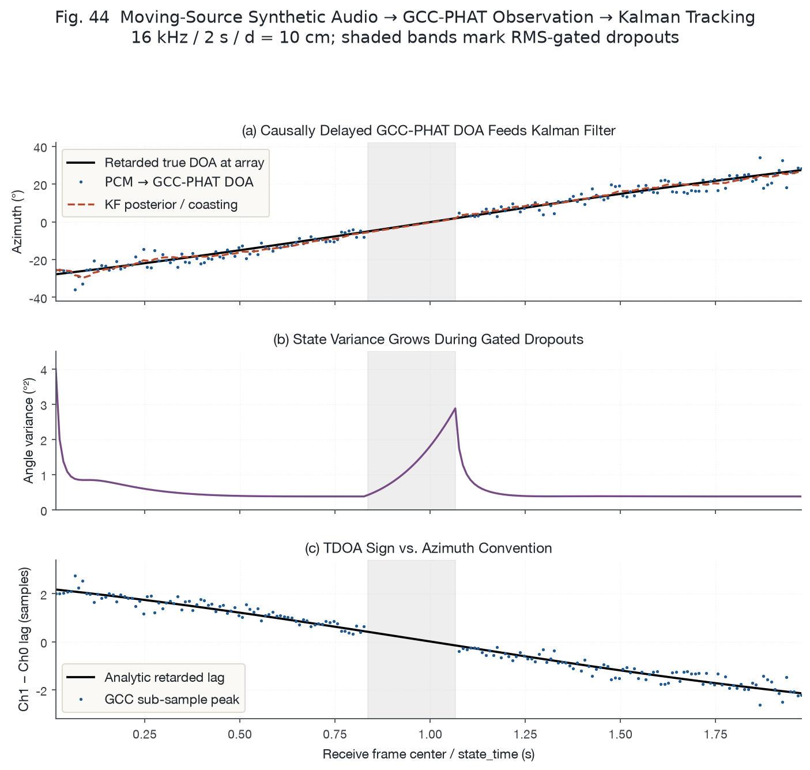
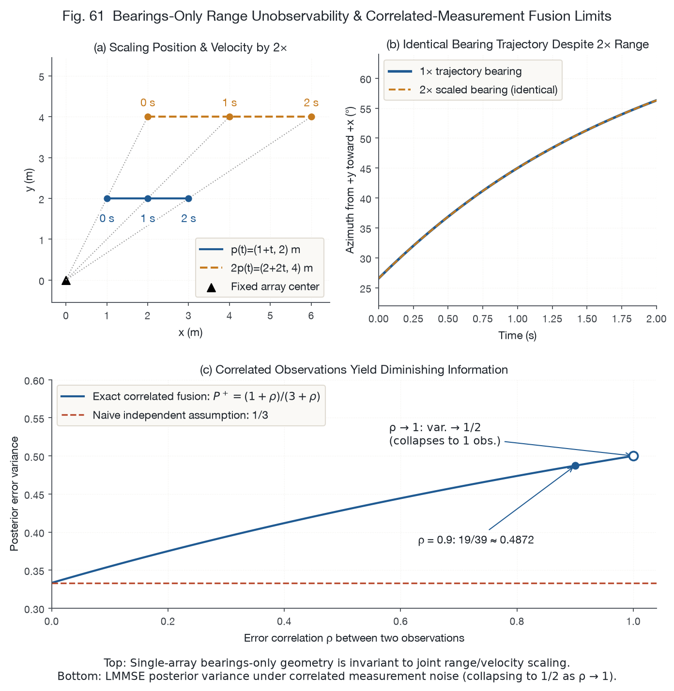
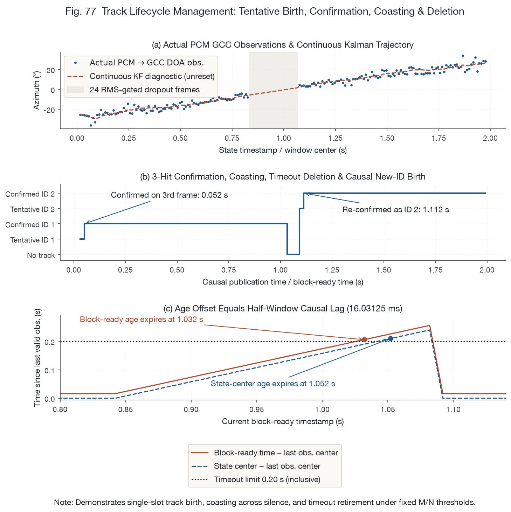

On this page
This chapter is Chapter 9 of the main text; the book comprises 16 chapters across the core chapters and extended topics (Chapters 0–15, where Chapter 0 covers mathematical foundations and Chapters 12–15 are four extended special topics), plus Appendices A and B. This chapter can be read independently; see the navigation links below for the preceding and following chapters.
Overview: 🏠 Course Overview | Previous: Chapter 8 · Multichannel Speech Separation | Next: Chapter 10 · Real-Time Systems, Evaluation & Deployment
9. Source Tracking
9.1 Problem Formulation and Acoustic Specifics
Core Terminology and Reading Roadmap
Whereas Chapter 4's sound source localization answers "where did the sound come from in this frame?", this chapter's source tracking answers "combining previously accumulated observations, in which direction or position does the source currently reside, and how large is the estimation uncertainty?" When reading this chapter, we recommend first working through one complete Kalman filter recursion by hand, then understanding particle weighting/resampling and multi-target data association, and finally auditing state timestamps across module interfaces so that a lagging past direction is never mistaken for the current beam look direction.
| Term | Meaning in This Chapter |
|---|---|
| Direction of Arrival (DOA) | Acoustic source direction relative to a designated array coordinate frame |
| Voice Activity Detection (VAD) | Judges whether acoustic speech evidence exists in the current frame; not equivalent to judging whether a speaker has left the room |
| State, Measurement, Innovation | Latent variable to be estimated, observation emitted by the localizer, and residual of current measurement minus predicted measurement |
| Prior, Posterior | Probability distribution of the state before and after incorporating the current frame's measurement |
| Covariance | Second central moment of estimation error; diagonal entries give component variances and off-diagonal entries capture linear error correlations |
| Track Label | Local persistent identifier maintained by the tracker; does not automatically equate to permanent speaker identity |
Directional States, Positional States, and Observability
Source tracking fuses noisy, pause-interrupted frame-by-frame localization estimates into smooth trajectories, supplying low-jitter causal look-direction estimates to adaptive beamformers. Designing the state vector depends on available measurements and downstream needs: tracking horizontal azimuth alone typically uses $\vec{s}_t=[\theta_t,\dot{\theta}_t]^\top$, sharp turns or frequent starts/stops may augment angular acceleration $\ddot{\theta}_t$, and joint 2-D planar position tracking uses $\vec{s}_t=[x_t,y_t,\dot{x}_t,\dot{y}_t]^\top$. Units of angular state components are angle, angular velocity, and angular acceleration respectively; Cartesian positional states must first fix the array reference origin, coordinate axis orientations, and length/time units.
Public benchmarks such as the official LOCATA task specification define six tasks spanning single/multiple sources, static/moving speakers, and moving arrays. Its development set provides synchronized multichannel recordings alongside 3-D ground-truth microphone and source coordinates, whereas its evaluation set releases audio and microphone positions only; when benchmarking frame-level localization or tracking errors on your own, select splits with ground-truth source coordinates and report statistics stratified by task number (see §10.6 for dataset selection guidelines).
Compared with radar or visual object tracking, indoor acoustic source tracking confronts four prominent physical challenges:
- Natural speech contains abundant inter-syllable gaps and inter-sentence pauses, causing intermittent measurement arrivals that require VAD-based measurement gating and trajectory coasting across brief silences;
- Strong early room reflections induce severe non-Gaussian biases and angular outliers (spurious peaks);
- In meetings and domestic spaces, the number of simultaneously active speakers varies dynamically over time;
- Array-measured DOAs map strongly nonlinearly to Cartesian source coordinates.
Suppose a planar state comprises position and velocity $[x,y,\dot{x},\dot{y}]^\top$ with the array geometric center at $(x_0,y_0)$. Retaining the azimuth convention of Chapters 2–5 ("$+y$ axis as $0^\circ$, positive clockwise toward $+x$"), the noiseless azimuth measurement function is $\theta=\operatorname{atan2}(x-x_0,y-y_0)$ (for four-quadrant arctangent and circular angle wrapping, see Chapter 0, §0.1). Notice that the first argument of atan2 here is the horizontal displacement $x-x_0$ ($\propto\sin\theta$) and the second argument is the forward displacement $y-y_0$ ($\propto\cos\theta$)—never copy the standard mathematical polar-angle argument order $\operatorname{atan2}(y-y_0,x-x_0)$ blindly.
For an array centered at $(0,0)$ and a source at $(1\ \mathrm{m},2\ \mathrm{m})$, our convention gives $\operatorname{atan2}(1,2)\approx 26.565^\circ$; accidentally swapping the two arguments yields $\operatorname{atan2}(2,1)\approx 63.435^\circ$, which is the polar angle measured from $+x$. Either convention is valid internally, but localizers, trackers, and beamformer steering vectors must share the exact same angle convention—mixing them steers the beam straight off the target.
From a geometric observability perspective, a single stationary array measuring azimuth alone cannot uniquely determine source range. For an array at the origin, sources at $(1\ \mathrm{m},1\ \mathrm{m})$ and $(2\ \mathrm{m},2\ \mathrm{m})$ lie along the exact same ray and both yield $\operatorname{atan2}=45^\circ$; scaling coordinates radially by any positive factor leaves azimuth readings completely invariant.
Even across arbitrarily many frames, as long as the array stays stationary and the source moves along a constant-velocity straight line of unknown speed, multiplying both initial position and initial velocity by any positive scalar $a>0$ produces frame-for-frame identical instantaneous azimuths at every time instant (Exercise E09-21 provides a three-timestamp numerical check and Jacobian null-space proof). Accumulating more frames reduces angular noise along the observable tangential direction, but cannot eliminate radial scale ambiguity out of thin air; replacing a linear Kalman filter with an Extended Kalman Filter (EKF) or Unscented Kalman Filter (UKF) still cannot "compute" true range from bearings-only measurements.
Achieving 2-D or 3-D positional tracking requires spatially separated subarrays, Time Difference of Arrival (TDOA) wavefront-curvature/range cues, or known array motion satisfying observability conditions such as nonzero relative acceleration (for theoretical observability criteria, see Nardone & Aidala 1981 / Fogel & Gavish 1989 bearings-only observability analysis).
Once multiple subarrays or known array maneuvers render position observable, one must still handle the nonlinearity of $\operatorname{atan2}$. An EKF locally linearizes nonlinear measurements via a first-order Taylor expansion (Jacobian matrix) around the predicted mean; a UKF deterministically selects a small set of representative points around the predicted mean matching its covariance structure (called Sigma points—not extra physical acoustic sources), passes each point directly through the exact nonlinear measurement function, and recovers the predicted measurement mean and covariance by weighted summation.
For an $L$-dimensional state vector, standard symmetric or scaled unscented transforms construct $2L+1$ Sigma points: $9$ points for a planar position–velocity state ($L=4$) and $5$ points for an azimuth–angular-velocity state ($L=2$) (minimal-skew simplex and spherical-radial variants using fewer points also exist in practice, so $2L+1$ is not universal across all UKFs). When a speaker approaches close to the array or sweeps rapidly past it so azimuth varies sharply with position, UKFs or particle filters outperform first-order linearized EKFs; if a source passes directly through the array center $(x_0,y_0)$, however, azimuth is geometrically undefined and no filter can bypass that physical singularity. We begin below with the foundational linear Kalman filter (KF), then extend systematically to nonlinear measurements and multiple motion models.
9.2 Single-Target Tracking
9.2.1 Kalman Prediction, Measurement Update, and Angular Boundaries
Denoting discrete frame index by $t$, $d$-dimensional latent state column vector by $\vec{s}_t\in\mathbb{R}^d$, and $p$-dimensional localizer measurement vector by $\vec{z}_t\in\mathbb{R}^p$, the linear state-space model reads:
$$\begin{aligned} \vec{s}_t&=\mathbf{F}\vec{s}_{t-1}+\vec{v}_t,\\ \vec{z}_t&=\mathbf{H}\vec{s}_t+\vec{w}_t. \end{aligned}\tag{9-1}$$
Here $\mathbf{F}\in\mathbb{R}^{d\times d}$ is the state transition matrix governing deterministic kinematics between adjacent frames; $\mathbf{H}\in\mathbb{R}^{p\times d}$ is the observation matrix mapping the $d$-dimensional state into the $p$-dimensional measurement space; and $\vec{v}_t\in\mathbb{R}^d$, $\vec{w}_t\in\mathbb{R}^p$ denote process noise (unmodeled random accelerations or turns) and measurement noise (single-frame DOA estimation error), respectively.
Standard Kalman derivations assume $\vec{v}_t$ and $\vec{w}_t$ are zero-mean white sequences, mutually uncorrelated and orthogonal to initial state estimation error. Under these conditions, process noise covariance $\mathbf{Q}=\mathbb{E}[\vec{v}_t\vec{v}_t^\top]$ ($d\times d$) and measurement noise covariance $\mathbf{R}=\mathbb{E}[\vec{w}_t\vec{w}_t^\top]$ ($p\times p$) are symmetric positive semidefinite (typically requiring positive-definite $\mathbf{R}$ for well-conditioned inversion). Systematic mounting angle biases (nonzero noise mean) require state augmentation or prior calibration; strong inter-frame measurement noise correlations induced by heavily overlapping STFT windows require cross-covariance accounting or state augmentation.
Given observations up to frame $t-1$, denote the prior predicted mean at frame $t$ by $\hat{\vec{s}}_t^-$, prior error by $\vec{e}_t^-=\vec{s}_t-\hat{\vec{s}}_t^-$, and prior error covariance by $\mathbf{P}_t^-=\mathbb{E}[\vec{e}_t^-(\vec{e}_t^-)^\top]$ ($d\times d$); after incorporating measurement $\vec{z}_t$, denote posterior mean and error covariance by $\hat{\vec{s}}_t$ and $\mathbf{P}_t$, and Kalman gain by $\mathbf{K}_t\in\mathbb{R}^{d\times p}$. Whenever the zero-mean uncorrelated second-order statistics hold, the Kalman recursion is the Linear Minimum Mean Square Error (LMMSE) estimator among all linear unbiased estimators; if initial state and noises are further jointly Gaussian, the posterior remains strictly Gaussian parameterized completely by $(\hat{\vec{s}}_t,\mathbf{P}_t)$, coinciding with the exact Bayesian conditional mean (for LMMSE and Bayesian recursion foundations see Chapter 0, §0.6, and for original proofs see Kalman's 1960 seminal paper, §Optimal Estimates and Theorem 3).
When checking matrix dimensions and physical units, entry $(i,j)$ of a covariance matrix carries the product of the units of state components $i$ and $j$. For two-component angular motion $\vec{s}_t=[\theta_t,\dot{\theta}_t]^\top$ ($\mathrm{deg}$ and $\mathrm{deg/frame}$), the diagonal entries of $\mathbf{P}_t$ have units $\mathrm{deg}^2$ and $(\mathrm{deg/frame})^2$, off-diagonal cross-covariances have units $\mathrm{deg}^2/\mathrm{frame}$, and the observation matrix is $\mathbf{H}=[1,\ 0]$ (for a three-component state $[\theta,\dot{\theta},\ddot{\theta}]^\top$ including angular acceleration, $\mathbf{H}=[1,\ 0,\ 0]$—never misread those three components as 3-D spatial coordinates).
When the localizer emits a single scalar azimuth per frame ($p=1$), the measurement reduces to scalar $\theta_t^{\mathrm{obs}}$, and both $\mathbf{R}$ and innovation covariance $\mathbf{S}_t$ reduce to $1\times 1$ scalar variances written as $R$ and $S_t$ below while retaining boldface $\mathbf{R}$ and $\mathbf{S}_t$ in general multivariate equations.
Each frame alternates between "time prediction" and "measurement update": prediction propagates the mean forward along the kinematic model while accumulating process uncertainty; update forms the residual between observed and predicted measurements (the innovation), then adjusts the state and shrinks error covariance according to relative prior-versus-measurement uncertainties.
Five-Step Kalman Filter (KF) Recursion (for [angle, angular velocity] state):
-
Predict state:
$$\hat{\vec{s}}^-_t = \mathbf{F}\hat{\vec{s}}_{t-1}.\tag{9-2}$$
-
Predict covariance:
$$\begin{aligned} \mathbf{P}^-_t&=\mathbf{F}\mathbf{P}_{t-1}\mathbf{F}^\top +\mathbf{Q}. \end{aligned}\tag{9-3}$$
$\mathbf{F}$ maps and couples the previous frame's error covariance into the current frame, and $\mathbf{Q}$ adds process noise from unmodeled maneuvers. Note one cannot sweepingly assert that every entry of $\mathbf{P}_t^-$ grows larger for arbitrary $\mathbf{F}$ (see Exercise E09-18's negative cross-covariance counterexample); under uncorrelated initial errors or same-sign cross-covariances in constant-velocity coasting, however, angle variance grows monotonically across missed frames.
-
Compute Kalman gain:
$$\begin{aligned} \mathbf{S}_t&=\mathbf{H}\mathbf{P}_t^-\mathbf{H}^\top+\mathbf{R},\\ \mathbf{K}_t&=\mathbf{P}_t^-\mathbf{H}^\top\mathbf{S}_t^{-1}. \end{aligned}\tag{9-4}$$
Here $\mathbf{R}$ is the measurement noise covariance from Eq. (9-1) and $\mathbf{S}_t$ is total innovation covariance. For scalar DOA ($p=1$) holding the other variance fixed, smaller measurement variance increases angle gain whereas smaller predicted angle variance decreases angle gain—a scalar monotonicity intuition that should not be extrapolated naively entry-by-entry to general multivariate matrix gains.
-
Update state:
$$\begin{aligned} \nu_t&=\theta_t^{\mathrm{obs}}-\mathbf{H}\hat{\vec{s}}_t^-,\\ \hat{\vec{s}}_t&=\hat{\vec{s}}_t^-+\mathbf{K}_t\nu_t. \end{aligned}\tag{9-5}$$
The difference $\nu_t$ on the first line is the innovation, quantifying new information beyond prior prediction; in multivariate settings $\vec{\nu}_t=\vec{z}_t-\mathbf{H}\hat{\vec{s}}_t^-$ has covariance $\mathbf{S}_t$ ($S_t$ in the scalar case).
-
Update covariance:
$$\begin{aligned} \mathbf{P}_t&=(\mathbf{I}-\mathbf{K}_t\mathbf{H})\mathbf{P}^-_t. \end{aligned}\tag{9-6}$$
Whenever azimuths cross the branch cut of the representation interval, angular innovation in Eq. (9-5) must never use plain real subtraction. Standardizing principal horizontal azimuths onto the half-open interval $[-180^\circ,180^\circ)$ defines the shortest circular wrap operator:
$$\begin{aligned} b&=\alpha+180^\circ,\\ r&=b\bmod 360^\circ,\\ \operatorname{wrap}_{180}(\alpha)&=r-180^\circ. \end{aligned}\tag{9-7}$$
Here $\bmod$ takes the nonnegative remainder $r\in[0^\circ,360^\circ)$ matching the positive divisor $360^\circ$. Step 4 wraps raw angle difference $\Delta\theta_t=\theta_t^{\mathrm{obs}}-\mathbf{H}\hat{\vec{s}}_t^-$ as $\nu_t=\operatorname{wrap}_{180}(\Delta\theta_t)$; after both prediction and update steps, the angle component of the state vector must likewise wrap back into $[-180^\circ,180^\circ)$, whereas angular velocity $\dot{\theta}_t$ lives in the Euclidean tangent space and must never be wrapped! Numerically, keep input angles near the principal interval before differencing and wrapping to avoid unnecessary floating-point mantissa loss on tiny differences.
Consider an intuitive example: suppose predicted azimuth is $+179^\circ$ and measured azimuth is $-179^\circ$. Physically on the circle, the speaker stepped just $+2^\circ$ clockwise across the rear seam, yet naive subtraction gives $-358^\circ$—without wrapping, the filter hallucinates a violent nearly full-circle counter-rotation yanking the state wildly backward, while innovation gating falsely rejects this spot-on measurement as an outlier!
At exact antipodal separation ($180^\circ$ apart), clockwise and counterclockwise arcs tie in length and Eq. (9-7) returns $-180^\circ$ by half-open convention, leaving true turn direction ambiguous from innovation sign alone. Keep two domain boundaries in mind as well: wrapping resolves unimodal local Gaussians straddling an artificial coordinate seam, whereas genuinely broad or front–back bimodal posteriors require circular statistics or particle filters; conversely, a wall-mounted linear array operating strictly over $[-90^\circ,90^\circ]$ has physically distinct endfire boundaries and must not apply $360^\circ$ wrap-around.
Why does covariance update take the compact form Eq. (9-6) on paper while production code universally prefers the longer Joseph stabilized form? Deriving posterior error covariance from scratch yields both the Joseph formula and the optimal gain Eq. (9-4) in one stroke. For any linear gain matrix $\mathbf{K}_t\in\mathbb{R}^{d\times p}$, substituting $\vec{z}_t=\mathbf{H}\vec{s}_t+\vec{w}_t$ into $\mathbf{K}_t\vec{\nu}_t$ ($\vec{\nu}_t=\vec{z}_t-\mathbf{H}\hat{\vec{s}}_t^-$) expresses posterior error $\vec{e}_t=\vec{s}_t-\hat{\vec{s}}_t$ as a linear combination of prior error $\vec{e}_t^-=\vec{s}_t-\hat{\vec{s}}_t^-$ and measurement noise $\vec{w}_t$:
$$\begin{aligned} \vec{e}_t &=\vec{s}_t-\hat{\vec{s}}_t^- -\mathbf{K}_t(\mathbf{H}\vec{e}_t^-+\vec{w}_t)\\ &=(\mathbf{I}-\mathbf{K}_t\mathbf{H})\vec{e}_t^- -\mathbf{K}_t\vec{w}_t. \end{aligned}$$
Because prior error $\vec{e}_t^-$ depends solely on past history and is uncorrelated with current white measurement noise $\vec{w}_t$ ($\mathbb{E}[\vec{e}_t^-\vec{w}_t^\top]=\mathbf{0}$), cross-terms vanish identically inside $\mathbf{P}_t=\mathbb{E}[\vec{e}_t\vec{e}_t^\top]$, immediately yielding the universal Joseph covariance update valid for any gain matrix:
$$\begin{aligned} \mathbf{A}_t&=\mathbf{I}-\mathbf{K}_t\mathbf{H},\\ \mathbf{P}_t&=\mathbf{A}_t\mathbf{P}_t^-\mathbf{A}_t^\top +\mathbf{K}_t\mathbf{R}\mathbf{K}_t^\top. \end{aligned}\tag{9-8}$$
Why the Gain Weights by Uncertainty
Armed with universal error covariance Eq. (9-8), deriving Eq. (9-4) reduces to minimizing total posterior mean-square error across all state components—the trace $J(\mathbf{K}_t)=\operatorname{tr}(\mathbf{P}_t)$. Inspect the scalar case ($d=p=1$, $H=1$) first: posterior error is $e^+=(1-k)e^--kw$ with positive variances $P^-$ and $R$; differentiating with respect to $k$ and setting to zero gives:
$$\begin{aligned} J(k)&=\mathbb{E}[(s-\hat{s}^+)^2]=(1-k)^2P^-+k^2R,\\ J'(k)&=-2(1-k)P^-+2kR=0,\\ k_*&=\frac{P^-}{P^-+R}. \end{aligned}\tag{9-9}$$
At $P^-=4$ and $R=1$, optimal weight $k_*=4/(4+1)=4/5$ shrinks posterior variance to $P^+=(1/5)^2\times 4+(4/5)^2\times 1=4/5$ (matching $(1-k_*)P^-$): whichever source has smaller variance pulls the posterior mean closer; conversely, if a measurement carries unmodeled reverberant bias, setting $R$ artificially small aggressively drags the state onto that bias.
Lifting the exact same derivative to matrices: writing $\mathbf{S}_t=\mathbf{H}\mathbf{P}_t^-\mathbf{H}^\top+\mathbf{R}$ and expanding Eq. (9-8) gives
$$\begin{aligned} \mathbf{P}_t &=\mathbf{P}_t^--\mathbf{K}_t\mathbf{H}\mathbf{P}_t^- -\mathbf{P}_t^-\mathbf{H}^\top\mathbf{K}_t^\top +\mathbf{K}_t\mathbf{S}_t\mathbf{K}_t^\top. \end{aligned}$$
Applying standard trace-gradient identities ($\nabla_{\mathbf{K}}\operatorname{tr}(\mathbf{K}\mathbf{B})=\mathbf{B}^\top$ and $\nabla_{\mathbf{K}}\operatorname{tr}(\mathbf{K}\mathbf{S}\mathbf{K}^\top)=2\mathbf{K}\mathbf{S}$ for symmetric $\mathbf{P}_t^-,\mathbf{S}_t$) and setting the gradient to zero yields:
$$\begin{aligned} \frac{\partial\operatorname{tr}(\mathbf{P}_t)}{\partial\mathbf{K}_t} &=-2\mathbf{P}_t^-\mathbf{H}^\top +2\mathbf{K}_t\mathbf{S}_t=\mathbf{0},\\ \mathbf{K}_t&=\mathbf{P}_t^-\mathbf{H}^\top\mathbf{S}_t^{-1}, \end{aligned}$$
which is precisely optimal Kalman gain Eq. (9-4)! Right-multiplying $\mathbf{K}_t\mathbf{S}_t=\mathbf{P}_t^-\mathbf{H}^\top$ by $\mathbf{K}_t^\top$ and substituting into the last term of the expanded $\mathbf{P}_t$ cancels $-\mathbf{P}_t^-\mathbf{H}^\top\mathbf{K}_t^\top$, leaving shorthand Eq. (9-6) ($\mathbf{P}_t=\mathbf{A}_t\mathbf{P}_t^-$).
Thus shorthand Eq. (9-6) equals Eq. (9-8) only when $\mathbf{K}_t$ equals the exact optimal gain: Eq. (9-6) is convenient for hand calculations, whereas under finite-precision floating-point arithmetic or engineered gain clamping, multiplying two asymmetric matrices $(\mathbf{I}-\mathbf{K}_t\mathbf{H})\mathbf{P}_t^-$ easily breaks symmetry or produces negative diagonal variances—making Joseph form Eq. (9-8), which sums two symmetric positive-semidefinite quadratic forms, far superior numerically (code should still validate input positive semidefiniteness rather than masking invalid negative-variance inputs behind Joseph updates).
Innovation Gating and Covariance Validity
Strong room reflections routinely spawn transient spurious peaks far from the true speaker, requiring a statistical sanity check on the innovation relative to current prediction uncertainty prior to updating. For innovation vector $\vec{\nu}_t\in\mathbb{R}^p$ and innovation covariance $\mathbf{S}_t$, the Normalized Innovation Squared (NIS, or squared Mahalanobis distance) is
$$\begin{aligned} \epsilon_\nu&=\vec{\nu}_t^\top\mathbf{S}_t^{-1}\vec{\nu}_t,\\ p=1:\quad\epsilon_\nu&=\nu_t^2/S_t. \end{aligned}\tag{9-10}$$
Under a valid linear-Gaussian model, accurate data association, and positive-definite $\mathbf{S}_t$, $\epsilon_\nu$ prior to gating follows a chi-squared distribution $\chi_p^2$ with $p$ degrees of freedom (for $p=1$, $\epsilon_\nu\le 9$ corresponds to a $3\sigma$ normal interval with $\approx 0.27\%$ theoretical false-rejection rate). Keep three caveats in mind when gating outliers in practice: first, falling inside the gate does not mean "the posterior probability that this measurement originated from the target is $99.7\%$"; second, once above-threshold samples are rejected, surviving innovations follow a truncated distribution and cannot be tested directly against an untruncated $\chi_p^2$ goodness-of-fit test; third, circular Gaussianity holds only locally for narrow angular errors—Exercises E09-05 and E09-17 verify NIS behavior across $\pm 180^\circ$ wrap-around and degree/radian unit conversions.
9.2.2 Worked Example 9-1: Step-by-Step Hand Calculation of One Kalman Filter Cycle
Let us walk through one complete prediction-and-update cycle of Eqs. (9-2)–(9-6) with concrete numbers for a single speaker moving smoothly in azimuth relative to an array (note that a stationary speaker merely turning their head in place does not shift acoustic mouth location and generally does not produce such translational azimuth trajectories).
Inputs and model specification. Take two-component angular state $\vec{s}_t=[\theta_t,\dot{\theta}_t]^\top$ in degrees ($\mathrm{deg}$) and degrees per frame ($\mathrm{deg/frame}$). A constant-velocity model omitting angular acceleration suits smooth motion segments; frequent starts/stops or sharp turns warrant acceleration states or §9.2.3's Interacting Multiple Model (IMM). Inputs for step $t$ are:
- Previous posterior mean: $\hat{\vec{s}}_{t-1}=[30,\ 0.5]^\top$ (estimated azimuth $30^\circ$, moving positively at $0.5^\circ/\mathrm{frame}$);
- Previous posterior covariance: $\mathbf{P}_{t-1}=\operatorname{diag}(4,0.25)$ (angle std $2^\circ$ / variance $4\ \mathrm{deg}^2$, angular-velocity std $0.5\ \mathrm{deg/frame}$ / variance $0.25\ (\mathrm{deg/frame})^2$, zero initial correlation);
- State transition matrix ($1$-frame constant-velocity step): $\mathbf{F}=\begin{bmatrix}1&1\\0&1\end{bmatrix}$, encoding $\theta_t=\theta_{t-1}+1\cdot\dot{\theta}_{t-1}$ and $\dot{\theta}_t=\dot{\theta}_{t-1}$;
- Process noise covariance: $\mathbf{Q}=\begin{bmatrix}0.1&0\\0&0.01\end{bmatrix}$, modeling small unmodeled frame-to-frame motion fluctuations (larger $\mathbf{Q}$ relaxes the motion prior);
- Observation model and reading: scalar azimuth output gives $\mathbf{H}=[1,\ 0]$; frame $t$ measures $\theta_t^{\mathrm{obs}}=32^\circ$ with scalar measurement variance $R=25\ \mathrm{deg}^2$ ($1\times 1$ matrix $\mathbf{R}=[25]$, i.e., $5^\circ$ single-frame DOA std—coarser than the prior prediction).
Step 1: State prediction $\hat{\vec{s}}_t^-=\mathbf{F}\hat{\vec{s}}_{t-1}$. Adding previous angular velocity onto azimuth gives:
$$\begin{aligned} \hat{\vec{s}}_t^-&=\begin{bmatrix}1&1\\0&1\end{bmatrix} \begin{bmatrix}30\\0.5\end{bmatrix}\\ &=\begin{bmatrix}30+0.5\\0.5\end{bmatrix} =\begin{bmatrix}30.5\\0.5\end{bmatrix}. \end{aligned}$$
Before seeing the new measurement, the model extrapolates azimuth to $30.5^\circ$ at $0.5^\circ/\mathrm{frame}$.
Step 2: Covariance prediction ($\mathbf{P}_t^-$ via Eq. (9-3)). Multiply in two stages—$\mathbf{F}\mathbf{P}_{t-1}$ first, then right-multiply by $\mathbf{F}^\top=\begin{bmatrix}1&0\\1&1\end{bmatrix}$:
$$\begin{aligned} \mathbf{F}\mathbf{P}_{t-1} &=\begin{bmatrix}1&1\\0&1\end{bmatrix} \begin{bmatrix}4&0\\0&0.25\end{bmatrix} =\begin{bmatrix}4&0.25\\0&0.25\end{bmatrix},\\ \mathbf{F}\mathbf{P}_{t-1}\mathbf{F}^\top &=\begin{bmatrix}4+0.25&0.25\\0.25&0.25\end{bmatrix} =\begin{bmatrix}4.25&0.25\\0.25&0.25\end{bmatrix}. \end{aligned}$$
Notice that even before adding $\mathbf{Q}$, top-left angle variance has grown from $4$ to $4.25$ and off-diagonal entries have acquired $+0.25$ positive correlation—because angular velocity carried $0.25$ variance, extrapolating across one frame couples any velocity overestimate into an angle overestimate of matching sign! Adding process noise $\mathbf{Q}$ gives:
$$\begin{aligned} \mathbf{P}_t^-&=\begin{bmatrix}4.25&0.25\\0.25&0.25\end{bmatrix} +\begin{bmatrix}0.1&0\\0&0.01\end{bmatrix}\\ &=\begin{bmatrix}4.35&0.25\\0.25&0.26\end{bmatrix}, \end{aligned}$$
corresponding to predicted angle std $\sqrt{4.35}\approx 2.09^\circ$.
Step 3: Kalman gain $\mathbf{K}_t=\mathbf{P}_t^-\mathbf{H}^\top S_t^{-1}$. Since $\mathbf{H}=[1,\ 0]$ extracts the first coordinate, $\mathbf{H}\mathbf{P}_t^-\mathbf{H}^\top$ picks out top-left entry $4.35$, giving scalar innovation variance
$$\begin{aligned} S_t&=\mathbf{H}\mathbf{P}_t^-\mathbf{H}^\top+R\\ &=4.35+25=29.35\ \mathrm{deg}^2. \end{aligned}$$
Numerator $\mathbf{P}_t^-\mathbf{H}^\top=[4.35,\ 0.25]^\top$ is column $1$ of $\mathbf{P}_t^-$; dividing by $S_t$ yields the $2\times 1$ gain vector:
$$\begin{aligned} \mathbf{K}_t&=\frac{1}{29.35}\begin{bmatrix}4.35\\0.25\end{bmatrix} \approx\begin{bmatrix}0.148\\0.0085\end{bmatrix}. \end{aligned}$$
To six decimal places, $K_1\approx 0.148211$ and $K_2\approx 0.008518$. Both entries carry transparent physical meaning: $K_1\approx 0.148$ shows that because single-frame measurement variance ($25$) is much larger than predicted angle variance ($4.35$), the angle update trusts only $\approx 14.8\%$ of the innovation; meanwhile, even though the localizer never measures angular velocity directly, positive cross-covariance $P_{21}^-=0.25>0$ couples positive angle residuals into a slight upward velocity nudge of $K_2\approx 0.0085\ (\mathrm{frame})^{-1}$!
Step 4: State update $\hat{\vec{s}}_t=\hat{\vec{s}}_t^-+\mathbf{K}_t\nu_t$. Angular innovation is $\nu_t=32^\circ-30.5^\circ=1.5^\circ$ (no $\pm 180^\circ$ seam crossing); substituting exact fractional gains gives
$$\begin{aligned} \hat{\vec{s}}_t&=\begin{bmatrix}30.5\\0.5\end{bmatrix} +\frac{1.5}{29.35}\begin{bmatrix}4.35\\0.25\end{bmatrix}\\ &\approx\begin{bmatrix}30.722317\\0.512777\end{bmatrix}. \end{aligned}$$
Posterior azimuth settles at $30.72^\circ$—between prediction $30.5^\circ$ and noisy measurement $32^\circ$, leaning decisively toward the more reliable prediction—while angular velocity nudges up to $0.513^\circ/\mathrm{frame}$.
Step 5: Covariance update ($\mathbf{P}_t$ via Eq. (9-6)). Always substitute unrounded exact fractional gain $\mathbf{K}_t=[4.35,\ 0.25]^\top/29.35$ during hand calculations (plugging in 2- or 3-digit rounded intermediates corrupts trailing digits and can even make off-diagonal entries asymmetric):
$$\begin{aligned} \mathbf{I}-\mathbf{K}_t\mathbf{H} &=\begin{bmatrix}1-4.35/29.35&0\\-0.25/29.35&1\end{bmatrix} =\begin{bmatrix}25/29.35&0\\-0.25/29.35&1\end{bmatrix},\\ \mathbf{P}_t&=(\mathbf{I}-\mathbf{K}_t\mathbf{H})\mathbf{P}_t^- \approx\begin{bmatrix}3.705&0.213\\0.213&0.258\end{bmatrix}. \end{aligned}$$
Checking exact fractions entry by entry: $P_{11}=25\times 4.35/29.35\approx 3.705281$, $P_{12}=P_{21}=25\times 0.25/29.35\approx 0.212947$, and $P_{22}=0.26-0.25^2/29.35\approx 0.257871$, rounded to three decimals only at the very end (prematurely rounding $25/29.35\approx 0.8518$ to $0.852$ would yield $0.852\times 4.35=3.7062$).
Interpretation and failure boundaries. Fusing the measurement reduces angle variance from $4.35\ \mathrm{deg}^2$ down to $3.705\ \mathrm{deg}^2$ (std narrowing from $2.09^\circ$ to $\approx 1.92^\circ$), confirming that even a coarse $5^\circ$-std measurement improves upon prediction alone when unbiased and properly calibrated. If the speaker pauses on the next frame so no valid DOA arrives, Steps 3–5 are skipped while Steps 1–2 coast the state forward and widen angle variance—the exact mathematical mechanism of §9.4's "silence hold." Conversely, if the speaker stops abruptly and reverses direction (violating constant velocity) or $32^\circ$ is replaced by an $85^\circ$ wall-reflection outlier without Eq. (9-10) gating, nominal $\mathbf{P}_t$ still shrinks on paper while true directional error degrades sharply!
Fixed-Gain Filters and Selecting Single-Target Trackers
Having mastered the linear Kalman recursion, let us compare six single-target acoustic tracking families side by side. Among them, $\alpha$-$\beta$ and $\alpha$-$\beta$-$\gamma$ filters replace time-varying gain Eq. (9-4) with offline constant gains to skip per-frame covariance updates: when sampling interval, kinematics, and noise variances remain stationary and the constants equal the steady-state algebraic Riccati solution, they match steady-state KF identically; once frame-rate jitter or SNR swings alter true $R$, or gains are tuned ad hoc, fixed gains cannot rebalance weights automatically (for $\alpha$-$\beta$ equivalence to steady-state KF see Ekstrand 2012, §9.1, and for $\alpha$-$\beta$-$\gamma$ stability/optimality see Kosuge & Ito 2002).
| Method | Principle | Strengths | Limitations | Best Suited For |
|---|---|---|---|---|
| Moving Average / Median / Histogram Mode | Average is linear smoothing; median/mode are nonlinear summaries | Simple, no covariance recursion | Implicit local stationarity; high lag, poor on maneuvers, blurs multiple sources | Slow single targets with dense observations (baseline) |
| $\alpha$-$\beta$ / $\alpha$-$\beta$-$\gamma$ | Updates position, velocity (and acceleration) predictions with fixed gains | No online Riccati covariance recursion | Heuristic gains may be suboptimal; cannot adapt when noise statistics shift | Resource-constrained single-target tracking at steady frame rate |
| Kalman Filter (KF) | Linear-Gaussian Bayesian recursion (predict + innovation-weighted update) | Achieves MMSE/LMMSE when linear-Gaussian model holds | Dense cost $\approx O(d^3+p^3)$; scalar DOA is tiny, yet sensitive to outliers and requires $\mathbf{Q}/\mathbf{R}$ tuning | Clean or gated DOA observations under near-linear kinematics |
| EKF / UKF | First-order linearization / unscented transform for nonlinearities | Handles nonlinear Cartesian-to-angle mappings | EKF sensitive to linearization error; standard symmetric/scaled UKF propagates $2L+1$ Sigma points | Position-level tracking across distributed subarrays |
| Interacting Multiple Model (IMM) | Mixes initial states via Markov transition probabilities, predicts/updates per mode, reweights by innovation likelihood | Smoothly switches across preset motion regimes | Compute scales with mode count; unmodeled maneuvers still mismatch; requires transition tuning | Start–stop–walk maneuvering speaker scenarios |
| Particle Filter (PF) / SIR | Weighted particle ensemble approximating posterior; predict, weight, resample on demand | Represents nonlinear, non-Gaussian, multimodal posteriors | Outlier robustness hinges on likelihood + clutter model; subject to weight degeneracy and sample impoverishment | Multimodal reverberant observations or strongly nonlinear dynamics |
Engineering selection progresses along two orthogonal axes: first, kinematic complexity—a two-state constant-velocity KF suffices for gently moving speakers (taking barely a dozen scalar MACs per frame at $d=2,p=1$), upgrading to IMM when speakers alternate between standing still and brisk walking; second, measurement geometry and noise tails—single-array far-field azimuth tracking uses linear observation $\mathbf{H}$, multi-subarray Cartesian fusion uses EKF/UKF, and heavily reverberant rooms spawning simultaneous direct and mirror-image peaks benefit from circular particle filters with clutter-mixture likelihoods to retain multimodal hypotheses without prematurely locking onto a wall reflection.
9.2.3 Motion-Model Switching and Nonlinear Measurements
Beginners reading tracking papers often conflate two orthogonal design choices: constant-velocity, constant-acceleration, and start–stop IMM answer "what temporal kinematics does the source obey?", whereas EKF, UKF, and particle filters answer "how are probability distributions or moments propagated through nonlinear mappings?" The two combine freely—for instance, in distributed-array positional tracking, each kinematic mode inside an IMM can run its own EKF or UKF.
Nonuniform Time Steps and Continuous-Time Process Noise
Worked Example 9-1 hid frame duration inside "per-frame" units; in real embedded pipelines, frame drops, VAD gating, or asynchronous multi-sensor arrivals produce variable time intervals $h>0$ ($\mathrm{s}$). Measuring time in seconds with angular state $\vec{s}=[\theta,\dot{\theta}]^\top$ ($\mathrm{deg}$ and $\mathrm{deg/s}$) driven by continuous-time zero-mean white angular acceleration of power spectral density (intensity) $q$, integrating the stochastic differential equation across interval $h$ (derived step-by-step in Exercise E09-04) yields time-consistent transition and discrete process-noise matrices:
$$\begin{aligned} \mathbf{F}(h)&=\begin{bmatrix}1&h\\0&1\end{bmatrix},\\ \mathbf{Q}(h)&=q\begin{bmatrix}h^3/3&h^2/2\\h^2/2&h\end{bmatrix}. \end{aligned}\tag{9-11}$$
With angle in $\mathrm{deg}$, $q$ has units $\mathrm{deg}^2/\mathrm{s}^3$, placing matrix entries in $\mathrm{deg}^2$, $\mathrm{deg}^2/\mathrm{s}$, and $\mathrm{deg}^2/\mathrm{s}^2$. Exercise E09-18 proves that stepping twice by $h$ matches stepping once by $2h$ identically under Eq. (9-11); changing hop size from $10\ \mathrm{ms}$ to $20\ \mathrm{ms}$ in code without recomputing $\mathbf{Q}(h)$ silently alters the underlying physical maneuver intensity!
EKF: Differentiating Under Our Azimuth Convention
For planar position–velocity state $\vec{s}=[x,y,\dot{x},\dot{y}]^\top$ and array center $(x_0,y_0)$, set relative displacements $a=x-x_0$, $b=y-y_0$, and squared horizontal range $r^2=a^2+b^2>0$. Under our convention ("$+y$ axis as $0\ \mathrm{rad}$, positive clockwise toward $+x$"), the radian nonlinear measurement function is $h(\vec{s})=\operatorname{atan2}(a,b)$.
Let us differentiate $h(\vec{s})$ carefully from first principles rather than copying textbook polar-angle Jacobians. On any local sector with $b\neq 0$, $\theta=\operatorname{atan2}(a,b)$ satisfies $\tan\theta=a/b$. Using $(\arctan u)'=(1+u^2)^{-1}$ with $u=a/b$ and applying the chain rule with respect to $x$ ($a$) and $y$ ($b$):
$$\begin{aligned} \frac{\partial h}{\partial x} &=\frac{1}{1+(a/b)^2}\cdot\frac{\partial(a/b)}{\partial a} =\frac{b^2}{a^2+b^2}\cdot\frac{1}{b}=+\frac{b}{r^2},\\ \frac{\partial h}{\partial y} &=\frac{1}{1+(a/b)^2}\cdot\frac{\partial(a/b)}{\partial b} =\frac{b^2}{a^2+b^2}\cdot\left(-\frac{a}{b^2}\right) =-\frac{a}{r^2}. \end{aligned}$$
Taking total differentials of $a=r\sin\theta, b=r\cos\theta$ ($b\,\mathrm{d}a-a\,\mathrm{d}b=r^2\,\mathrm{d}\theta$) confirms both partial derivatives extend smoothly across $b=0$ wherever $r>0$; velocity derivatives vanish since $h$ is position-only. Evaluating at prior prediction $\hat{\vec{s}}_t^-$ gives the $1\times 4$ EKF observation Jacobian and wrapped innovation:
$$\begin{aligned} \mathbf{H}_t &=\nabla_{\vec{s}}h(\hat{\vec{s}}_t^-) =\begin{bmatrix}b/r^2&-a/r^2&0&0\end{bmatrix},\\ \nu_t &=\operatorname{wrap}_{\pi}\!\bigl(z_t-h(\hat{\vec{s}}_t^-)\bigr). \end{aligned}\tag{9-12}$$
Double-check signs and argument order here: standard polar angle $\varphi=\operatorname{atan2}(y-y_0,x-x_0)$ has position partials $[-b/r^2,\ +a/r^2]$—the exact opposite signs of $[+b/r^2,\ -a/r^2]$ in Eq. (9-12)! Sanity-check physically at $(a,b)=(1\ \mathrm{m},2\ \mathrm{m})$ ($r^2=5\ \mathrm{m}^2$, forward-right): nudging right ($\Delta x>0$) increases clockwise azimuth, so $\partial h/\partial x=+2/5=+0.4\ \mathrm{rad/m}>0$; nudging forward ($\Delta y>0$) pulls azimuth back toward $0^\circ$, so $\partial h/\partial y=-1/5=-0.2\ \mathrm{rad/m}\lt 0$ (see Exercise E09-10 for a complete single-step EKF calculation). Pairing our atan2(x, y) convention with polar-angle Jacobian signs pushes state updates in the wrong direction and causes immediate divergence!
Three additional rules govern Eq. (9-12): first, $\operatorname{wrap}_\pi(\cdot)$ maps radian residuals into $[-\pi,\pi)$—if the localizer outputs degrees, multiply $\mathbf{H}_t$ by $180/\pi$ ($\mathrm{deg/m}$) and express $R$ in $\mathrm{deg}^2$; second, $\mathbf{H}_t$ propagates $S_t=\mathbf{H}_t\mathbf{P}_t^-\mathbf{H}_t^\top+R$ and $\mathbf{K}_t$ only, whereas innovation $\nu_t$ must evaluate exact $h(\hat{\vec{s}}_t^-)$ and never $\mathbf{H}_t\hat{\vec{s}}_t^-$ (in fact $\mathbf{H}_t[a,b,0,0]^\top=(ab-ab)/r^2=0$ identically!); third, as $r\to 0$, $\|\mathbf{H}_t\|=1/r\to\infty$, breaking first-order Taylor validity, with bearing undefined at $r=0$.
UKF: Propagating Sigma Points and Nonlinear Moments
When a speaker stands close to an array or prior uncertainty is wide, a single tangent slope poorly captures how an entire distribution warps through a curved function. The Unscented Transform (UT) avoids derivatives altogether, encoding $L$-dimensional prior mean $\vec{m}$ and covariance $\mathbf{P}$ via $2L+1$ deterministic Sigma points. The scaled UT introduces $\lambda=\alpha^2(L+\kappa)-L$ ($L+\lambda>0$), factors $\mathbf{A}\mathbf{A}^\top=(L+\lambda)\mathbf{P}$ via Cholesky decomposition (see Chapter 0, §0.3), and using columns $\vec{A}_i$ of $\mathbf{A}\in\mathbb{R}^{L\times L}$ constructs Sigma points along with mean weights $W_i^{(m)}$ and covariance weights $W_i^{(c)}$ (offset index $i=1,\ldots,L$; non-central weight index $i=1,\ldots,2L$):
$$\begin{aligned} \vec{\chi}_0&=\vec{m},\\ \vec{\chi}_i&=\vec{m}+\vec{A}_i,\qquad \vec{\chi}_{i+L}=\vec{m}-\vec{A}_i,\\ W_0^{(m)}&=\frac{\lambda}{L+\lambda},\qquad W_0^{(c)}=W_0^{(m)}+1-\alpha^2+\beta,\\ W_i^{(m)}&=W_i^{(c)}=\frac{1}{2(L+\lambda)}. \end{aligned}\tag{9-13}$$
Here $\alpha$ (typically $10^{-3}$–$1$) and $\kappa$ set the spread radius around $\vec{m}$, while $\beta$ incorporates higher-order moment knowledge ($\beta=2$ for Gaussian priors); note that when $\lambda\lt 0$, central weight $W_0^{(m)}\lt 0$, showing Sigma points are algebraic cubature nodes rather than nonnegative probability particles. Two lines verify exact recovery of the first two prior moments:
- Exact prior mean: Mean weights sum to $W_0^{(m)}+2L/[2(L+\lambda)]=(\lambda+L)/(L+\lambda)=1$, and symmetric offsets $+\vec{A}_i$ and $-\vec{A}_i$ cancel with equal weights, giving $\sum_{i=0}^{2L}W_i^{(m)}\vec{\chi}_i=\vec{m}$.
-
Exact prior covariance: Central deviation $\vec{\chi}_0-\vec{m}=\vec{0}$ contributes zero outer product regardless of $W_0^{(c)}$, while each symmetric pair $+\vec{A}_i,-\vec{A}_i$ contributes $2\vec{A}_i\vec{A}_i^\top$, summing to
$$\begin{aligned} \sum_{i=1}^L\frac{2\vec{A}_i\vec{A}_i^\top}{2(L+\lambda)} &=\frac{1}{L+\lambda}\mathbf{A}\mathbf{A}^\top=\mathbf{P}. \end{aligned}$$
Evaluating $\vec{y}_i=h(\vec{\chi}_i)$ directly on each Sigma point, Euclidean measurement mean, noise-free measurement covariance, and state–measurement cross-covariance follow from weighted sums:
$$\begin{aligned} \bar{\vec{y}}&=\sum_{i=0}^{2L} W_i^{(m)}\vec{y}_i,\\ \delta\vec{y}_i&=\vec{y}_i-\bar{\vec{y}},\qquad \delta\vec{s}_i=\vec{\chi}_i-\vec{m},\\ \mathbf{S}_y&=\sum_{i=0}^{2L} W_i^{(c)}\delta\vec{y}_i\delta\vec{y}_i^\top,\\ \mathbf{P}_{sy}&=\sum_{i=0}^{2L} W_i^{(c)}\delta\vec{s}_i\delta\vec{y}_i^\top, \end{aligned}\tag{9-14}$$
followed by $\mathbf{S}=\mathbf{S}_y+\mathbf{R}$, gain $\mathbf{K}=\mathbf{P}_{sy}\mathbf{S}^{-1}$, posterior mean $\vec{m}^+=\vec{m}+\mathbf{K}(\vec{z}-\bar{\vec{y}})$, and posterior covariance $\mathbf{P}^+=\mathbf{P}-\mathbf{K}\mathbf{S}\mathbf{K}^\top$.
For circular azimuth measurements $y_i=h(\vec{\chi}_i)\in[-\pi,\pi)$, line 1 of Eq. (9-14) must never average $y_i$ linearly (lest $+179^\circ$ and $-179^\circ$ average to $0^\circ$). Two circular adaptations are standard: when all weights are nonnegative and directions are concentrated, take the resultant vector angle of unit phasors $(\cos y_i,\sin y_i)$ per Eq. (9-19).
When scaled UT produces negative central weight $W_0^{(m)}\lt 0$ (which could flip a resultant phasor $180^\circ$), anchor a local tangent unwrap at central angle $y_0=h(\vec{\chi}_0)$ via $\tilde{y}_i=y_0+\operatorname{wrap}_\pi(y_i-y_0)$, form $\tilde{y}_*=\sum_{i=0}^{2L}W_i^{(m)}\tilde{y}_i$, wrap back $\bar{y}=\operatorname{wrap}_\pi(\tilde{y}_*)$, and replace residuals in Eq. (9-14) with $\delta y_i=\operatorname{wrap}_\pi(y_i-\bar{y})$. Exercise E09-11 contrasts UT and EKF on $h(x)=x^2$: UT captures the exact second-order variance missed completely by zero-derivative EKF, while also illustrating why symmetric bimodal posteriors remain fundamentally unidentifiable to any single-Gaussian linear update (see Julier & Uhlmann 2004).
IMM: Interacting Mixing Before Prediction and Update
Conference speakers routinely stand in place for minutes, walk briskly to a whiteboard, and stop again: a low-noise model lags behind sudden walk-offs, whereas a high-noise model jitters excessively while standing. The Interacting Multiple Model (IMM) runs $M$ parallel kinematic modes (e.g., near-stationary vs. maneuvering) governed by a Markov chain. The word Interacting distinguishes IMM from naive post-hoc averaging of independent filters: before each frame's prediction step, every mode blends the previous frame's posteriors across all modes into a mode-conditioned mixed initial state.
For $M$ modes sharing state space and dimension, given previous mode probabilities $\mu_i$ ($\sum_{i=1}^M\mu_i=1$) and row-stochastic Markov transition matrix $\mathbf{T}$ with $T_{ij}=\Pr(\text{mode}_t=j\mid\text{mode}_{t-1}=i)$, any reachable target mode $j$ ($c_j>0$) has backward mixing weights $\omega_{i|j}=\Pr(\text{prev}=i\mid\text{curr}=j)$ and mixed initial state $(\vec{x}_j^0,\mathbf{P}_j^0)$:
$$\begin{aligned} c_j&=\sum_i\mu_iT_{ij},\\ \omega_{i|j}&=\mu_iT_{ij}/c_j,\\ \vec{x}_j^0&=\sum_i\omega_{i|j}\vec{x}_i,\\ \vec{\delta}_{ij}&=\vec{x}_i-\vec{x}_j^0,\\ \mathbf{P}_j^0&=\sum_i\omega_{i|j} \left(\mathbf{P}_i+\vec{\delta}_{ij}\vec{\delta}_{ij}^\top\right). \end{aligned}\tag{9-15}$$
The final line of Eq. (9-15) expresses the law of total variance: mixed covariance sums within-mode covariances $\mathbf{P}_i$ plus the between-mode spread-of-means outer product $\vec{\delta}_{ij}\vec{\delta}_{ij}^\top$—even if two modes each have tiny internal variance, widely separated mode means appropriately inflate initial mixed uncertainty (Exercise E09-09 works through exact rational arithmetic).
Filter $j$ then predicts and updates from $(\vec{x}_j^0,\mathbf{P}_j^0)$ under its own dynamics and evaluates predictive measurement density $L_j=p(\vec{z}_t\mid\text{mode }j,\vec{z}_{1:t-1})$ to update mode posteriors:
$$\mu_j^+=\frac{c_jL_j}{\sum_k c_kL_k},\tag{9-16}$$
finally fusing overall output state and covariance with $\mu_j^+$ (again retaining spread-of-means outer products). In deployment, note that transition matrix $\mathbf{T}$ is tightly coupled to hop duration (a $0.95$ self-transition probability at $10\ \mathrm{ms}$ hops implies a $10\times$ shorter mean dwell time than $0.95$ at $100\ \mathrm{ms}$ hops); modes of differing state dimensions must be embedded into a common state vector before mixing (e.g., padding zero velocity and physically reasonable covariance onto a static mode), and circular azimuth mixing must unwrap locally first.
Mode Likelihood Normalization, Coasting Through Dropouts, and Bias Boundaries in IMM
When evaluating Eq. (9-16) to judge which mode best explains $\vec{z}_t$, $L_j$ must be the complete normalized probability density including its prefactor! For scalar Gaussian innovations, $L_j=(2\pi S_j)^{-1/2}\exp\bigl(-\nu_j^2/(2S_j)\bigr)$: the exponential penalizes large residuals, while $(2\pi S_j)^{-1/2}$ penalizes overly diffuse high-variance modes that "explain anything loosely." Comparing raw $\nu_j^2$ or even NIS $\nu_j^2/S_j$ unfairly favors high-noise maneuver modes forever—whereas at $\nu_1=\nu_2=0$, the tighter stationary mode achieves a higher density peak $(2\pi S_1)^{-1/2}>(2\pi S_2)^{-1/2}$, naturally reclaiming mode probability once a speaker stops!
During speech-pause dropouts where no measurement arrives, $L_j$ does not exist (never fabricate $\nu_j=0$ inside a Gaussian density as fake stationary evidence!), yet the underlying Markov chain continues evolving: each missed frame still executes Eq. (9-15) interaction and dynamic prediction, propagating mode probabilities via $\vec{\mu}^+=\vec{\mu}\mathbf{T}$ and retaining spread-of-means variance terms (Exercise E09-24 traces log-likelihoods and variances across one observation followed by two consecutive dropouts). Moreover, mode weights reflect relative fit only within the specified model bank: an uncalibrated $3^\circ$ array mounting bias cannot be distinguished from genuine motion simply by stacking random-walk variance modes.
3-D Directions: Known Pose, Tangent Planes, and Spherical Distributions
Chapter 4 introduced 3-D unit vectors pointing toward acoustic sources; in 3-D tracking, specify first which coordinate frame hosts that unit vector. Retaining our convention—horizontal azimuth $\theta$ positive clockwise from $+y$ toward $+x$, elevation $\phi_{\mathrm{el}}$ positive upward from the horizontal plane toward $+z$ (radian arguments in trig functions)—the array-local unit look vector $\vec{u}_{\mathrm{A}}$ and world-frame unit look vector $\vec{u}_{\mathrm{W}}$ map into one another via known device pose rotation $\mathbf{R}_{\mathrm{WA}}\in\mathrm{SO}(3)$ (both point from the array toward the source, opposite in sign to wave propagation vector $\vec{k}$).
Two spherical-geometry pitfalls demand vigilance:
- Zenith and nadir polar singularities: Directly overhead at zenith ($\phi_{\mathrm{el}}=+90^\circ$) or nadir ($\phi_{\mathrm{el}}=-90^\circ$), the 3-D unit vector equals $[0,0,\pm 1]^\top$ regardless of $\theta$. While the 3-D unit vector remains smooth and well-defined, azimuth $\theta$ itself becomes undefined—never average erratic noise-perturbed $\operatorname{atan2}$ angles arithmetically near the poles!
- Spherical solid-angle measure and uniformity: On an equispaced $(\theta,\phi_{\mathrm{el}})$ latitude–longitude grid, physical patch area shrinks near the poles as $\cos\phi_{\mathrm{el}}$; assigning equal prior weights to equispaced $(\theta,\phi_{\mathrm{el}})$ cells artificially piles probability mass onto the poles! Defined directly with respect to solid-angle surface measure on $\mathbb{S}^2$, the von Mises–Fisher (vMF) distribution has density proportional to $\exp(k\,\vec{m}^\top\vec{u})$, eliminating coordinate singularities altogether: mean direction $\vec{m}=\vec{\mu}_{\mathrm{vMF}}$ is a unit vector and concentration $k=\kappa_{\mathrm{vMF}}\ge 0$ controls sharpness ($k=0$ is strictly uniform over $\mathbb{S}^2$, though finite $k$ is not simply the exact reciprocal of Euclidean angle variance).
For full vMF spherical filtering, right-handed pose rotations, and natural-parameter addition, see Traa & Smaragdis 2014 (MLSP preprint, §2 and §4.2); Exercise E09-26 verifies array-to-world pose rotation, first-order tangent-plane covariance projection under vector normalization, and single-step vMF Bayesian updating by hand.
9.2.4 Worked Example 9-2: Particle Weighting and Resampling
While Kalman-family filters compress posteriors into unimodal Gaussians (or finite Gaussian mixtures in IMM), a Particle Filter (PF) approximates the posterior directly via $N$ weighted state samples $\{x_t^{(i)},w_t^{(i)}\}_{i=1}^N$, naturally representing skewed, heavy-tailed, or multimodal distributions. Guard against a widespread beginner misconception, however—simply switching to a particle filter does not automatically confer immunity to reverberant outliers! If the observation likelihood remains a narrow pure Gaussian, a single wall-reflection outlier $40^\circ$ off target collapses the likelihoods of all near-true particles and yanks weights toward the outlier; genuine outlier resilience comes from innovation gating, heavy-tailed Student-$t$ likelihoods, or "Gaussian target + uniform clutter" mixture likelihoods.
The standard Sequential Importance Resampling (SIR / Bootstrap) particle filter draws new particles from transition prior $f(x_t\mid x_{t-1}^{(i)})$, simplifying importance weight updates to multiplying previous weights by current likelihood $g(z_t\mid x_t^{(i)})$:
$$\begin{aligned} a_t^{(i)}&=w_{t-1}^{(i)}g(z_t\mid x_t^{(i)}),\\ w_t^{(i)}&=\frac{a_t^{(i)}}{\sum_j a_t^{(j)}}. \end{aligned}\tag{9-17}$$
Whenever the previous frame did not resample, $w_{t-1}^{(i)}$ carries accumulated historical evidence and must never be omitted (general proposal distributions additionally multiply by transition-over-proposal ratios; Exercise E09-07 demonstrates the error of overwriting old weights). Production code maintains log-weights $\ln w_t^{(i)}$ normalized via log-sum-exp: a tiny positive weight may print as 0.0 in linear floating point due to underflow, yet as long as its log-weight is finite it remains inside the positive prior support and can recover on subsequent frames; only explicitly zeroed priors or particles eliminated during resampling truly lose support (see Exercise E09-12).
Let us walk through weighting, effective sample size, posterior mean estimation, and systematic resampling by hand on $N=10$ particles.
Inputs and model specification. Suppose the previous frame just resampled to equal weights ($w_{t-1}^{(i)}=1/10$), and after kinematic propagation the $10$ candidate azimuth particles ($\mathrm{deg}$, well away from $\pm 180^\circ$) are:
$$\begin{aligned} (x_1,\ldots,x_5)&=(25,27,28,30,30),\\ (x_6,\ldots,x_{10})&=(31,32,33,35,40). \end{aligned}$$
The localizer outputs $\theta^{\mathrm{obs}}=31^\circ$ under Gaussian measurement std $\sigma=5^\circ$ ($\sigma^2=25\ \mathrm{deg}^2$).
Step 1: Unnormalized likelihood weights. Since prior weights are all $1/10$ and Gaussian prefactor $(2\pi\sigma^2)^{-1/2}$ is common across particles, both cancel during normalization, leaving relative exponential kernels:
$$\begin{aligned} w_i&=\exp\!\bigl(-(x_i-\theta^{\mathrm{obs}})^2/(2\sigma^2)\bigr)\\ &=\exp\!\bigl(-(x_i-31)^2/50\bigr). \end{aligned}$$
Tabulating squared deviations and exponentials (to four decimals):
| Particle $x_i$ ($\mathrm{deg}$) | $(x_i-31)^2$ | $w_i=\exp(-(x_i-31)^2/50)$ |
|---|---|---|
| 25 | 36 | $\exp(-0.72)=0.4868$ |
| 27 | 16 | $\exp(-0.32)=0.7261$ |
| 28 | 9 | $\exp(-0.18)=0.8353$ |
| 30 | 1 | $\exp(-0.02)=0.9802$ |
| 30 | 1 | $\exp(-0.02)=0.9802$ |
| 31 | 0 | $\exp(0)=1.0000$ |
| 32 | 1 | $\exp(-0.02)=0.9802$ |
| 33 | 4 | $\exp(-0.08)=0.9231$ |
| 35 | 16 | $\exp(-0.32)=0.7261$ |
| 40 | 81 | $\exp(-1.62)=0.1979$ |
Summing all ten unnormalized weights gives:
$$\begin{aligned} \sum_{i=1}^{10}w_i &\approx 0.4868+0.7261+0.8353+0.9802+0.9802\\ &\quad+1.0000+0.9802+0.9231+0.7261+0.1979\\ &=7.8359. \end{aligned}$$
Step 2: Weight normalization. Dividing each entry by $7.8359$ yields normalized weights $\tilde{w}_i=w_i/\sum_{j=1}^{10}w_j$:
| Particle Index $i$ | Angle $x_i$ ($\mathrm{deg}$) | Normalized Weight $\tilde{w}_i$ |
|---|---|---|
| 1 | 25 | 0.0621 |
| 2 | 27 | 0.0927 |
| 3 | 28 | 0.1066 |
| 4 | 30 | 0.1251 |
| 5 | 30 | 0.1251 |
| 6 | 31 | 0.1276 |
| 7 | 32 | 0.1251 |
| 8 | 33 | 0.1178 |
| 9 | 35 | 0.0927 |
| 10 | 40 | 0.0253 |
Unrounded floating-point weights sum strictly to $1$ (the $1.0001$ sum of 4-digit table entries reflects display rounding). Notice particle $10$ at $x_{10}=40^\circ$ is a prior candidate hypothesis spread far from the measurement (not a measurement outlier), whose weight is suppressed to $0.0253$ by the observation likelihood.
Step 3: Effective sample size $N_{\mathrm{eff}}$. Multiplying likelihoods over many frames without resampling drives almost all weights toward zero while one or two particles monopolize probability mass—a phenomenon known as weight degeneracy. Effective Sample Size (ESS), denoted $N_{\mathrm{eff}}$, quantifies active ensemble diversity:
$$N_{\mathrm{eff}}=\frac{1}{\sum_i\tilde{w}_i^2}.\tag{9-18}$$
With $\sum_{i=1}^{10}\tilde{w}_i^2\approx 0.1101$, we obtain
$$\begin{aligned} N_{\mathrm{eff}} &=\frac{1}{\sum_{i=1}^{10}\tilde{w}_i^2} \approx\frac{1}{0.1101}\approx 9.08. \end{aligned}$$
Checking the two extremes clarifies Eq. (9-18): equal weights $\tilde{w}_i=1/N$ give $\sum_i\tilde{w}_i^2=N(1/N^2)=1/N$ and maximum $N_{\mathrm{eff}}=N=10$; a single weight-$1$ particle gives minimum $N_{\mathrm{eff}}=1$. Practical filters trigger resampling only when $N_{\mathrm{eff}}\lt N_{\mathrm{th}}$ (typically $N_{\mathrm{th}}=N/2$) to avoid unnecessary Monte Carlo variance and sample impoverishment.
Step 4: Compute posterior mean before resampling. Because all particles lie inside the narrow $25^\circ$–$40^\circ$ sector, weighted arithmetic averaging applies directly:
$$\begin{aligned} \hat{\theta}&=\sum_{i=1}^{10}\tilde{w}_i\,x_i\\ &=0.0621\times 25+0.0927\times 27+0.1066\times 28\\ &\quad+0.1251\times 30+\cdots+0.0253\times 40\\ &\approx 30.65^\circ, \end{aligned}$$
pulling the unweighted prior mean $31.10^\circ$ smoothly to $30.65^\circ$. Always extract point estimates before resampling using exact weights $\tilde{w}_i$: resampling injects discrete random duplication noise, and once resampled, all surviving particles reset to uniform weight $1/N$—never multiply stale pre-resampling weights onto resampled particles!
Step 5: Systematic Resampling via an "equispaced comb." Although $N_{\mathrm{eff}}\approx 9.08>N/2=5$ would skip resampling in normal operation, let us execute one systematic resampling pass to trace index selection explicitly. Partition $[0,1]$ into $N$ contiguous intervals $(C_{i-1},C_i]$ of widths $\tilde{w}_i$ via cumulative sums $C_i=\sum_{j=1}^i\tilde{w}_j$ ($C_0=0$), then lay down a rigid comb of tooth spacing $1/N$: draw a single uniform offset $u_0\sim\mathcal{U}[0,1/N)$, form $N$ equispaced query points
$$u_k=u_0+\frac{k-1}{N},\qquad k=1,2,\ldots,N,$$
pick the smallest index $i$ satisfying $C_{i-1}\lt u_k\le C_i$ as ancestor $k$, and reset all new weights to $1/N$. Cumulative sums $C_i$ are:
| Particle Index $i$ | 1 | 2 | 3 | 4 | 5 |
|---|---|---|---|---|---|
| Cumulative Sum $C_i$ | 0.0621 | 0.1548 | 0.2614 | 0.3865 | 0.5116 |
| Particle Index $i$ | 6 | 7 | 8 | 9 | 10 |
| Cumulative Sum $C_i$ | 0.6392 | 0.7643 | 0.8821 | 0.9747 | 1.0000 |
Drawing $u_0=0.0637\in[0,0.1)$ places the $10$ comb teeth at $0.0637,0.1637,0.2637,\ldots,0.9637$: tooth 1 ($0.0637>C_1=0.0621$) lands in bin 2 ($27^\circ$); teeth 3 and 4 ($0.2637,0.3637$) both land inside bin 4 $(0.2614,0.3865]$ (duplicating particle 4's $30^\circ$ twice, plus tooth 5 hitting particle 5's $30^\circ$ for three $30^\circ$ copies); teeth 7 and 8 ($0.6637,0.7637$) both land inside bin 7 $(0.6392,0.7643]$ (duplicating $32^\circ$ twice); while narrow bin 1 ($25^\circ$, width $0.0621$) and bin 10 ($40^\circ$, width $0.0253$) receive zero teeth and are eliminated. The resampled equal-weight ensemble is:
$$\begin{aligned} (x'_1,\ldots,x'_5)&=(27,28,30,30,30),\\ (x'_6,\ldots,x'_{10})&=(31,32,32,33,35). \end{aligned}$$
Notice one instructive detail: highest-weight particle $31^\circ$ (width $0.1276>0.1$) is guaranteed at least one tooth, while whether it gets one or two depends on $u_0$ (receiving one copy here)—illustrating how systematic resampling guarantees unbiased expected copy counts ($\mathbb{E}[n_i]=N\tilde{w}_i$) while bounding copy-count variance within $\pm 1$ of $N\tilde{w}_i$. On the next frame, process noise must jitter duplicated particles apart during prediction, lest identical copies stay stacked forever in sample impoverishment.
Circular Mean, Resampling, and Outliers Are Distinct Problems
For omnidirectional arrays spanning $[-\pi,\pi)$ across the rear seam, Step 4 maps particle angles $\phi_i$ (radians) onto 2-D unit vectors before taking the weighted resultant:
$$\begin{aligned} C&=\sum_i w_i\cos\phi_i,\\ S&=\sum_i w_i\sin\phi_i,\\ \bar{\phi}&=\operatorname{atan2}(S,C),\\ \rho&=\sqrt{C^2+S^2}. \end{aligned}\tag{9-19}$$
Resultant length $\rho\in[0,1]$ measures directional concentration: $\rho=1$ when all particles coincide, whereas $\rho=0$ when sines and cosines cancel completely, leaving circular mean $\bar{\phi}$ geometrically undefined. Never confuse $N_{\mathrm{eff}}$ with $\rho$: $N_{\mathrm{eff}}$ inspects numerical weight uniformity only, whereas $\rho$ measures spatial directional clustering—splitting equal-weight particles half at $+90^\circ$ and half at $-90^\circ$ achieves maximum $N_{\mathrm{eff}}=N$ alongside $\rho=0$, signaling an antipodal bimodal posterior where any single point mean is meaningless (see Exercise E09-12).
Keep algorithmic responsibilities distinct as well: systematic resampling focuses finite particles onto high-weight regions without adding observation information or screening reverberant outliers on behalf of the likelihood. Auxiliary Particle Filters (APFs) pre-select promising ancestors using current observations before importance reweighting to boost sampling efficiency under narrow or heavy-tailed likelihoods; yet as Pitt & Shephard (1999) emphasize, better proposal efficiency still cannot substitute for an observation likelihood that faithfully models room reverberation tails.
9.2.5 Single-Target Tracking Simulation and Dropout Boundaries
Figure 22 illustrates how a "Gaussian target + uniform clutter" mixture likelihood and dropout coasting work together in our circular/sector SIR particle filter simulation (seed 22001; full per-frame trajectories, $N_{\mathrm{eff}}$, and masks are archived in the Fig. 22 numerical report):
- True trajectory and outlier-corrupted observations: True azimuth oscillates sinusoidally as $60^\circ+40^\circ\sin(2\pi t/120)$; each frame adds $7^\circ$-std Gaussian noise and, with $0.2$ prior probability, replaces the entire measurement with a uniform random outlier on $[0^\circ,120^\circ]$ simulating strong room reflection peaks;
- Contiguous dropout segment: Zero-indexed frames 48–57 ($10$ frames) simulate a speech pause ($25$ outlier draws occurred across all $120$ frames, $3$ of which landed inside the masked dropout window, leaving $22$ outliers across the $110$ active observation frames); during dropout, likelihood updates are skipped and particles coast at constant velocity;
- Particle filter settings: $N=200$ particles, mixture likelihood with $0.1$ uniform clutter weight, and per-frame process noise stds of $1^\circ$ (angle) and $0.25^\circ/\mathrm{frame}$ (angular velocity);
- Blind initialization and sector boundaries: Frame $0$ scatters particles uniformly across $[0^\circ,120^\circ]$ without peeking at $z_0$; to keep particle spread legible inside the bounded vertical axis, particles crossing $0^\circ$ or $120^\circ$ reflect specularly back into the sector (a toy finite-sector constraint for wall-mounted arrays, distinct from $360^\circ$ wrapping or physical acoustic wall reflections).
Reading the three panels of Fig. 22:
- Panel (a) (Trajectory, outlier rejection, and dropout coasting): Horizontal axis is frame $t$, vertical axis is azimuth ($\mathrm{deg}$). Gray dots show raw localizer outputs peppered with sector-wide reflection outliers; the dashed red posterior mean resists being yanked off course because the $0.1$ uniform clutter floor explains distant outliers without collapsing main-cluster weights, hugging the solid black ground-truth sine curve closely. Across the purple-shaded 10-frame dropout (frames 48–57), the red curve coasts smoothly upward-right on its pre-pause velocity inertia before snapping back onto the black curve once observations resume at frame 58. Short orange ticks along the bottom mark systematic resampling instants, while purple crosses mark prediction steps where at least $5\%$ of particles hit the $0^\circ/120^\circ$ boundaries (using a $5\%$ quantile rather than "any single particle" avoids false boundary alarms from isolated tail samples).
- Panel (b) (Effective sample size $N_{\mathrm{eff}}$): Aligned horizontally with (a), plotting pre-resampling $N_{\mathrm{eff}}$ from Eq. (9-18) against threshold $N/2=100$ (dashed line). At frame $0$, uniform blind initialization meets $z_0$ and collapses off-target weights, plunging $N_{\mathrm{eff}}$ below $100$ to trigger immediate resampling onto the target; across the purple dropout window (frames 48–57), no likelihoods multiply the weights so particles retain uniform post-resampling weights and $N_{\mathrm{eff}}$ stays flat near maximum—never misread high $N_{\mathrm{eff}}$ during a dropout as "high tracking confidence," since it merely reflects zero weight differentiation while true spatial spread widens frame by frame!
- Panel (c) (Multi-target PHD intensity preview): Plotting azimuth ($-90^\circ$ to $+90^\circ$) versus Probability Hypothesis Density (PHD) intensity ("expected targets per degree"), two Gaussian peaks at $-25^\circ$ (std $4^\circ$) and $+40^\circ$ (std $5^\circ$) atop a faint clutter floor integrate over the sector to an exact expected source count of $2$—previewing §9.3's core insight: when multiple people speak simultaneously, rather than forcing all particles into a meaningless midpoint average, propagate an intensity curve whose area equals expected speaker count!
Summarizing single-target acoustic tracking: prediction bridges brief speech pauses via kinematics (KF/IMM), updates suppress localization jitter and reflection peaks via measurement geometry (linear/EKF/UKF) plus outlier guards (NIS gating or clutter-mixture likelihoods), and VAD/activity logic governs when to predict-and-update versus coast.
9.3 Multi-Target Tracking
9.3.1 Data Association and Target Cardinality
When multiple speakers take turns, talk over one another, or walk past each other in a meeting room or living room, the tracker receives an unlabeled set of measurements $Z_t=\{z_{t,1},\ldots,z_{t,m_t}\}$ at each frame: not only does measurement count $m_t$ differ from true speaker count due to pause misses and reverberant false alarms, the localizer also carries no label indicating which angular peak belongs to which existing track. Multi-target acoustic tracking must therefore solve two coupled problems simultaneously: data association (matching measurements to tracks) and cardinality estimation (estimating how many active or persistent sources currently exist). The table below contrasts six major multi-target paradigms:
| Method Family | Representatives | Core Idea | Acoustic Behavior |
|---|---|---|---|
| Data Association + Single-Target Filters | Joint Probabilistic Data Association (JPDA), Multiple Hypothesis Tracking (MHT) | Enumerates soft single-frame association probabilities or multi-frame hypothesis trees | Combinatorial hypotheses grow rapidly with dense clutter and crossing tracks |
| Multi-Target Particle Methods | Particle-level association or joint state sampling (incl. RBMCDA) | Splits kinematic, association, and cardinality uncertainties across particles and analytic Kalman filters | Complexity and cardinality priors depend on exact Rao–Blackwell factorization rather than naive "one particle cloud per target" |
| Random Finite Set (RFS) / Probability Hypothesis Density (PHD) Filters | PHD, Cardinalized PHD (CPHD), Sequential Monte Carlo PHD (SMC-PHD) | PHD propagates first-order intensity whose integral gives expected target count; CPHD propagates full cardinality distribution alongside | Avoids explicit association enumeration, but carries no persistent track IDs natively; state extraction relies on peak picking/clustering (see Liu et al. 2018 particle-flow acoustic PHD) |
| Labeled Multi-Bernoulli (LMB) / $\delta$-Generalized Labeled Multi-Bernoulli ($\delta$-GLMB) | Birth-labeled RFS filters | Attaches unique birth labels to candidate sources, propagating existence probabilities and spatial densities | Natively outputs persistent labeled trajectories; compute scales with hypothesis truncation budgets |
| Track-Before-Detect (TBD) | Propagates directly over calibrated continuous spatial spectra or likelihood maps | Bypasses hard peak-picking thresholds to preserve weak sub-threshold directional cues at low SNR | Requires cross-frame scale-calibrated spectra and explicit clutter statistics; uncalibrated neural softmax scores cannot serve directly as likelihoods |
| Sequential Neural Networks | Recurrent Neural Network (RNN) / Transformer sequence models | Learns voice activity dynamics and trajectory smoothing end to end | Bounded by training acoustic domain coverage; identity preservation depends on permutation training criteria and speaker embeddings |
Tracing the progression across this table: classical pipelines pick peaks on spatial spectra first and resolve "point-to-track" assignments via JPDA (single-frame soft marginalization) or MHT (multi-frame deferred pruning); unlabeled RFS filters (PHD/CPHD) bypass assignment altogether by compressing the multi-target set into a first-order intensity density to estimate speaker count and directions jointly, with labeled RFS filters (LMB/$\delta$-GLMB) restoring persistent track identities; finally, TBD and end-to-end neural sequence models remove front-end peak thresholds so weak syllables are never discarded prematurely.
9.3.2 Three-Frame Association Hand Calculation and Method Overview
Three-frame association worked example. Let us expose the core tension of data association with minimal hand numbers. Suppose two constant-velocity tracks have prior predicted azimuths across frames $t=1,2,3$ at Track A: $20^\circ,30^\circ,40^\circ$ and Track B: $60^\circ,50^\circ,40^\circ$, while the localizer emits measurement sets $Z_1=\{22^\circ,58^\circ\}$, $Z_2=\{15^\circ,31^\circ,48^\circ\}$, and $Z_3=\{39^\circ,41^\circ\}$.
To isolate association math, assume predicted measurement residuals are independent zero-mean Gaussians with std $\sigma=3^\circ$ (innovation variance $S=\sigma^2=9\ \mathrm{deg}^2$; in a full KF, $S$ sums predicted state projection variance plus sensor variance).
Inspect Frames 1 and 3 first under zero misses, zero clutter, and equal association priors:
- Frame 1 (well-separated targets): Identity pairing (A$\to 22^\circ$, B$\to 58^\circ$) has sum of squared residuals $2^2+(-2)^2=8$ and joint likelihood $\propto\exp[-8/(2\times 9)]=e^{-8/18}\approx 0.641$; swapped pairing (A$\to 58^\circ$, B$\to 22^\circ$) has residuals $\pm 38^\circ$ and likelihood $\propto e^{-2888/18}$, normalizing identity-pairing probability to $1.0000$ to four decimal places.
- Frame 3 (exact crossing): Both tracks predict $40^\circ$; pairing (A$\to 39^\circ$, B$\to 41^\circ$) and (A$\to 41^\circ$, B$\to 39^\circ$) tie with residual sum of squares $(-1)^2+1^2=2$ and joint likelihood $\propto e^{-2/18}\approx 0.895$. Both global hypotheses receive posterior $0.5$, and marginalizing onto Track A gives $0.5$ probability each for $39^\circ$ and $41^\circ$—single-frame geometry alone cannot tell who is who at a crossing!
- Frame 2 (clutter peak at $15^\circ$ mixed in): Three measurements exceed two tracks; merely computing the two nearest squared residuals $(1^2+(-2)^2)/18=5/18\approx 0.278$ leaves unanswered how likely $15^\circ$ is clutter versus one track missing while the other deflected wildly. Exact posteriors require specifying detection probability $p_D$ and spatial clutter intensity $\kappa$ explicitly.
To work out Frame 2 completely, set per-track detection probability $p_D=0.9$, Poisson clutter spatial intensity $\kappa=0.01\ \mathrm{deg}^{-1}$, and Gaussian angular density $g(z\mid\theta)=(3\sqrt{2\pi})^{-1}\exp[-(z-\theta)^2/18]$ ($\mathrm{deg}^{-1}$). Let $A$ be any valid one-to-one assignment subset ("at most one measurement per track, at most one track per measurement") with $d=|A|\in\{0,1,2\}$ detected tracks, assigning all unclaimed measurements to Poisson clutter. Canceling the common all-clutter product $\prod_{z\in Z_2}\kappa(z)$ across all hypotheses gives relative likelihood weight $L(A)$ and posterior probability:
$$\begin{aligned} L(A)&=p_D^d(1-p_D)^{2-d} \prod_{(i,j)\in A}\frac{g(z_j\mid\theta_i)}{\kappa(z_j)},\\ \Pr(A\mid Z)&=\frac{L(A)}{\sum_{A'}L(A')}. \end{aligned}\tag{9-20}$$
Check physical dimensions: numerator density $g$ and denominator clutter intensity $\kappa$ both carry units $\mathrm{deg}^{-1}$, making $g/\kappa$ strictly dimensionless; converting all angles to radians multiplies both $g$ and $\kappa$ by $180/\pi$, leaving every event probability identical (if finite validation gating is applied, scale effective detection probability to $p_DP_G$ and renormalize truncated Gaussian densities consistently).
Substituting Frame 2 numbers: A ($30^\circ$) paired with $31^\circ$ has likelihood ratio $g(31\mid 30)/\kappa\approx 12.579$, and B ($50^\circ$) paired with $48^\circ$ has $g(48\mid 50)/\kappa\approx 10.648$. The three dominant joint events have relative weights: "A$\to 31^\circ$, B$\to 48^\circ$" ($15^\circ$ clutter) $=0.9^2\times 12.579\times 10.648\approx 108.499$; "A$\to 31^\circ$, B missed" $=0.9\times 0.1\times 12.579\approx 1.132$; and "A missed, B$\to 48^\circ$" $=0.1\times 0.9\times 10.648\approx 0.958$.
Choosing from "miss + 3 measurements" for each of two tracks minus $3$ same-measurement collisions yields $4^2-3=13$ valid joint events (enumerated in full in Exercise E09-13). Summing all $13$ weights gives $\approx 110.600$, normalizing the top three events to $0.9810$, $0.0102$, and $0.0087$ while the remaining ten events involving $15^\circ$ or cross-pairings total just $\approx 0.0001$. Summing valid joint events containing each single-track pairing yields marginal association probabilities: A$\to 31^\circ$ is $\approx 0.9912$, B$\to 48^\circ$ is $\approx 0.9897$, and the isolated $15^\circ$ spurious peak is absorbed almost completely by Poisson clutter!
Post-Association Mean and Covariance Moment Matching
Given single-track marginal association probabilities $\beta_j$ ($\sum_j\beta_j=1$, including $j=0$ for missed detection), JPDA collapses the association-conditioned Kalman posteriors $\mathcal{N}(\vec{m}_j,\mathbf{P}_j)$ back into a single Gaussian via moment matching:
$$\begin{aligned} \bar{\vec{m}}&=\sum_j\beta_j\vec{m}_j,\\ \vec{\delta}_j&=\vec{m}_j-\bar{\vec{m}},\\ \bar{\mathbf{P}}&=\sum_j\beta_j \bigl(\mathbf{P}_j+\vec{\delta}_j\vec{\delta}_j^\top\bigr). \end{aligned}\tag{9-21}$$
Exactly like IMM mixing in Eq. (9-15), $\bar{\mathbf{P}}$ adds onto the weighted average of conditioned covariances $\mathbf{P}_j$ a positive-semidefinite association-uncertainty spread-of-means term $\sum_j\beta_j\vec{\delta}_j\vec{\delta}_j^\top$: when two nearby measurements split probability $50/50$, naively averaging them into a single pseudo-measurement for an ordinary KF update gets the mean right while omitting the variance inflation reflecting genuine ambiguity over which measurement is real (Exercise E09-13 contrasts conditioned variance $0.8$ against true moment-matched variance $3.36$; for the equivalent combined-innovation form see Fortmann, Bar-Shalom & Scheffe 1983, §II, Eqs. (2.11)–(2.13)). Precisely because JPDA collapses multi-hypothesis posteriors into unimodal Gaussians at every frame, closely spaced or crossing tracks share middle measurements and pull toward each other (track coalescence), so soft association alone cannot preserve speaker identities across crossings.
Multi-Frame Hypotheses, Labels, and Track-Before-Detect
Three distinct paradigms address the Frame 3 crossing ambiguity:
- Multiple Hypothesis Tracking (MHT): Rather than merging immediately at Frame 3, MHT retains both "straight-through" and "swapped" global history branches inside a hypothesis tree, waiting until Frames 4–5 when the two speakers separate again so accumulated kinematic likelihoods prune the wrong branch (see Reid's 1979 seminal MHT paper). Naturally, if both speakers stop at the crossing or reverse symmetrically without voiceprint/visual appearance cues, no purely kinematic history window can tell them apart.
- Labeled Multi-Bernoulli (LMB) and $\delta$-GLMB: Explicitly incorporates track identities into the RFS framework. An LMB random finite set parameterizes the multi-target posterior via independent labeled Bernoulli components $\{(r^{(i)},p^{(i)}(\vec{x}),\ell^{(i)})\}_{i=1}^{M}$: $\ell^{(i)}=(t_b,k)$ is a unique immutable birth label assigned at birth time $t_b$ and carried across frames; scalar $r^{(i)}\in[0,1]$ is the existence probability of track $\ell^{(i)}$ (see Exercise E09-22 for single-Bernoulli empty-measurement updates); and $p^{(i)}(\vec{x})$ is its spatial state density conditioned on existence ($\int p^{(i)}(\vec{x})\,\mathrm{d}\vec{x}=1$). Unlike unlabeled PHD, LMB gives expected target count $\sum_{i=1}^M r^{(i)}$ and directly outputs labeled tracks $\ell^{(i)}$ wherever $r^{(i)}$ exceeds confirmation threshold; $\delta$-GLMB retains exact weighted sums over multi-association histories during updates, with LMB acting as a principled one-term marginalization per label after each update.
- Track-Before-Detect (TBD) and ACCDOA Representations: Rather than applying hard peak thresholds to SRP-PHAT maps or neural spatial spectra, TBD feeds entire angular maps into Bayesian recursion so faint, directionally consistent speech tails accumulate over frames. Before connecting a spectrum or neural output to TBD, you must calibrate a mapping from "spectral amplitude / network score $\to$ observation likelihood ratio" on a held-out validation set (covering temperature scaling, angular grid resolution, and SNR/reverberation regimes)—because a classification
softmaxsums to $1$ on every frame even during pure background silence, uncalibratedsoftmaxoutputs must never be plugged in directly as $g(\vec{z}\mid\vec{x})$! Likewise, Activity-Coupled Cartesian DOA (ACCDOA) from Chapter 4—encoding DOA in vector angle and activity in vector norm inside the unit disk—remains a frame-level Sound Event Localization and Detection (SELD) output representation; turning it into a full tracker requires appending temporal filtering, dropout coasting, and cross-frame label stitching downstream.
Let us now unpack the cornerstone of unlabeled RFS filtering—the PHD intensity recursion—to see how it updates expected speaker counts and angular distributions simultaneously without enumerating a single association pairing.
PHD Intensity: Expected Target Count and Single-Frame Update
A PHD intensity $D_t(\vec{x})$ is not an ordinary single-target probability density, so its integral over the full state space need not equal $1$. Instead, its integral $\int_A D_t(\vec{x})\,\mathrm{d}\vec{x}$ over any region $A$ equals the expected number of targets inside $A$, and its total integral $\hat{N}_t=\int D_t(\vec{x})\,\mathrm{d}\vec{x}$ gives the expected total number of sources at frame $t$ (emitting an integer count requires rounding or thresholding, while individual source states are extracted from local intensity peaks or cluster centers).
While PHD sidesteps explicit measurement-to-track association, it propagates only the first-order moment (intensity) of the multi-target RFS—maintaining neither persistent identity labels nor the variance of the target count distribution; CPHD propagates a discrete cardinality distribution alongside the intensity, yet still carries no identity labels (Exercise E09-14 constructs two multi-target distributions sharing the exact same PHD intensity vector while having completely different cardinality variances).
Under the standard independent point-target model—targets evolve and are detected independently, each detected target generates at most one measurement per frame, false-alarm clutter follows an independent Poisson RFS of spatial intensity $\kappa_t(\vec{z})$, spawning is omitted in favor of spontaneous birth intensity $\gamma_t(\vec{x})$, and the predicted multi-target RFS is approximated as a Poisson point process—consider first the prediction step: targets in previous intensity $D_{t-1}(\vec{\xi})$ survive with probability $p_S(\vec{\xi})$ as surviving intensity $s_t(\vec{\xi})=p_S(\vec{\xi})D_{t-1}(\vec{\xi})$, diffuse through Markov transition kernel $f_t(\vec{x}\mid\vec{\xi})$, and add spontaneous newly speaking birth intensity $\gamma_t(\vec{x})$:
$$\begin{gathered} D_{t|t-1}(\vec{x})=\gamma_t(\vec{x})\\ {}+\int f_t(\vec{x}\mid\vec{\xi})s_t(\vec{\xi})\,\mathrm{d}\vec{\xi}. \end{gathered}\tag{9-22}$$
Now consider the update step upon receiving measurement set $Z_t$. Writing predicted intensity concisely as $D_t^-(\vec{x})=D_{t|t-1}(\vec{x})$ and detectable predicted intensity as $u_t(\vec{x})=p_D(\vec{x})D_t^-(\vec{x})$ for state-dependent detection probability $p_D(\vec{x})\in[0,1]$, the closed-form PHD update reads:
$$\begin{gathered} \eta_t(\vec{z})=\kappa_t(\vec{z})\\ {}+\int g_t(\vec{z}\mid\vec{\xi})u_t(\vec{\xi})\,\mathrm{d}\vec{\xi},\\ D_t(\vec{x})=[1-p_D(\vec{x})]D_t^-(\vec{x})\\ {}+\sum_{\vec{z}\in Z_t}\frac{g_t(\vec{z}\mid\vec{x})u_t(\vec{x})}{\eta_t(\vec{z})}. \end{gathered}\tag{9-23}$$
Though integrals and sums in Eq. (9-23) can look intimidating at first glance, its physical accounting is nothing more than "missed-detection retention + per-measurement Bayesian responsibility bidding":
- First term $[1-p_D(\vec{x})]D_t^-(\vec{x})$ (missed-detection retention ledger): Even if a speaker stands at $\vec{x}$, they may pause for breath or be masked by noise on frame $t$ with miss probability $1-p_D(\vec{x})$. That undetected expected target mass is retained intact; when $Z_t=\varnothing$, the measurement sum vanishes and the entire intensity decays cleanly by $1-p_D(\vec{x})$.
- Second sum $\sum_{\vec{z}\in Z_t}\frac{g_t(\vec{z}\mid\vec{x})u_t(\vec{x})}{\eta_t(\vec{z})}$ (per-measurement Bayesian bidding ledger): Under "at most one measurement per target," each point measurement $\vec{z}\in Z_t$ represents at most $1$ real source. Who claims this $1$ unit of target mass? Every candidate state $\vec{\xi}$ bids with detectable likelihood weight $g_t(\vec{z}\mid\vec{\xi})u_t(\vec{\xi})$, while Poisson clutter bids simultaneously with intensity $\kappa_t(\vec{z})$, summing to total bid pool $\eta_t(\vec{z})$ in the first equation. State $\vec{x}$ claims share $g_t(\vec{z}\mid\vec{x})u_t(\vec{x})/\eta_t(\vec{z})$; denoting total target bid mass by $I_t(\vec{z})=\int g_t(\vec{z}\mid\vec{x})u_t(\vec{x})\,\mathrm{d}\vec{x}$, all states combined claim $I_t(\vec{z})/[\kappa_t(\vec{z})+I_t(\vec{z})]\lt 1$ targets while clutter absorbs the remaining $\kappa_t(\vec{z})/\eta_t(\vec{z})$—explaining why raising clutter intensity $\kappa_t(\vec{z})$ makes single dubious peaks spawn progressively smaller target mass!
Verify this bidding ledger on a two-bin discrete angle grid: let predicted expected target masses be $\vec{D}^-=[0.8,\ 0.6]^\top$ ($1.4$ expected speakers in total; here $\vec{D}^-$ already integrates bin width, whereas continuous densities multiply by $\Delta\theta$). Setting $p_D=1$ (zero miss term) to spotlight the bidding sum, suppose a single measurement $z$ arrives with bin likelihoods $\vec{g}=[0.9,\ 0.1]^\top$ and clutter intensity $\kappa=0.1$ in matching units.
Total bid pool $\eta=0.1+0.9\times 0.8+0.1\times 0.6=0.88$ splits the $1$ unit of measurement evidence across the three bidders as:
| Bidder | Unnormalized Bid Weight | Claimed Responsibility Share |
|---|---|---|
| Angle Bin $1$ (prior $0.8$, likelihood $0.9$) | $0.72$ | $0.72/0.88=9/11\approx 0.818$ |
| Angle Bin $2$ (prior $0.6$, likelihood $0.1$) | $0.06$ | $0.06/0.88=3/44\approx 0.068$ |
| Poisson Clutter (intensity $\kappa=0.1$) | $0.10$ | $0.10/0.88=5/44\approx 0.114$ |
Updated target mass across both bins totals $39/44\approx 0.886\lt 1$, which plus clutter share $5/44$ accounts for $100\%$ of the single measurement; for $p_D\lt 1$, simply add $(1-p_D)\vec{D}^-$ back on top. Keep two physical caveats in mind: strong specular room reflections co-occur deterministically with direct sound (violating target-independent clutter), and near-field extended sources can trigger multiple peaks per frame (violating point-target assumptions), calling for reverberation-aware or extended-target likelihoods.
Particles and Gaussian mixtures are simply distinct numerical representations of $D_t(\vec{x})$: Gaussian-Mixture PHD (GM-PHD) updates mixture weights, means, and covariances in closed form under linear-Gaussian assumptions, whereas Sequential Monte Carlo PHD (SMC-PHD) approximates arbitrary nonlinear intensity integrals via weighted particles, reading expected target count from total weight sum and directions from local modes or clustering (for foundational theory see Mahler's 2003 PHD paper, and for audio-visual particle-flow SMC-PHD see Liu et al. 2019).
Because these algorithms handle association, cardinality, and labels differently, evaluation metrics must separate them too: Optimal Subpattern Assignment (OSPA) jointly scores localization and cardinality errors while ignoring track identity continuity, which our crossing experiment below audits explicitly.
9.3.3 Executable Baselines and Two-Target Crossing Experiment
Pairing our runnable teaching modules with a deterministic two-target crossing experiment makes both physical unit contracts and the classic "zero set-localization error alongside $100\%$ swapped track identities" trap unmistakable.
Executable Single-Target Interfaces and Safeguards
In codes/chapters/ch09/core/tracking.py, we provide constant-velocity angular Kalman filter ConstantVelocityKalman, $[-180^\circ,180^\circ)$ shortest-angle wrapping, systematic resampling, and circular particle filter CircularParticleFilter (run cross-chapter baselines via .venv/bin/python -m codes.chapters.ch00.cross_chapter.ch06_09_baselines; unit tests in tests/test_codes_aec_wpe_sep_track.py).
Four implementation contracts mirror our derivations 1-to-1:
- Physical time units and Joseph covariance updates:
ConstantVelocityKalmanstandardizes on[deg, deg/s]in seconds (unlike Worked Example 9-1'sdeg/frame). Each frame callspredict(dt)with elapsed secondsdt, callingupdate()with measurement variance via symmetric Joseph Eq. (9-8) when a valid DOA exists and skippingupdate()on dropouts. Note that initialized discrete $\mathbf{Q}$ corresponds to a fixed step; variabledtrequires recomputing $\mathbf{Q}(h)$ via Eq. (9-11) or Exercise E09-04. - Narrow-error regime of wrapped Gaussian–clutter mixtures:
CircularParticleFilterevaluates a 1-D Gaussian kernel on $\operatorname{wrap}_{180}(z-\theta^{(i)})$ linearly mixed with uniform clutter density $1/360\ \mathrm{deg}^{-1}$ on $[-180^\circ,180^\circ)$. When Gaussian std $\ll 180^\circ$, tail mass truncated beyond $\pm 180^\circ$ is negligible so the mixing coefficient matches prior clutter weight; for hundred-degree stds where truncated Gaussian mass drops noticeably below $1$, switch to exact von Mises or wrapped-normal densities. - Log-weight underflow protection and antipodal degeneracy detection: Particles accumulate likelihoods in the log domain so high-confidence distant observations never wipe out positive prior support via linear float underflow; whenever antipodal symmetry drives resultant length $\rho$ in Eq. (9-19) near zero, the API raises an explicit error rather than emitting arbitrary rounding-noise angles.
resample_if_needed()defaults to threshold $N/2$ ($0$ disables resampling). - System-level regression checklist: Before shipping single-target cores in products, test bounded-sector arrays (forbidding $360^\circ$ wrap-around), out-of-sequence/delayed observations (Exercise E09-23), long-silence timeout fallback, and track lifecycle management.
Two-Target Crossing, Brief Dropout, and Beam Slew-Rate Limiting
tracking_crossing_dropout_demo.py demonstrates two-target crossing, single-speaker dropout, and beam slew-rate limiting on deterministic hand-verifiable trajectories (run .venv/bin/python -m codes.chapters.ch09.tracking_crossing_dropout_demo; hand-checked regression tests in test_codes_tracking_crossing_dropout.py). Setting $\Delta t=1\ \mathrm{s}$ for mental arithmetic: Track A starts at $[20^\circ,+10^\circ/\mathrm{s}]^\top$ and Track B at $[60^\circ,-10^\circ/\mathrm{s}]^\top$, both with $\mathbf{P}_0=\mathbf{I}$, $\mathbf{Q}=\operatorname{diag}(0.1,0.01)$, and scalar measurement variance $R=1\ \mathrm{deg}^2$.
Data association uses gated two-track Global Nearest Neighbour (GNN) one-to-one assignment within a $15^\circ$ gate: maximizing the number of gated matches first, then minimizing sum of squared circular residuals, breaking exact ties by track and measurement list order. In general $M$-track, $N$-measurement implementations, GNN populates an $M\times N$ block with gated Mahalanobis distances or negative log-likelihood ratios ($+\infty$ outside gates), appends an $M\times M$ diagonal missed-detection block on the right (gate threshold $\gamma_G$ on the diagonal, $+\infty$ off-diagonal), and solves the augmented bipartite linear assignment problem via the Hungarian (Kuhn–Munkres / Jonker–Volgenant) algorithm in $O(\max(M,N)^3)$ time (for duality proofs and worked assignment examples, see Chapter 0, §0.6.4). By contrast, sequential greedy NearestNeighbour (NN) lets earlier-indexed tracks snatch shared measurements away from neighboring tracks, forcing later tracks into misses or distant misassociations (Stone Soup's neighbour.py explicitly separates greedy NearestNeighbour from optimal GlobalNearestNeighbour).
The pivotal moment arrives at $t=2\ \mathrm{s}$: constant-velocity prediction brings both Track A and Track B to $40^\circ$, while measurements arrive in list order $[39^\circ\text{ (from B)},\ 41^\circ\text{ (from A)}]$. Pairing (A$\to 39^\circ$, B$\to 41^\circ$) and (A$\to 41^\circ$, B$\to 39^\circ$) tie identically at $(-1)^2+1^2=2\ \mathrm{deg}^2$; tie-breaking assigns first-listed $39^\circ$ to A and $41^\circ$ to B, incurring $2$ identity mismatches on the spot! Yet stripping labels leaves identical raw measurement and ground-truth sets $\{39^\circ,41^\circ\}$, scoring a flawless $0^\circ$ raw-set OSPA via Eq. (9-25) (filtered states still carry nonzero error from blending prior $40^\circ$ and opposite velocity inertias)!
The table below compares frame-by-frame absolute angle errors and Track A variance between hard GNN association and oracle ground-truth association (diagnostic upper bound only, unavailable in deployment):
| $t$ ($\mathrm{s}$) | Measurements & True Origin | Assigned to A / B | ID Mismatches | Hard-GNN Angle Error A / B ($\mathrm{deg}$) | Oracle-Assoc Angle Error A / B ($\mathrm{deg}$) | Track A Angle Variance ($\mathrm{deg}^2$) |
|---|---|---|---|---|---|---|
| 1 s | $30^\circ$(A), $50^\circ$(B) | A / B | 0 | 0.00 / 0.00 | 0.00 / 0.00 | 0.68 |
| 2 s | $39^\circ$(B), $41^\circ$(A) | B / A | 2 | 1.68 / 1.68 | 0.32 / 0.32 | 0.68 |
| 3 s | $30^\circ$(B), A silent | Miss / B | 0 | 1.00 / 0.36 | 1.00 / 0.36 | 1.80 |
| 4 s | $60^\circ$(A), $20^\circ$(B) | A / B | 0 | 0.28 / 0.18 | 0.28 / 0.18 | 0.79 |
Two lessons jump right out of this table: first, at $2\ \mathrm{s}$, even though nominal variance stays calmly at $0.68\ \mathrm{deg}^2$, misassociation pulls the wrong measurement into the update against velocity inertia, inflating actual filtering error more than fivefold from $0.32^\circ$ to $1.68^\circ$; second, across $3\ \mathrm{s}$–$4\ \mathrm{s}$, Speaker A's pause forces Track A to coast, swelling variance from $0.68\ \mathrm{deg}^2$ to $1.80\ \mathrm{deg}^2$—fortunately, Track A's positive velocity inertia carries its prediction toward $50^\circ$ clear of B's $30^\circ$ measurement, allowing A to re-acquire $60^\circ$ cleanly at $4\ \mathrm{s}$ and compress variance back to $0.79\ \mathrm{deg}^2$.
The same script audits beam slew-rate limiting lag during coasting: coasting two seconds without measurements from $[20^\circ,10^\circ/\mathrm{s}]^\top, \mathbf{P}_0=\mathbf{I}$ advances predicted azimuths to $30^\circ$ and $40^\circ$ while angle variance climbs to $2.10\ \mathrm{deg}^2$ at $1\ \mathrm{s}$ and $2.10+2\times 1.00+1.01+0.10=5.21\ \mathrm{deg}^2$ at $2\ \mathrm{s}$. If a downstream beam controller caps steering rate at $5^\circ/\mathrm{s}$ to prevent audible spatial artifacts, actual beam look directions reach only $25^\circ$ and $30^\circ$, incurring $5^\circ$ and $10^\circ$ deterministic tracking lag. Slew-rate limits must therefore be co-designed alongside hop duration, peak human walking angular speed, and beam mainlobe width.
Upstream Open-Source Implementations and Operating Boundaries
Never assume identical mathematical conventions merely because class names match paper titles. In pinned FilterPy and Stone Soup (URLs, commit hashes, and licenses locked in SOURCES.lock.json), FilterPy's kalman/EKF.py, UKF.py, and IMM.py provide nonlinear filtering and multi-model skeletons, yet combined predict_update() differs subtly from separate predict()/update() calls on Jacobian evaluation points, and dropout IMM fusion weights warrant cross-checking against Eq. (9-15); Stone Soup provides JPDA and GM-PHD pruning/merging via dataassociator/probability.py::JPDA and updater/pointprocess.py::PHDUpdater with GaussianMixtureReducer (compare the Stone Soup JPDA tutorial source, official GM-PHD tutorial, and our Spatial & Tracking Research Notes, verifying birth-density support, pruned intensity mass loss, and track coalescence behavior).
Porting radar or 2-D vision tracking code to microphone array DOA tracking requires adapting three low-level contracts simultaneously: residuals and NIS gates must apply circular angle wrapping; clutter intensity $\kappa$ must switch units from "false alarms per $\mathrm{m}^2$" to angular measure (expected reflection peaks per radian or steradian); and detection probability $p_D$ must account jointly for localizer misses and natural speech syllable pauses rather than constant high radar $p_D$.
For MHT reference reading, Stone Soup's mht_example.py pairs MFAHypothesiser with OR-Tools integer-programming MFADataAssociator for 3-scan sliding multi-frame assignment and N-scan pruning (initialized with three fixed range-bearing targets without dynamic birth/death).
A compelling acoustic hybrid is Rao–Blackwellized Monte Carlo Data Association (RBMCDA): rather than wasting particles guessing continuous positions and velocities blindly, particles sample discrete measurement-to-track association histories and birth/death events, while conditioned on each particle's association history, continuous target kinematics propagate analytically via closed-form Kalman filters! The open-source Spatial Audio Framework (SAF) tracker adopts this exact analytic–Monte Carlo split (see McCormack et al., EUSIPCO 2021, §III and our upstream tracking audit), proving that "using a particle filter" never requires sampling every continuous state variable by Monte Carlo. Author MATLAB reference codes for CPHD and LMB/$\delta$-GLMB are available at Ba-Tuong Vo's research page (marked for academic/research use only; commercial products must implement independently from published equations and benchmark birth/survival calibration, hypothesis truncation, and compute budgets).
9.4 Interfaces Across Localization, Tracking, and Beamforming
Filtering, Prediction, and Online Fixed-Lag Smoothing
Denoting by $\hat{\vec{s}}_{u|t}$ the state estimate for epoch $u$ given all measurements up to time $t$, the ordering of $u$ versus $t$ partitions estimation into three distinct tasks (see Kalman 1960, §Optimal Estimates): $u=t$ is causal filtering, $u>t$ is prediction, and $u\lt t$ is smoothing. Smoothing is not restricted to offline post-processing after an entire meeting ends: online meeting transcription and captioning pipelines routinely run 1–3 frame fixed-lag smoothing, refining trajectories tens of milliseconds in the past as each new audio frame arrives for buffered downstream consumers—though such lagged smoothed angles must never be fed into a zero-wait real-time beamformer as its current look direction!
Under a linear-Gaussian model, once forward Kalman filtering stores filtered posterior $(\vec{m}_{t|t},\mathbf{P}_{t|t})$, one-step prediction $(\vec{m}_{t+1|t},\mathbf{P}_{t+1|t})$, and updated $(\vec{m}_{t+1|t+1},\mathbf{P}_{t+1|t+1})$, one backward step of the classic Rauch–Tung–Striebel (RTS) smoother reads (for transition $\mathbf{F}_{t+1}$ and nonsingular $\mathbf{P}_{t+1|t}$):
$$\begin{aligned} \mathbf{C}_t &=\mathbf{P}_{t|t}\mathbf{F}_{t+1}^\top (\mathbf{P}_{t+1|t})^{-1},\\ \vec{a}_t&=\vec{m}_{t+1|t+1}-\vec{m}_{t+1|t},\\ \mathbf{B}_t&=\mathbf{P}_{t+1|t+1}-\mathbf{P}_{t+1|t},\\ \vec{m}_{t|t+1}&=\vec{m}_{t|t}+\mathbf{C}_t\vec{a}_t,\\ \mathbf{P}_{t|t+1} &=\mathbf{P}_{t|t}+\mathbf{C}_t\mathbf{B}_t\mathbf{C}_t^\top. \end{aligned}\tag{9-24}$$
Joint Gaussian conditioning makes Eq. (9-24) immediately transparent: conditioned on measurements up to $t$, the cross-covariance between $\vec{s}_t$ and $\vec{s}_{t+1}=\mathbf{F}_{t+1}\vec{s}_t+\vec{v}_{t+1}$ is $\mathbf{P}_{t|t}\mathbf{F}_{t+1}^\top$, so smoother gain $\mathbf{C}_t$ regresses step-$(t+1)$ correction $\vec{a}_t$ back onto epoch $t$; because measurement updating shrinks $\mathbf{P}_{t+1|t+1}\preceq\mathbf{P}_{t+1|t}$, negative-semidefinite $\mathbf{B}_t$ reduces (or preserves) historical covariance via $\mathbf{C}_t\mathbf{B}_t\mathbf{C}_t^\top$ (Exercise E09-16 derives the scalar case from scratch; wrap circular angular differences $\vec{a}_t$ before smoothing).
Returning to zero-wait real-time calling front ends, beam controllers require the exact opposite direction: forward prediction $u>t$. Figure 23 illustrates canonical interconnections across multichannel speech front-end modules:

Inspecting Fig. 23 highlights the clean decoupling between data plane and control plane: localization and tracking tap into the multichannel linear front-end trunk prior to beamforming (interface M in Fig. 23b—multichannel complex spectra after multichannel linear AEC cancels strong echo and phase-preserving MIMO-WPE strips late reverberation; never tap downstream of single-channel nonlinear post-filters or narrow beamformers, which destroys inter-mic phase and creates a self-reinforcing positive-feedback blindfold where "the localizer can only see wherever the beam already points!"). The tracker feeds smoothed or extrapolated directions solely to analytic beamformers without interfering directly in GSS TF-mask iterations, while the control plane feeds VAD, far-end playback activity, and Double-Talk Detection (DTD) into the tracker. Two practical gating contracts on this control interface make or break commercial smart speakers, conference bars, and smart displays:
- Loudspeaker residual-echo and self-emission sector gating: During loud music or far-end speech playback, even after Chapter 6's linear AEC removes direct-path echo, amplifier/micro-speaker nonlinear harmonics, enclosure vibrations, and strong early reflections routinely leave coherent energy around the fixed mechanical loudspeaker azimuth $\theta_{\mathrm{spk}}$, causing GCC-PHAT or SRP-PHAT to emit high-confidence spurious peaks. Ungated, existing tracks get hijacked toward the loudspeaker; worse yet, even if Eq. (9-10) NIS gating blocks those peaks from existing tracks, feeding three consecutive rejected echo peaks into track birth logic still spawns a confirmed "ghost echo track" at $\theta_{\mathrm{spk}}$ that steals the beam! Production trackers combine far-end activity, DTD, and loudspeaker exclusion half-width $\Delta\theta_{\mathrm{spk}}$: during "far-end playback active without near-end double-talk," denoting wrapped angular distance to the speaker by $\delta_{\mathrm{spk}}(z)=|\operatorname{wrap}_{180}(z-\theta_{\mathrm{spk}})|$, every peak with $\delta_{\mathrm{spk}}(z)\le\Delta\theta_{\mathrm{spk}}$ is stripped before entering track association or tentative birth; the moment DTD detects near-end double-talk, the sector immediately unblocks so a real human standing in front of the speaker is never muted (see Eq. (9-43) and Exercise E09-27 for two-step hijacking and three-frame ghost-birth calculations).
- Audio-visual Field-of-View (FOV) boundaries and heterogeneous latency retrodiction: Conference bars fusing camera face/lip boxes with acoustic tracking must resolve two physical mismatches. First is spatial FOV asymmetry: horizontal circular arrays cover $360^\circ$, whereas standard cameras cover a bounded Field of View (optical axis $\theta_{\mathrm{cam}}$, half-width $\Delta\theta_{\mathrm{FOV}}/2$), making visual detection probability $p_{D,v}^{\mathrm{in}}$ inside FOV and strictly $p_{D,v}(\theta)=0$ outside FOV; under Bernoulli empty-measurement Eq. (9-33), when a track sits outside camera FOV ($p_{D,v}=0$) and no face box appears, existence probability stays $r^+=r$ ("out of camera sight" never means "left the room"!), with near-field optical-versus-acoustic center parallax compensated geometrically. Second is heterogeneous frame rate and pipeline lag: acoustic DOA runs every 10–20 ms while camera exposure, ISP, and neural detection lag by $\Delta t_{\mathrm{lag}}\in[30,150]\ \mathrm{ms}$; under local constant velocity with negligible process noise across $\Delta t_{\mathrm{lag}}$, the one-step retrodictive observation row vector $\mathbf{H}_{\mathrm{retro}}=[1,-\Delta t_{\mathrm{lag}}]=\mathbf{H}\mathbf{F}(-\Delta t_{\mathrm{lag}})$ maps current state $\vec{s}_t$ unbiasedly back to exposure instant $t-\Delta t_{\mathrm{lag}}$ for innovation computation, whereas high maneuver noise across the lag window requires timestamp-sorted history replay (see Exercise E09-23, Eq. (9-44), and Exercise E09-28).
State Timestamps, Activity, and Track Lifecycle
For asynchronous threads or inter-process message buses connecting trackers to beamformers without subtle timing bugs, published track messages must distinguish the coordinate, clock, and probability fields below explicitly:
| Published Track Field | Meaning and Units | Mandatory Consumer Checks |
|---|---|---|
Coordinate Frame ID (frame_id) |
Array, device, or world frame; angle zero reference and positive orientation | Match steering-vector convention; frame_id here is coordinate frame, not audio frame index! |
| Audio Frame Index | Sequential index of the audio block used for localization | Useful for input replay/debugging; never a substitute for sample timestamps below |
measurement_time |
Sample capture timestamp of the acoustic measurement | Never substitute message-arrival wall clock |
state_time |
Epoch to which published state and covariance belong | May differ from measurement_time after prediction or smoothing; forward extrapolation starts here |
publish_time |
Wall/system timestamp when track message was published | Measures compute and scheduling latency |
apply_time |
Sample timestamp of the first audio block multiplied by new beam weights | Convert onto same clock domain as state_time; use matching device pose if array rotates |
| State & Covariance | Angle/angular velocity or position/velocity plus matching covariance | Units, dimension, circular innovation wrapping, confidence intervals |
| Voice Activity Probability | Evidence that target is vocalizing in current frame | Calibration, detection window, and silence-hold policy |
| Target Existence Probability | Probability that the tracked physical source remains present | Birth, survival, and missed-detection models; never substitute raw VAD directly |
track_id & Lifecycle State |
Birth, tentative, confirmed, retired/deleted rules and ID reuse policy | Local track_id never equates to permanent speaker identity |
last_update / Validity Horizon |
Timestamp of most recent real measurement update and max coasting budget | Hold, widen beam, or revert to search mode upon timeout |
Keeping measurement_time, state_time, publish_time, and apply_time distinct is paramount: if a speaker walks at $30^\circ/\mathrm{s}$ and beam weights take effect $80\ \mathrm{ms}$ after capture, steering to the unextrapolated angle lags behind by $30\times 0.080=2.4^\circ$. Downstream consumers must extrapolate forward strictly across remaining gap $(t_{\mathrm{apply}}-t_{\mathrm{state}})$ (inflating covariance via $\mathbf{F}\mathbf{P}\mathbf{F}^\top+\mathbf{Q}$); if the tracker already pre-extrapolated to apply_time and stamped state_time = apply_time, the consumer must never extrapolate a second time from measurement_time (see Exercise E09-08).
How much target speech attenuation does a $40\ \mathrm{ms}$ timestamp mix-up cause? Let us compute exact numbers on Chapter 5's $8$-microphone uniform linear array: set half-wavelength spacing $d=\lambda/2$ at $f=3\ \mathrm{kHz}$, with a near-field speaker at $30^\circ$ at $t_{\mathrm{state}}$ sweeping rapidly past at $250^\circ/\mathrm{s}$; after $40\ \mathrm{ms}$ compute/scheduling the message publishes at $t_{\mathrm{pub}}$, taking effect after buffering at $t_{\mathrm{apply}}=t_{\mathrm{state}}+80\ \mathrm{ms}$. At $t_{\mathrm{apply}}$, true source azimuth reaches $\theta=30^\circ+250\times 0.080=50^\circ$; if the consumer mistakes $t_{\mathrm{pub}}$ for state_time and extrapolates across only $40\ \mathrm{ms}$, the beam points at $\theta_b=40^\circ$. Evaluating the normalized $8$-mic delay-and-sum array factor magnitude:
$$\begin{aligned} B(\theta,\theta_b) &=\frac{1}{8}\left|\sum_{m=0}^{7} e^{\mathrm{j}\pi m(\sin\theta-\sin\theta_b)}\right|. \end{aligned}$$
At true $\theta=50^\circ$ across beam directions $\theta_b\in\{30^\circ,\ 40^\circ,\ 50^\circ\}$, $20\log_{10}B(\theta,\theta_b)$ at $3\ \mathrm{kHz}$ yields $-24.20\ \mathrm{dB}$ (zero extrapolation—dropped into a sidelobe null!), $-3.75\ \mathrm{dB}$ (extrapolated wrongly from publish_time, falling outside the $-3\ \mathrm{dB}$ half-power mainlobe), and $0\ \mathrm{dB}$ (exact extrapolation from state_time). Larger apertures and higher frequencies suffer even harsher high-frequency consonant muffling under timestamp bugs.
From Active Measurements to Track Birth, Confirmation, and Deletion
An isolated single-frame localization peak is merely an instantaneous reading—perhaps a human voice, perhaps a door slam or desk reflection. Production trackers filter transient clutter via a track lifecycle state machine: unassociated peaks spawn tentative tracks, promoting to confirmed tracks published externally only after accumulating $M$-out-of-$N$ or $K$ consecutive gated hits; confirmed tracks coast on predictions through brief pauses, and once measurement age (how much time has elapsed since the most recent valid gated measurement's capture timestamp) exceeds the hold horizon, the track is retired/deleted. Even if someone speaks again from that exact azimuth later, a brand-new track_id is assigned—geometric bearing alone never proves it is the same person.
Beginners debugging lifecycle state machines routinely confuse "remaining state extrapolation step" with "measurement age." The table below lays out the complete state timeline alongside hardware capture clocks on concrete numbers ($512$-sample window at $16\ \mathrm{kHz}$, half-window $\approx 16\ \mathrm{ms}$; last valid measurement centered at $1.000\ \mathrm{s}$, followed by silence):
| Clock Milestone | Example Reading | Physical Meaning and Relationship |
|---|---|---|
| Last valid measurement time $t_{\mathrm{last}}$ | $1.000\ \mathrm{s}$ | Window center of most recent gated DOA hit; never refreshed on missed frames |
| Full-window availability time $t_{\mathrm{avail}}$ | $1.016\ \mathrm{s}$ | Earliest causal instant when second half of window finishes capturing ($\approx 16\ \mathrm{ms}$ after center) |
| Current predicted state time $t_{\mathrm{state}}$ | $1.100\ \mathrm{s}$ | Epoch to which tracker kinematics have already coasted the state |
| Message publish time $t_{\mathrm{pub}}$ | $1.105\ \mathrm{s}$ | System clock when filter/prediction finishes writing to message bus |
| Beam apply time $t_{\mathrm{apply}}$ | $1.115\ \mathrm{s}$ | Instant new weights multiply audio: remaining extrapolation is just $t_{\mathrm{apply}}-t_{\mathrm{state}}=15\ \mathrm{ms}$, yet measurement age has reached $t_{\mathrm{apply}}-t_{\mathrm{last}}=115\ \mathrm{ms}$! |
Reading the bottom row settles the distinction once and for all: even if the tracker diligently advances state_time every $10\ \mathrm{ms}$ so remaining extrapolation looks like a tiny $15\ \mathrm{ms}$, the actual acoustic evidence anchoring that track is already $115\ \mathrm{ms}$ stale! Under a "$100\ \mathrm{ms}$ maximum blind coasting" spec, fallback or retirement must trigger at $1.115\ \mathrm{s}$ (for capture/playback dual-clock alignment see Chapter 10, Exercise E10-17, and for integer-tick lifecycle verification on disk PCM see Exercise E09-25).
State machines and probabilistic updates must also distinguish three physically distinct causes of "no associated measurement on frame $t$": dropped/missing audio packet, audio packet processed normally with zero peaks detected, and peak detected but rejected by innovation gating. Case 1 had zero sensor observation opportunity and performs time prediction only without multiplying any likelihood; Case 2 had a genuine detection opportunity returning $\varnothing$ and multiplies existence or mode weights by $(1-p_D)$—for instance, two modes starting at $[0.5,\ 0.5]$ with $p_D=[0.9,\ 0.1]$ shift after one confirmed empty frame to unnormalized $[0.05,\ 0.45]$ and posterior $[0.1,\ 0.9]$, whereas a dropped packet (with identity Markov transition) leaves $[0.5,\ 0.5]$ untouched (see Exercises E09-22 and E09-24).
OSPA: Normalized Set Distance Across Localization and Cardinality
At each frame, multi-target trackers emit an estimated set $Y=\{y_1,\ldots,y_n\}$ against ground-truth set $X=\{x_1,\ldots,x_m\}$; whenever $m\neq n$, ordinary single-target RMSE is undefined. Multi-target tracking universally adopts the Optimal Subpattern Assignment (OSPA) metric to combine "how far off are positions?" and "by how many targets is the count wrong?" into a rigorous metric carrying physical angle/length units (Schuhmacher, Vo & Vo 2008, IEEE TSP 56(8), pp. 3447–3457, DOI 10.1109/TSP.2008.920469).
Given base point distance $d(x,y)$ (shortest wrapped difference $|\operatorname{wrap}_{180}(\theta_1-\theta_2)|$ on the circle, or ordinary absolute difference on non-wrapping bounded sectors like Fig. 22), cutoff distance $c>0$ (capping the penalty of an unpaired miss/false alarm in the same units as $d$), and order $1\le p\lt \infty$, define cutoff distance $d_c(x,y)=\min\{c,d(x,y)\}$ and $p$-th power cost $a_{ij}=d_c(x_i,y_j)^p$. For $n\ge m>0$, let $\pi$ range over all injections from $\{1,\ldots,m\}$ into $\{1,\ldots,n\}$, find minimum assignment sum $J_*$ via the Hungarian algorithm (see Chapter 0, §0.6.4), add cardinality penalty $C=c^p(n-m)$ for the $(n-m)$ unpaired estimates, divide by larger cardinality $n$, and take the $p$-th root:
$$\begin{aligned} J_*&=\min_{\pi}\sum_{i=1}^m a_{i,\pi(i)},\\ C&=c^p(n-m),\\ d_p^{(c)}(X,Y)&=\left(\frac{J_*+C}{n}\right)^{1/p}. \end{aligned}\tag{9-25}$$
When $m>n>0$, swap $X$ and $Y$ via $d_p^{(c)}(Y,X)$ for exact symmetry; boundary conventions set $d_p^{(c)}(\varnothing,\varnothing)=0$ and $c$ whenever one set is empty and the other is nonempty. Notice $J_*+C$ divides once by $\max(m,n)$, and cross-algorithm comparisons must lock identical $(p,c)$ and base distance conventions.
GOSPA: Decomposing Localization, Missed Targets, and False Alarms Without Dilution
Dividing by $\max(m,n)$ in OSPA introduces a dilution effect: if an algorithm misses $1$ speaker or hallucinates $1$ false alarm, adding several easy stationary speakers that both truth and tracker get right inflates $\max(m,n)$ and shrinks OSPA! Generalized OSPA (GOSPA) removes cardinality normalization and, at $\alpha=2$ ($p\ge 1,c>0$), decomposes total $p$-th power error cleanly into localization cost, missed-target cost, and false-alarm cost (see Rahmathullah, García-Fernández & Svensson 2017, Definition 1, Proposition 1, and Appendix).
Letting $\gamma$ range over all partial one-to-one matchings of size $|\gamma|$ between $X$ ($m$ points) and $Y$ ($n$ points), the $(m-|\gamma|)$ unmatched truths are misses and $(n-|\gamma|)$ unmatched estimates are false alarms, each penalized by $c^p/2$. Writing $J_{\mathrm{loc}}$ and $J_{\mathrm{card}}$ for a candidate $\gamma$, $p$-th power GOSPA is:
$$\begin{aligned} J_{\mathrm{loc}}&=\sum_{(i,j)\in\gamma}d(x_i,y_j)^p,\\ J_{\mathrm{card}}&=\frac{c^p}{2}(m+n-2|\gamma|),\\ J&=J_{\mathrm{loc}}+J_{\mathrm{card}},\\ D_{\mathrm{G}}^p&=\min_\gamma J, \end{aligned}\tag{9-26}$$
with $D_{\mathrm{G}}=(D_{\mathrm{G}}^p)^{1/p}$ (additivity holds on pre-root $p$-th power components $D_{\mathrm{G}}^p$ when $p>1$, not after taking $p$-th roots). Why doesn't $d(x_i,y_j)$ in Eq. (9-26) need $\min\{c,\cdot\}$ clamping? Because whenever $d(x_i,y_j)>c$, unmatching that pair into "$1$ miss + $1$ false alarm" costs $\frac{c^p}{2}+\frac{c^p}{2}=c^p\lt d(x_i,y_j)^p$, so optimization automatically rejects pairings beyond $c$! At boundary tie $d(x_i,y_j)=c$, the canonical decomposition retains strictly $d\lt c$ pairs (e.g., at $p=1,c=10^\circ$, truth $0^\circ$ vs. estimate $10^\circ$ gives total GOSPA $10^\circ$, decomposed canonically into $5^\circ$ miss + $5^\circ$ false alarm + $0^\circ$ localization; Exercise E09-15 contrasts OSPA dilution against GOSPA invariance).
Above all, remember that both OSPA and GOSPA re-solve optimal assignments on single-frame unlabeled point sets: if ground truth sits at $\{-20^\circ,+20^\circ\}$ across two frames while a tracker outputs $\{\text{ID1}:-20^\circ,\ \text{ID2}:+20^\circ\}$ on Frame 1 and swaps to $\{\text{ID1}:+20^\circ,\ \text{ID2}:-20^\circ\}$ on Frame 2, both OSPA and GOSPA score a flawless $0^\circ$ on every frame even though downstream separation or diarization bound to ID1 just switched speakers!
To audit track identity continuity explicitly, multi-target audio-visual benchmarks (such as LOCATA and AV16.3) report CLEAR MOT Multiple Object Tracking Accuracy (MOTA) and Identity Switches (IDSW, Bernardin & Stiefelhagen 2008) alongside OSPA: given $g_t$ active ground-truth sources on frame $t$, preserving previous-frame truth-to-track_id pairings whenever still within threshold $\tau_{\mathrm{match}}$ before minimum-distance matching on remaining points, and counting misses $\mathrm{FN}_t$, false alarms $\mathrm{FP}_t$, and identity reassignments $\mathrm{IDSW}_t$, sequence-level MOTA is
$$\begin{aligned} E_{\mathrm{tot}} &=\sum_t\bigl(\mathrm{FN}_t+\mathrm{FP}_t +\mathrm{IDSW}_t\bigr),\\ \mathrm{MOTA} &=1-\frac{E_{\mathrm{tot}}}{\sum_t g_t}. \end{aligned}$$
Scoring that exact two-frame ID swap with MOTA: total ground-truth instances $\sum_t g_t=2+2=4$ have $\mathrm{FN}=\mathrm{FP}=0$ and per-frame $\mathrm{OSPA}=0^\circ$, yet both speakers swapping IDs on Frame 2 triggers $\mathrm{IDSW}_2=2$, slashing MOTA from $1.00$ down to $1-2/4=0.50$; if unshielded loudspeaker echo spawns an extra $-45^\circ$ false track on Frame 2 ($\mathrm{FP}_2=1$), MOTA drops further to $1-(2+1)/4=0.25$ (because false alarms are unbounded, MOTA can go negative under heavy clutter; see Exercise E09-28, and for rigorous trajectory-set metrics see García-Fernández et al. 2020).
9.5 Two-Microphone Free-Field Moving-Source Audio and Propagation Ground Truth
Emission Time Versus Reception Time
Lower playback volume before listening. Earlier perceptual panning demos modulated left/right channel gains without physical inter-microphone propagation delays:
So readers can verify retarded propagation times and Doppler phase shifts firsthand on physical array waveforms, this section provides standalone free-field mathematically synthesized WAVs (parameters, shared export gain, and per-frame trajectory truth live in the standalone moving-audio manifest, separate from the master 109 WAVs):
Geometry and sampling specifications: $f_s=16\ \mathrm{kHz}$, duration $2\ \mathrm{s}$; two omnidirectional microphones placed symmetrically along the $x$-axis at $\vec{m}_0=(-0.05,0)\ \mathrm{m}$ and $\vec{m}_1=(0.05,0)\ \mathrm{m}$ ($0.1\ \mathrm{m}$ spacing). The source starts at $\vec{p}_0=(-0.8,1.5)\ \mathrm{m}$ and moves rightward parallel to the array at constant velocity $\vec{v}=(0.8,0)\ \mathrm{m/s}$ with sound speed $c=343\ \mathrm{m/s}$.
Moving-source modeling hinges on strictly distinguishing acoustic emission time $u$ from microphone-$m$ reception sample time $t$. Using a low-Mach kinematic model with retarded propagation time and spherical $1/r$ spreading, we invert exact retarded emission time $u$ for each discrete reception sample time $t$:
$$\begin{aligned} r_m(u)&=\|\vec{p}_0+\vec{v}u-\vec{m}_m\|,\\ t&=u+r_m(u)/c,\\ x_m(t)&=\frac{1\ \mathrm{m}}{r_m(u)}s(u). \end{aligned}\tag{9-27}$$
Source signal $s(u)$ superposes $220\ \mathrm{Hz}$ and $320\ \mathrm{Hz}$ sinusoids with a smooth $20\ \mathrm{ms}$ onset fade-in; all three WAVs share a single fixed export gain without per-file peak normalization. Differentiating $t=u+r_m(u)/c$ with respect to $u$ where $r_m(u)>0$ and letting $\vec{n}_m(u)$ denote the unit vector from mic $m$ toward emission point $\vec{p}(u)$ gives instantaneous time dilation:
$$\begin{aligned} \vec{n}_m(u)&=\frac{\vec{p}_0+\vec{v}u-\vec{m}_m}{r_m(u)},\\ r'_m(u)&=\vec{n}_m(u)^\top\vec{v},\\ \frac{\mathrm{d}t}{\mathrm{d}u}&=1+r'_m(u)/c,\\ \frac{\mathrm{d}u}{\mathrm{d}t}&=\frac{1}{1+r'_m(u)/c}. \end{aligned}\tag{9-28}$$
Whenever subsonic $\|\vec{v}\|\lt c$ holds, $|r'_m(u)|\le\|\vec{v}\|\lt c$ ensures $\mathrm{d}t/\mathrm{d}u>0$, guaranteeing strictly monotonic reception time and a unique inverse $u(t)$. A tone $\cos(2\pi f_0 u)$ arrives with instantaneous Doppler-shifted frequency $f_0\,\mathrm{d}u/\mathrm{d}t$: approaching the array center over the first second gives $r'_m(u)\lt 0$ (slightly elevated pitch), while receding over the second half gives $r'_m(u)>0$ (slightly lowered pitch; Mach number here is $\|\vec{v}\|/c=0.8/343\approx 0.00233$—high-Mach acoustic monopoles carry an extra convective amplitude factor in aeroacoustics, see Kayser & Dragna 2026, Applied Acoustics 245, §3.1.1, Eq. (2), whereas our low-Mach model targets retarded TDOA and clock alignment).
Ground-truth trajectory checkpoints logged every $160$ samples ($10\ \mathrm{ms}$):
- Azimuth sweep: Under $+y=0^\circ$, positive toward $+x$, emission at $u=0\ \mathrm{s}$ from $(-0.8,1.5)\ \mathrm{m}$ starts at $\theta_0=\operatorname{atan2}(-0.8,1.5)\approx -28.07^\circ$; at $u=0.99\ \mathrm{s}$, $x=-0.8+0.8\times 0.99=-0.008\ \mathrm{m}$ nears broadside at $-0.31^\circ$; at $u=1.99\ \mathrm{s}$, $x=+0.792\ \mathrm{m}$ reaches $+27.83^\circ$.
- Signed TDOA sign flip: Defining propagation difference of the same emitted wavefront arriving at mic 1 minus mic 0 as $\tau_{1-0}(u)=[r_1(u)-r_0(u)]/343$: starting on the left closer to mic 0 gives $r_1>r_0$ and $\tau_{1-0}(0)\approx +0.0001372\ \mathrm{s}$ ($+2.19$ samples at $16\ \mathrm{kHz}$, mic 1 lagging); finishing on the right closer to mic 1 flips sign to $\tau_{1-0}(1.99)\approx -0.0001361\ \mathrm{s}$ ($\approx -2.18$ samples), confirming why localizer APIs must never strip TDOA signs (verified in
moving_source_audio.pyandtest_codes_moving_source.py).
Note that this manifest column logs same-wavefront arrival differences indexed by emission time $u$, whereas receiver DSP slices fixed reception windows $t$. For real reverberant human-motion evaluation, LOCATA Task 3 (static array recording a single moving talker; see the LOCATA overview paper, §III Table I and §IV.C) provides public dev-set position ground truth aligned to unified timestamps.
End-to-End Closed Loop from Noisy Two-Mic PCM Waveforms to Localization and Tracking
Next we execute the complete closed loop—"noisy two-mic PCM16 waveform $\to$ RMS energy gating $\to$ GCC-PHAT localization $\to$ Kalman filtering & silence coasting"—stored in codes/chapters/ch09/tracking_audio/ with per-frame logs in the standalone manifest and core implementation in tracking_audio.py. Lower volume before listening:
- Source reference: 32-tone harmonic stack with one pause
- Noisy two-mic received array signal after moving propagation
Signal synthesis and pause design. Array geometry, constant-velocity trajectory, and sound speed match the subsection above ($16\ \mathrm{kHz}$, $2\ \mathrm{s}$). To give GCC-PHAT rich broadband phase cues, the source superposes $32$ equal-amplitude tones spanning $300$–$3400\ \mathrm{Hz}$ at $100\ \mathrm{Hz}$ spacing (amplitude $1/\sqrt{32}$ each); PCG64 (seed 9001) draws $32$ uniform random initial phases plus independent sensor white Gaussian noise on both channels (pre-export std $0.01$).
Linear $20\ \mathrm{ms}$ fades taper both ends of the recording, and a simulated breathing pause is inserted mid-utterance on the emission axis: linear fade-out over $0.80$–$0.82\ \mathrm{s}$, exact zero silence over $0.82$–$1.08\ \mathrm{s}$, and linear fade-in over $1.08$–$1.10\ \mathrm{s}$. Both WAVs scale by common export gain $\approx 0.4023136344$ (setting global peak to $0.7$) before PCM16 quantization; all localization and tracking run strictly on the decoded 16-bit integer PCM waveform read back from disk (using the known export gain solely to refer the fixed RMS threshold back to physical units, never peeking at clean source or position truth).
Per-frame RMS gating and GCC-PHAT localization. Window length $N_w=512$ samples and hop $160$ samples ($10\ \mathrm{ms}$) slice $32{,}000$ samples into $\lfloor(32000-512)/160\rfloor+1=197$ complete frames. Each frame checks unwindowed two-channel RMS amplitude: referred to pre-export scale, only frames with $\mathrm{RMS}>0.04$ run localization while quieter frames mark a dropout. Active frames multiply by numpy.hanning(512), call Chapter 4's gcc_phat(ch1, ch0) with parabolic sub-sample peak interpolation inside physical bound $|\tau|\le 0.1/343\ \mathrm{s}$, and map to horizontal azimuth via the far-field plane-wave relation:
$$\begin{aligned} \theta^{\mathrm{obs}} &=\arcsin\!\left(-\frac{343\,\tau_{1-0}}{0.1}\right). \end{aligned}$$
Any interpolated delay nudging $|\cdot|>1$ marks a dropout rather than clipping to $\pm 90^\circ$. Note that two microphones along the $x$-axis have front–back mirror symmetry ($(1,2)\ \mathrm{m}$ and $(1,-2)\ \mathrm{m}$ yield identical TDOAs); principal $\arcsin\in[-90^\circ,90^\circ]$ selects the $+y$ forward half-plane where the source resides.
Kalman parameters and state timeline. Arrival of first valid azimuth $z_0$ initializes $[z_0,\ 0]^\top$ and $\mathbf{P}_0=\operatorname{diag}(4,\ 400)$; subsequent frames step $h=0.01\ \mathrm{s}$ via Eqs. (9-2)–(9-3) using continuous white angular acceleration $q=100\ \mathrm{deg}^2/\mathrm{s}^3$ in Eq. (9-11), updating with $R=4\ \mathrm{deg}^2$ on active frames and coasting on dropouts (note $352$-sample frame overlap correlates measurement noise across adjacent frames, so nominal $\mathbf{P}$ is uncalibrated for overlap correlation—see Exercise E09-20).
For a $512$-sample reception window starting at zero-based sample $n_0$, its geometric center sits at sample $n_0+255.5$ whereas full-window causal availability sits at sample $n_0+512$:
$$\begin{aligned} t_{\mathrm{state}}&=\frac{n_0+255.5}{16000},\\ t_{\mathrm{available}}&=\frac{n_0+512}{16000},\\ \Delta t&=t_{\mathrm{available}}-t_{\mathrm{state}}\\ &=16.03125\ \mathrm{ms}. \end{aligned}\tag{9-29}$$
Window-center state therefore lags causal window completion by $16.03125\ \mathrm{ms}$ even before FFT/thread latency; ground-truth evaluation azimuths invert retarded emission time arriving at the array origin at exact window center $t_{\mathrm{state}}$. In the manifest, state_time_s logs each frame's state epoch, measurement_time_s logs valid observation timestamps (null on dropouts), and last_valid_measurement_time_s locks the most recent active center: on the state timeline, state_time_s - last_valid_measurement_time_s gives state-axis measurement age, whereas real-time hardware checks timeout via available_time_s - last_valid_measurement_time_s.

Walking through the three panels of Fig. 44 from actual disk PCM16 processing (all horizontal axes aligned to window-center state_time, with the central gray band marking the $24$ consecutive RMS-gated silent dropout frames spanning $0.83596875$–$1.06596875\ \mathrm{s}$):
- Panel (a) (True azimuth, GCC-PHAT observations, and KF track): Dots show raw GCC-PHAT estimates across the $173$ active frames fluctuating by $\approx 2^\circ$–$3^\circ$ around the rising truth curve; the Kalman trajectory suppresses high-frequency jitter and bridges the gray silent gap smoothly using pre-pause velocity slope before rejoining resumed observations near $1.076\ \mathrm{s}$.
- Panel (b) (Angle variance $P_{11}$ evolution): Starting from $4\ \mathrm{deg}^2$ at frame $0$, active observations rapidly compress posterior variance to steady state; upon entering the gray dropout band, unanchored angle variance balloons nearly quadratically with accumulated velocity uncertainty—warning downstream beam controllers that confidence is eroding—before dropping sharply back upon re-acquisition.
- Panel (c) (Sub-sample TDOA comparison): Plotting true retarded TDOA in samples against parabolic-interpolated GCC-PHAT peaks, sweeping smoothly through zero from $+2.19$ samples on the left to $-2.18$ samples on the right.
Quantifying tracking accuracy over frame index subset $\mathcal{I}$ via wrapped circular Root Mean Square Error ($e_k=\operatorname{wrap}_{180}(\hat{\theta}_k-\theta_k)$):
$$\begin{aligned} \mathrm{RMSE}_{\mathcal{I}} &=\sqrt{\frac{1}{|\mathcal{I}|}\sum_{k\in\mathcal{I}}e_k^2}. \end{aligned}\tag{9-30}$$
| Frame Subset | Denominator $|\mathcal{I}|$ | Disk PCM16 Result |
|---|---|---|
| Active observation frames, raw GCC-PHAT | 173 | RMSE $2.8226^\circ$ |
| Same 173 active frames, Kalman filtered | 173 | RMSE $1.1505^\circ$ |
| Initialized silent dropout frames, prediction only | 24 | RMSE $0.3526^\circ$ |
Interpret denominators carefully: the $197$ total frames split into $173$ active frames ($1$ initialization + $172$ updates) and $24$ silent coasting frames. Across the identical $173$ active frames, Kalman filtering cuts raw GCC-PHAT RMSE more than in half from $2.8226^\circ$ down to $1.1505^\circ$; the tiny $0.3526^\circ$ RMSE across the $24$ silent frames occurs solely because our source crosses broadside at constant velocity in the near-linear arcsine regime matching the KF motion model—never conclude that "not measuring is more accurate than measuring!" (if a talker stops and turns back mid-pause, coasting error climbs steeply). Unquantized float64 waveforms yield $2.8064^\circ$, $1.1556^\circ$, and $0.3701^\circ$ respectively (archived separately in the manifest), as PHAT spectral whitening normalizes quiet bins to unit magnitude where 16-bit quantization dither slightly perturbs interpolated peaks (see Exercise E09-19).
9.6 Exercises
Four Comprehensive Self-Check Problems
-
KF hand calculation + silence coasting: Starting from Worked Example 9-1's posterior ($\hat{\vec{s}}=[30.72,\ 0.513]^{\top}$, top-left variance $3.705$), suppose the speaker falls silent for the next two frames (prediction only, no update): compute predicted azimuths and angle variances across both frames by hand, and state how the beamformer should steer.
Key Points: Azimuth advances by $+0.513^\circ$ per frame to $\approx 31.75^\circ$ after two frames; under the given $\mathbf{F}$ and $\mathbf{Q}$, angle variance grows $3.705\to 4.49\to 5.80$. Full predicted covariances are approximately:
$$\begin{aligned} \mathbf{P}_1^- &\approx\begin{bmatrix}4.49&0.47\\0.47&0.27\end{bmatrix},\\ \mathbf{P}_2^- &\approx\begin{bmatrix}5.80&0.74\\0.74&0.28\end{bmatrix}. \end{aligned}$$
During brief pauses the beamformer tracks the coasted direction. Given peak physical angular speed $\omega_{\max}$ and hop $\Delta t$, per-frame beam slew limits scale with $\omega_{\max}\Delta t$ (balancing tracking lag against perceptual smoothness)—never hardcode "3°–5°/frame" divorced from frame rate!
-
Data association comparison: Two tracks sit at A $=20^\circ$ and B $=60^\circ$ with two measurements $\{22^\circ,58^\circ\}$: how do Nearest Neighbour and JPDA behave? Now inject a $19^\circ$ clutter peak assuming one-to-one gating, and compare again.
Key Points: Without clutter, hard NN assigns $22^\circ\to$ A and $58^\circ\to$ B, and JPDA assigns posterior $\approx 1$ to that same joint pairing when residual std $\ll 40^\circ$.
Adding the $19^\circ$ false peak tricks hard NN into assigning $19^\circ$ ($1^\circ$ away) to A and $58^\circ$ to B while discarding true $22^\circ$! JPDA enumerates all valid joint events incorporating one-to-one exclusivity, gating, misses, and Poisson clutter to update A with a probability-weighted mixture of $19^\circ$, $22^\circ$, and miss hypotheses.
Note, however, that if clutter intensity $\kappa$ is miscalibrated far too low under pure Gaussian angular residuals, JPDA's marginal weight will also lean toward closer $19^\circ$—proving soft association is no substitute for calibrated $p_D$, $\kappa$, and gates (see Fortmann et al. 1983).
-
PHD + OSPA: On one frame, peak picking on a PHD intensity extracts two estimates $\{30^\circ,70^\circ\}$ while ground truth is a single speaker at $\{32^\circ\}$. Is cardinality right? Compute OSPA at $p=1, c=10^\circ$.
Key Points: Estimated count is $2$ vs. true count $1$ ($1$ false alarm). Optimal injection pairs $30^\circ\leftrightarrow 32^\circ$ (cutoff error $2^\circ$), penalizes unpaired $70^\circ$ by $c=10^\circ$, and divides by $n=2$ to give $\mathrm{OSPA}=(2^\circ+10^\circ)/2=6^\circ$ (pairing $70^\circ\leftrightarrow 32^\circ$ caps at $10^\circ$, worsening the sum).
-
VAD gating + beam slew limiting: A talker pauses abruptly for $5$ frames (coasting only). (a) How should WPE taps, spatial noise covariance, and single-channel post-filter noise PSD update? (b) Given $\omega_{\max}$ and $\Delta t$, how should the $5$-frame turn budget and post-timeout fallback behave?
Key Points: Freeze WPE tap updates whenever delayed buffer energy drops low enough to make the regressor correlation matrix ill-conditioned (note the first few pause frames still hold early/late reverberation inside delayed taps, so gate by regressor energy, rank, and power floors rather than instantaneous target VAD alone); once both target speech and double-talk are absent, update noise SCMs and post-filter noise PSDs.
Single-frame beam slew scales with $\omega_{\max}\Delta t$ ($5$-frame cumulative cap $\approx 5\omega_{\max}\Delta t$); once pause duration exceeds hold timeout or predicted angle variance crosses threshold, halt coasting and freeze the beam or widen back to an omnidirectional/broad listening pattern.
Entrypoints and Conventions for Runnable Exercises
This chapter provides $28$ reproducible exercises (E09-01–E09-28) spanning continuous-time discretization, linear/nonlinear Kalman filtering, particle resampling, multi-target association, set metrics, and disk PCM waveform tracking: E09-20–E09-23 examine correlated overlap measurements, bearings-only scale unobservability, Bernoulli empty-frame existence updates, and out-of-sequence measurements; E09-24–E09-26 cover full log-likelihood IMM coasting, integer-tick PCM track lifecycles, and 3-D pose/vMF updates; and E09-27–E09-28 develop loudspeaker echo sector gating, audio-visual lag retrodiction, camera FOV blind spots, and MOTA identity scoring.
Execution entrypoints: E09-01–E09-05 run via .venv/bin/python -m codes.chapters.ch00.cross_chapter.exercises_enhancement (exercises_enhancement.py), E09-06 corresponds to §9.3.3's crossing script, E09-07–E09-08 live in tracking_time_exercises.py, and E09-09 lives in enhancement_structure_exercises.py. Every exercise models physical bearings or true acoustic propagation delays, never stereo panning.
Implementation Boundaries of Chapter 9 Experiments
Exercises E09-10–E09-28 run via .venv/bin/python -m codes.chapters.ch09.chapter09_experiments (chapter09_experiments.py). E09-19 and E09-25 read tracked 16-bit two-mic PCM WAVs directly from disk to verify localization, filtering, and lifecycle transitions, while the remaining exercises isolate self-contained analytical and edge-case checks (e.g., scaling set distances by cutoff $c$ before raising to power $p$ to prevent float underflow).
E09-01: Switching Units from "Per Frame" to "Per Second"
Initial state $[30^\circ,5^\circ/\mathrm{s}]^\top$, $\mathbf{P}_0=\operatorname{diag}(4,1)$; predict every $0.1\ \mathrm{s}$ using pre-discretized $\mathbf{Q}=\operatorname{diag}(0.1,0.01)$ across two consecutive dropouts.
Solution: With $\mathbf{F}=\begin{bmatrix}1&0.1\\0&1\end{bmatrix}$, angle advances $5\times 0.1=0.5^\circ$ per step to $[30.5,\ 5]^\top$ and $[31.0,\ 5]^\top$ (forgetting $\Delta t=0.1$ and treating $5^\circ/\mathrm{s}$ as deg/frame would jump wildly to $40^\circ$!). Equation (9-3) yields:
$$\begin{aligned} \mathbf{P}_1^-&=\begin{bmatrix}4.11&0.1\\0.1&1.01\end{bmatrix},\\ \mathbf{P}_2^- &=\begin{bmatrix}4.2401&0.201\\0.201&1.02\end{bmatrix}. \end{aligned}$$
Whenever hop duration changes, re-integrate $\mathbf{Q}$ from the continuous-time noise model (Exercise E09-04).
E09-02: Which Way Should the State Update Across ±180°?
Predicted azimuth $+179^\circ$, measured azimuth $-179^\circ$, predicted and measurement variances both $1\ \mathrm{deg}^2$, zero angle–velocity cross-covariance. Find updated azimuth and variance.
Solution: Raw difference $-358^\circ$ wraps via Eq. (9-7) to shortest innovation $\nu=+2^\circ$. Scalar Kalman gain $K_1=1/(1+1)=0.5$ steps $+179^\circ+0.5\times 2^\circ=+180^\circ$, which normalizes into half-open $[-180^\circ,180^\circ)$ as $-180^\circ$, with posterior variance $(1-0.5)\times 1=0.5\ \mathrm{deg}^2$ (valid for $360^\circ$ circular arrays only, not bounded endfire sectors).
E09-03: Effective Sample Size and Systematic Resampling CDF Indices
Four particles carry normalized weights $[0.1,\ 0.2,\ 0.6,\ 0.1]$ with resampling threshold $N/2=2$. Check whether threshold triggers resampling; then force systematic resampling at offset $u_0\approx 0.1592404$ and tooth spacing $0.25$, listing zero-based ancestor indices.
Solution: Sum of squared weights $0.01+0.04+0.36+0.01=0.42$ gives $N_{\mathrm{eff}}=1/0.42\approx 2.381>2$, so threshold gating skips resampling. Cumulative sums $[0.1,\ 0.3,\ 0.9,\ 1.0]$ met by comb teeth $0.15924,0.40924,0.65924,0.90924$ (numpy.random.default_rng(0) draw divided by $4$) select zero-based ancestors [1, 2, 2, 3], resetting weights to $0.25$ (compare the Stone Soup resampling tutorial).
E09-04: Both Are Called "White Noise"—Why Do Their $Q$ Matrices Differ?
For state $[\theta,\dot{\theta}]^\top$ ($\mathrm{deg}$, $\mathrm{deg/s}$) and step $\Delta t=0.1\ \mathrm{s}$, derive and compare numerically: (1) continuous-time white angular acceleration of PSD intensity $q=2\ \mathrm{deg}^2/\mathrm{s}^3$; (2) piecewise-constant discrete white angular acceleration held constant across each frame with variance $\sigma_a^2=4\ \mathrm{deg}^2/\mathrm{s}^4$.
Solution: Under continuous white acceleration, an impulse at remaining time $u\in[0,\Delta t]$ before step end propagates into final angle and angular velocity via $[u,\ 1]^\top$; integrating the outer product yields Eq. (9-11):
$$\begin{aligned} \mathbf{Q}_c &=q\int_0^{\Delta t} \begin{bmatrix}u^2&u\\u&1\end{bmatrix}\mathrm{d}u\\ &=q\begin{bmatrix} \Delta t^3/3&\Delta t^2/2\\ \Delta t^2/2&\Delta t \end{bmatrix}\\ &\approx\begin{bmatrix}0.000666667&0.01\\0.01&0.2\end{bmatrix}. \end{aligned}$$
Under piecewise-constant acceleration $a$, angle shifts by $\frac{1}{2}a\Delta t^2$ and velocity by $a\Delta t$ along gain vector $\vec{G}=[\Delta t^2/2,\ \Delta t]^\top=[0.005,\ 0.1]^\top$, giving $\mathbf{Q}_d=\sigma_a^2\vec{G}\vec{G}^\top=[0.0001,0.002;\ 0.002,0.04]$ (entries in $\mathrm{deg}^2$, $\mathrm{deg}^2/\mathrm{s}$, $\mathrm{deg}^2/\mathrm{s}^2$). Notice $q$ and $\sigma_a^2$ even carry different physical dimensions ($\mathbf{Q}_c$ is full rank $2$, single-step $\mathbf{Q}_d$ is rank $1$)—always distinguish Q_continuous_white_noise() from Q_discrete_white_noise() in libraries like FilterPy discretization.py (verified 2026-09-22).
E09-05: How Does Circular Innovation Wrapping Affect NIS Gating?
Predicted azimuth $+179^\circ$, measured azimuth $-179^\circ$, total innovation variance $S=4\ \mathrm{deg}^2$, NIS gate threshold $9$. Compare naive subtraction versus wrapped gating.
Solution: Naive subtraction gives $-358^\circ$ and $\epsilon_\nu=(-358)^2/4=32{,}041\gg 9$, falsely rejecting a spot-on observation; Eq. (9-7) wraps to $+2^\circ$ and $\epsilon_\nu=2^2/4=1\le 9$, passing cleanly. Always ensure denominator $S=\mathbf{H}\mathbf{P}^-\mathbf{H}^\top+R$ sums both prior state uncertainty and measurement variance $R$.
E09-06: At a Crossing, Why Can Set Positions Be Exact While Track Identities Swap?
Both tracks predict $40^\circ$ while measurements arrive in order $[39^\circ\text{ (B)},\ 41^\circ\text{ (A)}]$. Under §9.3.3's minimum-cost assignment and tie-breaking, find both residual sums of squares, ID mismatch count, and raw-set OSPA; then coast $[20^\circ,10^\circ/\mathrm{s}]^\top$, $\mathbf{P}_0=\mathbf{I}$, $\mathbf{Q}=\operatorname{diag}(0.1,0.01)$, $\Delta t=1\ \mathrm{s}$ across two silent steps and apply a $5^\circ/\mathrm{s}$ beam slew limit.
Solution: Both pairings tie at $1^2+1^2=2\ \mathrm{deg}^2$, so list-order tie-breaking assigns $39^\circ\to$ A and $41^\circ\to$ B ($2$ ID mismatches), while unlabeled sets coincide at $\{39^\circ,41^\circ\}$ for raw $\mathrm{OSPA}=0^\circ$. Two-step coasting predicts $30^\circ,40^\circ$ with angle variances $2.10\ \mathrm{deg}^2, 5.21\ \mathrm{deg}^2$, whereas the $5^\circ/\mathrm{s}$-limited beam reaches only $25^\circ$ and $30^\circ$.
E09-07: Why Must Sequential Particle Updates Multiply by Previous Weights?
Two static particles at $0^\circ$ and $10^\circ$ start at $[0.5,\ 0.5]$ and observe two conditionally independent measurements $z_1=0^\circ, z_2=0^\circ$ ($\sigma=10^\circ$, no resampling, zero process noise/clutter). Compare proper recursive weight multiplication against overwriting weights with single-frame likelihoods.
Solution: Dropping common Gaussian prefactors, each frame's relative likelihood is $[1,\ e^{-10^2/(2\times 10^2)}]=[1,\ e^{-0.5}]$. Frame 1 normalizes to $[1,\ e^{-0.5}]/(1+e^{-0.5})\approx [0.622459,\ 0.377541]$; multiplying again on Frame 2 gives $[1,\ e^{-1}]/(1+e^{-1})\approx [0.731059,\ 0.268941]$, accumulating two independent frames of support for $0^\circ$. Overwriting old weights leaves Frame 2 stuck at $[0.622459,\ 0.377541]$, erasing Frame 1 completely (never feed the same audio frame twice to fake evidence; see the Stone Soup 1.9.1 Particle Filter tutorial, verified 2026-09-26).
E09-08: publish_time Is Not state_time
A track state belongs to sample epoch $t_{\mathrm{state}}=1.00\ \mathrm{s}$, publishes at $t_{\mathrm{pub}}=1.05\ \mathrm{s}$, and applies to beamforming at $t_{\mathrm{apply}}=1.08\ \mathrm{s}$ ($0.10\ \mathrm{s}$ validity horizon). Given $[30^\circ,30^\circ/\mathrm{s}]^\top$, $\mathbf{P}=[4,1;\ 1,9]$ ($\mathrm{deg}^2$, $\mathrm{deg}^2/\mathrm{s}$, $\mathrm{deg}^2/\mathrm{s}^2$), and continuous white angular acceleration $q=2\ \mathrm{deg}^2/\mathrm{s}^3$ from E09-04, compute the extrapolated state and covariance at $1.08\ \mathrm{s}$.
Solution: Extrapolate across $h=t_{\mathrm{apply}}-t_{\mathrm{state}}=1.08-1.00=0.08\ \mathrm{s}$ (age $0.08\ \mathrm{s}\le 0.10\ \mathrm{s}$ valid)—never across bus transit delay $1.08-1.05=0.03\ \mathrm{s}$! Azimuth extrapolates to $30^\circ+30\times 0.08=32.4^\circ$ (avoiding $2.4^\circ$ lag). Kinematic covariance $4+2(0.08)(1)+0.08^2(9)=4.2176$ plus $2\times 0.08^3/3\approx 0.000341333$, off-diagonal $1+0.08(9)+2(0.08^2)/2=1.7264$, and velocity variance $9+2(0.08)=9.16$ give:
$$\begin{aligned} \mathbf{P}_{1.08} &\approx\begin{bmatrix}4.217941&1.7264\\1.7264&9.16\end{bmatrix}. \end{aligned}$$
If upstream pre-predicts to $1.08\ \mathrm{s}$, it must stamp state_time = 1.08 to prevent double extrapolation; if consumption slips to $1.20\ \mathrm{s}$ ($>0.10\ \mathrm{s}$ horizon), reject and trigger fallback search (run .venv/bin/python -m codes.chapters.ch00.cross_chapter.tracking_time_exercises in tracking_time_exercises.py, tested in test_codes_time_state_exercises.py; compare Stone Soup OOSM Kalman example).
E09-09: Why Can't IMM Just Average the Variances of Its Two Models?
To test Eq. (9-15)'s interacting mixing step in isolation, let two modes share a local scalar angle state with previous posteriors $\vec{\mu}=[3/4,\ 1/4]$, means $x_1=0^\circ, x_2=10^\circ$, internal variances $P_1=1\ \mathrm{deg}^2, P_2=4\ \mathrm{deg}^2$, and row-stochastic transition matrix $\mathbf{T}=[0.9,0.1;\ 0.2,0.8]$ where $T_{ij}=\Pr(\text{new mode}=j\mid\text{old mode}=i)$.
Step 1: Mode prediction probabilities $c_j$. Entering Mode 1 sums $(3/4)(9/10)=27/40$ and $(1/4)(1/5)=2/40$ to $c_1=29/40$; entering Mode 2 sums $3/40+8/40=11/40$, with $c_1+c_2=1$.
Step 2: Backward mixing weights, mixed means, and total variances. Evaluating $\omega_{i|j}=\mu_iT_{ij}/c_j$ (summing to $1$ down each column $j$, unlike row-normalized $\mathbf{T}$) in Eq. (9-15):
| Statistic | Target Mode 1 | Target Mode 2 |
|---|---|---|
| Backward mixing weights from old modes 1, 2 | $27/29,\ 2/29$ | $3/11,\ 8/11$ |
| Mixed mean ($\mathrm{deg}$) | $20/29\approx 0.689655$ | $80/11\approx 7.272727$ |
| Within-mode variance sum ($\mathrm{deg}^2$) | $35/29\approx 1.206897$ | $35/11\approx 3.181818$ |
| Spread-of-means term ($\mathrm{deg}^2$) | $5400/841\approx 6.420927$ | $2400/121\approx 19.834711$ |
| Total mixed variance ($\mathrm{deg}^2$) | $6415/841\approx 7.627824$ | $2785/121\approx 23.016529$ |
For Target Mode 1, spread of means $(27/29)(0-20/29)^2+(2/29)(10-20/29)^2=5400/841$ matches second-moment minus squared mean $(27/29)(1+0^2)+(2/29)(4+10^2)-(20/29)^2=6415/841$ identically. Omitting the spread term leaves just $35/29\approx 1.21\ \mathrm{deg}^2$, severely underestimating mode-switch uncertainty (total variance $7.63\ \mathrm{deg}^2$ exceeding both $1$ and $4$ is completely natural because the $10^\circ$ gap between means carries substantial uncertainty!).
Step 3: Mode likelihood update. Given subsequent predictive likelihoods $L_1=0.2, L_2=0.8$, Eq. (9-16) gives unnormalized $[29/200,\ 44/200]$ and normalized posterior $\vec{\mu}^+=[29/73,\ 44/73]\approx [0.397260,\ 0.602740]$.
Boundary and upstream code notes. When $\mathbf{T}=\mathbf{I}$, modes never mix; if $c_j=0$, skip division on unreachable mode $j$; across $\pm 180^\circ$, unwrap angles locally before mixing. When reading pinned FilterPy IMM.py, note that _compute_mixing_probabilities() executes mu @ M (matching our row-stochastic convention) even though its docstring prose reverses row/column wording—always test asymmetric $\mathbf{T}$ numerically before integrating (script: enhancement_structure_exercises.py; rational tests: test_codes_enhancement_structure.py; upstream audit: Spatial & Tracking Research Notes).
E09-10: Single-Step EKF Update Under Bearings-Only Azimuth
Problem Setup. For 2-D planar position with array at $(0,0)$, prior mean $\vec{m}^-=[1,\ 2]^\top\ \mathrm{m}$, and prior covariance $\mathbf{P}^-=\frac{1}{4}\mathbf{I}\ \mathrm{m}^2$, using our convention $h(x,y)=\operatorname{atan2}(x,y)$, measurement variance $R=0.01\ \mathrm{rad}^2$, and reading $z=h(\vec{m}^-)+0.1\ \mathrm{rad}$, compute the Jacobian, Kalman gain, posterior mean/covariance, and verify radial unobservability.
Step 1: Jacobian linearization and innovation. Squared range $r^2=1^2+2^2=5\ \mathrm{m}^2$ gives Jacobian $\mathbf{H}=[b/r^2,\ -a/r^2]=[2/5,\ -1/5]=[0.4,\ -0.2]\ \mathrm{rad/m}$ via Eq. (9-12). Prior bearing is $\operatorname{atan2}(1,2)\approx 0.463648\ \mathrm{rad}$ and innovation is $\nu=0.1\ \mathrm{rad}$.
Step 2: Innovation variance and Kalman gain.
$$\begin{aligned} S&=\mathbf{H}\mathbf{P}^-\mathbf{H}^\top+R\\ &=\frac{1}{4}\bigl[(2/5)^2+(-1/5)^2\bigr]+0.01 =0.06\ \mathrm{rad}^2,\\ \mathbf{K}&=\frac{1}{0.06}\begin{bmatrix}0.1\\-0.05\end{bmatrix} =\begin{bmatrix}5/3\\-5/6\end{bmatrix}\ \mathrm{m/rad}. \end{aligned}$$
Step 3: Position mean and covariance update. Posterior mean is $\vec{m}^+=\vec{m}^-+0.1\mathbf{K}=[7/6,\ 23/12]^\top\approx [1.166667,\ 1.916667]^\top\ \mathrm{m}$. Using $\mathbf{H}\mathbf{P}^-=[0.1,\ -0.05]$:
$$\begin{aligned} \mathbf{P}^+&=\mathbf{P}^--\mathbf{K}\mathbf{H}\mathbf{P}^-\\ &=\begin{bmatrix}1/12&1/12\\1/12&5/24\end{bmatrix}\ \mathrm{m}^2, \end{aligned}$$
agreeing identically with Joseph Eq. (9-8). Along radial vector $\vec{r}=[1,\ 2]^\top$, $\mathbf{H}\vec{r}=0.4(1)-0.2(2)=0$, so radial variance $\vec{r}^\top\mathbf{P}^+\vec{r}/\|\vec{r}\|^2$ stays frozen at $1/4\ \mathrm{m}^2$—a single bearing compresses tangential uncertainty perpendicular to the line of sight while leaving range completely unconstrained!
E09-11: What the Unscented Transform Can—and Cannot—Recover
Problem Setup. For scalar Gaussian prior $x\sim\mathcal{N}(0,1)$, even nonlinear measurement $h(x)=x^2$, scaled UT parameters $\alpha=1,\kappa=0,\beta=2$, and zero measurement noise, compare UT vs. EKF predicted measurement mean and variance, and evaluate cross-covariance $P_{xy}$.
Step 1: Construct Sigma points. At $L=1$, $\lambda=\alpha^2(1+0)-1=0$ places $3$ Sigma points at $\chi_0=0,\chi_1=+1,\chi_2=-1$ with mean weights $[0,\ 1/2,\ 1/2]$ and covariance weights $[2,\ 1/2,\ 1/2]$. Mapping through $y_i=\chi_i^2$ gives $0,1,1$ and predicted mean $\bar{y}=0\cdot 0+(1+1)/2=1$.
Step 2: Propagate measurement variance. Central covariance weight $W_0^{(c)}=2$ supplies fourth-order kurtosis compensation:
$$S_y=2(0-1)^2+\frac{1}{2}(1-1)^2+\frac{1}{2}(1-1)^2=2,$$
matching exact normal moments $\mathbb{E}[x^2]=1, \mathbb{E}[x^4]=3\implies\operatorname{Var}(x^2)=3-1^2=2$ identically! EKF, by contrast, sees zero slope $h'(0)=0$ at $x=0$ and outputs bogus mean $0$ and variance $0$.
Step 3: Sign unidentifiability. Evaluating state–measurement cross-covariance $P_{xy}$: symmetric points $\chi_{1,2}=\pm 1$ have $y_i-\bar{y}=1-1=0$ while central point has $\chi_0-0=0$, summing identically to $P_{xy}=0$ and UKF gain $K=0$! That is physical truth rather than a bug: $z=x^2$ erases the sign of $x$, leaving a symmetric bimodal posterior at $\pm\sqrt{z}$ with conditional mean $0$ where no unimodal linear update can pick a side.
E09-12: Circular Mean, Antipodal Ambiguity, and Positive Prior Support
Problem Setup. (1) For two equal-weight particles at $+179^\circ$ and $-179^\circ$, compute arithmetic mean, circular mean Eq. (9-19), resultant length $\rho$, and $N_{\mathrm{eff}}$; repeat at $+90^\circ$ and $-90^\circ$. (2) Using two ultra-narrow ($\sigma=0.01^\circ$) observations $10^\circ$ apart, contrast log-domain positive prior support retention against explicit zero prior weights.
Circular statistics. On $\pm 179^\circ$, naive arithmetic averaging gives opposite-facing $0^\circ$, whereas unit-phasor averaging Eq. (9-19) cancels sines and sums cosines to $-\cos 1^\circ$, recovering exact circular mean $-180^\circ$ with $\rho=\cos 1^\circ\approx 0.9998477$. On $\pm 90^\circ$, both sines and cosines cancel ($\rho=0$), leaving circular mean strictly undefined (code must raise an error rather than returning rounding noise). Both configurations have maximum $N_{\mathrm{eff}}=1/(0.5^2+0.5^2)=2$, proving high $N_{\mathrm{eff}}$ never implies unimodality!
Log-weight underflow vs. true zero prior. Place two static particles at $0^\circ$ and $10^\circ$ with $[0.5,\ 0.5]$ under $\sigma=0.01^\circ$ without resampling:
- Linear float underflow on positive support: Frame 1 observes $10^\circ$, creating log-likelihood gap $-10^2/(2\times 0.01^2)=-500{,}000$ and normalized log-weights $[-500{,}000,\ 0]$ (both finite!), which display in IEEE 754 linear float as
[0.0, 1.0](flagged viaweight_underflow_indices). When Frame 2 observes $0^\circ$, the $+500{,}000$ log-likelihood swing cancels exactly, restoring $[0.5,\ 0.5]$ (log-weights $-\ln 2$); overwriting internal state with linear0.0on Frame 1 would permanently kill $0^\circ$ via $\ln 0=-\infty$! - True zero prior support: Calling
set_prior_weights([0, 1])sets mathematical zero prior ($\ln 0=-\infty$) on particle 0, keeping Bayesian posteriors strictly at $[0,\ 1]$ regardless of subsequent observations (with max-log shifting restricted to nonzero support); similarly, particles eliminated during resampling can recover coverage only via process diffusion or birth injection.
E09-13: JPDA Joint Event Posteriors and Association Covariance Inflation
Problem Setup. (1) Using §9.3.2 Frame 2 parameters (predictions $30^\circ,50^\circ$, measurements $\{15^\circ,31^\circ,48^\circ\}$, $p_D=0.9$, $\sigma=3^\circ$, $\kappa=0.01\ \mathrm{deg}^{-1}$), enumerate all $13$ valid joint events. (2) For a scalar track with prior mean $0$, variance $4$, measurement variance $R=1$, and equal $0.5$ marginal probabilities on $-2$ and $+2$ (zero miss), compute moment-matched mean and variance via Eq. (9-21).
Joint event enumeration. Choosing from "miss + 3 measurements" per track minus $3$ collisions gives $4^2-3=13$ valid events: double miss has weight $(1-0.9)^2=0.01$, "A$\to 31^\circ$, B$\to 48^\circ$" has weight $\approx 108.498887$, and all $13$ weights sum to $\approx 110.599813$:
| Joint Event or Marginal Pairing | Normalized Probability |
|---|---|
| A$\to 31^\circ$ and B$\to 48^\circ$ | 0.981004 |
| A$\to 31^\circ$ and B missed | 0.010236 |
| A missed and B$\to 48^\circ$ | 0.008665 |
| Marginal A$\to 31^\circ$ (any valid B) | 0.991241 |
| Marginal B$\to 48^\circ$ (any valid A) | 0.989673 |
Single-track marginals must sum over mutually exclusive one-to-one joint events rather than applying independent per-track softmax (which allows two tracks to claim the same measurement simultaneously); converting to radians multiplies both $g$ and $\kappa$ by $180/\pi$, leaving all probabilities invariant.
Mixture variance inflation. In Part 2, conditioned Kalman gain $K=4/(4+1)=0.8$ produces conditioned means $-1.6,+1.6$ and conditioned variances $(1-0.8)\times 4=0.8$. Equal-weight mixing via Eq. (9-21) gives mean $0$ and total variance:
$$\begin{aligned} \bar{P} &=\frac{1}{2}\bigl[0.8+(-1.6)^2\bigr] +\frac{1}{2}\bigl[0.8+(+1.6)^2\bigr]\\ &=0.8+2.56=3.36. \end{aligned}$$
Averaging $-2$ and $+2$ into pseudo-measurement $0$ before a single KF update gets mean $0$ right while reporting variance $0.8$, omitting $2.56$ of association uncertainty!
E09-14: Identical PHD Intensity Does Not Determine Cardinality Distribution
Problem Setup. Over a two-point discrete state space $\{a,b\}$: Model A always has exactly $1$ target, at $\{a\}$ or $\{b\}$ with probability $0.5$ each; Model B has either $0$ targets ($\varnothing$, probability $0.5$) or $2$ simultaneous targets ($\{a,b\}$, probability $0.5$). Find both PHD intensity vectors, cardinality means/variances, and apply one Poisson PHD empty-frame update at $\vec{D}^-=[0.5,\ 0.5], p_D=0.8$.
Step 1: Per-cell PHD intensity. Both Model A and Model B have expected count $0.5\times 1+0.5\times 0=0.5$ at $a$ and $0.5$ at $b$, sharing identical PHD vector $\vec{D}=[0.5,\ 0.5]$ and expected total count $1$.
Step 2: Contrasting cardinality distributions. Model A has $\Pr(N=0,1,2)=[0,\ 1,\ 0]$ ($\mathbb{E}[N]=1$, variance $0$, $\Pr(N\ge 1)=1$); Model B has $[0.5,\ 0,\ 0.5]$ ($\mathbb{E}[N]=1$, variance $0.5(0-1)^2+0.5(2-1)^2=1$, $\Pr(N\ge 1)=0.5$). First-order PHD cannot distinguish the two—motivating CPHD's explicit cardinality recursion.
Step 3: Poisson PHD empty-frame update. At $Z_t=\varnothing$, Eq. (9-23) leaves only missed-detection retention:
$$\vec{D}^+=(1-0.8)\vec{D}^-=[0.1,\ 0.1],\qquad \hat{N}^+=0.2.$$
Engineering takeaway: when a speaker pauses, true acoustic detectability drops near zero; holding $p_D=0.8$ constant across speech pauses decays expected speaker count exponentially, mistaking normal breathing gaps for room departures!
E09-15: Normalization Differences Between OSPA and GOSPA
Problem Setup. For $X=\{32^\circ\}$ and $Y=\{30^\circ,70^\circ\}$ at $p=1, c=10^\circ$ ($\alpha=2$ in GOSPA), compute both distances; then add an exact shared target at $100^\circ$ to both sets and compare how each metric responds.
Initial sets. Pairing $30^\circ\leftrightarrow 32^\circ$ ($2^\circ$ error) leaves unpaired false alarm $70^\circ$: OSPA Eq. (9-25) adds $c=10^\circ$ and divides by $n=2$ for $(2^\circ+10^\circ)/2=6^\circ$; GOSPA Eq. (9-26) penalizes the single false alarm by $c/2=5^\circ$ without dividing by $n$, giving $2^\circ+5^\circ=7^\circ$.
After adding a shared exact target. Sets $X'=\{32^\circ,100^\circ\}$ and $Y'=\{30^\circ,70^\circ,100^\circ\}$ have the exact same $2^\circ$ error and $70^\circ$ false alarm, yet OSPA shrinks to $(2^\circ+10^\circ)/3=4^\circ$ due to denominator dilution while GOSPA holds steady at $2^\circ+5^\circ=7^\circ$ (boundary check: empty vs. $k$ targets gives constant OSPA $=c=10^\circ$ versus linear GOSPA $=5k^\circ$).
Metric requirement $p\ge 1$. Violating $p\ge 1$ with $p=0.5, c=100^\circ$ on $A=\{0^\circ,10^\circ\}, B=\{0^\circ,11^\circ\}, C=\{1^\circ,11^\circ\}$ gives $d(A,B)=d(B,C)=[(0+1)/2]^2=0.25^\circ$ while $d(A,C)=[(1+1)/2]^2=1^\circ>0.25^\circ+0.25^\circ$, breaking the triangle inequality and explaining why $p\ge 1$ is mandatory.
E09-16: Online Fixed-Lag Smoothing of Past States
Problem Setup. For scalar random walk $s_t=s_{t-1}+v_t$ with $s_0\sim\mathcal{N}(0,1)$ and $Q=R=1$ (mutually independent noises; note marginal $z_1,z_2$ are correlated through shared $s_1$), observe $z_1=1, z_2=0$: run two forward KF steps, then apply RTS smoother Eq. (9-24) at $t=2$ to refine $t=1$.
Step 1: Two-step forward causal KF. At $t=1$, $P_{1|0}=2$ and $K_1=2/3$ give $m_{1|1}=2/3, P_{1|1}=2/3$. At $t=2$, $m_{2|1}=2/3, P_{2|1}=5/3$, and $K_2=5/8$ with $z_2=0$ give:
$$\begin{aligned} m_{2|2}&=\frac{2}{3}+\frac{5}{8}(0-2/3)=\frac{1}{4},\\ P_{2|2}&=\left(1-\frac{5}{8}\right)\frac{5}{3}=\frac{5}{8}. \end{aligned}$$
Step 2: One-lag RTS backward refinement. With $F_2=1$, smoother gain $C_1=P_{1|1}/P_{2|1}=(2/3)/(5/3)=2/5$ in Eq. (9-24) yields:
$$\begin{aligned} m_{1|2}&=\frac{2}{3}+\frac{2}{5}(1/4-2/3)=\frac{1}{2},\\ P_{1|2}&=\frac{2}{3}+(2/5)^2(5/8-5/3)=\frac{1}{2}. \end{aligned}$$
Incorporating one future step $z_2=0$ tightens epoch-$1$ variance from $2/3$ down to $1/2$. An online pipeline can emit $(m_{1|2},P_{1|2})$ at $t=2$ for 1-frame-buffered consumers, while keeping its state_time stamped strictly at $t=1$ rather than $t=2$.
E09-17: How Changing Angle Units Transforms States, Covariances, and NIS
Problem Setup. Initial $[30^\circ,5^\circ/\mathrm{s}]^\top$, $\mathbf{P}=[4,1;\ 1,9]$, $1\ \mathrm{s}$ step $\mathbf{Q}=\operatorname{diag}(1,0)$, measurement $37^\circ$ with $R=9\ \mathrm{deg}^2$. Compute posterior mean, covariance, and NIS in both degrees and radians.
In degrees. Prediction $[35,\ 5]^\top$ and $\mathbf{P}^-=[16,10;\ 10,9]$ meet $\nu=37^\circ-35^\circ=2^\circ$, $S=16+9=25\ \mathrm{deg}^2$, and $\mathbf{K}=[16,\ 10]^\top/25=[0.64,\ 0.4]^\top$:
$$\begin{aligned} \vec{m}^+&=\begin{bmatrix}36.28\\5.8\end{bmatrix},\\ \mathbf{P}^+&=\begin{bmatrix}5.76&3.6\\3.6&5\end{bmatrix},\\ \epsilon_\nu&=2^2/25=0.16. \end{aligned}$$
Radian conversion and dimensional check. With $a=\pi/180\ \mathrm{rad/deg}$, first-order quantities (state, measurement, innovation) scale by $a$, whereas second-order variances ($\mathbf{P},\mathbf{Q},R,S$) must scale by $a^2$! Then $a^2$ cancels inside dimensionless $\mathbf{K}$, radian posteriors equal $a\vec{m}^+$ and $a^2\mathbf{P}^+$, and dimensionless NIS remains $\epsilon_\nu=(2a)^2/(25a^2)=0.16$. Converting angles by $a$ while forgetting $a^2$ on covariances shrinks $\epsilon_\nu$ by $a^2\approx 3.046\times 10^{-4}$ down to $4.873879\times 10^{-5}$, disabling outlier gating completely!
E09-18: Why Two Half-Steps Do Not Simply Sum $2\mathbf{Q}(h)$
Problem Setup. (1) At $q=2\ \mathrm{deg}^2/\mathrm{s}^3$ and half-step $h=0.1\ \mathrm{s}$, verify that propagating across two consecutive half-steps matches a single $2h=0.2\ \mathrm{s}$ step identically, and show why $2\mathbf{Q}(h)$ fails. (2) Construct a valid positive-definite prior covariance whose angle variance decreases across a zero-measurement prediction step.
Two-half-step noise composition. Noise $\mathbf{Q}(h)$ injected during the first half-step propagates through $\mathbf{F}(h)$ across the second half-step:
$$\begin{aligned} \mathbf{Q}(2h) &=\mathbf{F}(h)\mathbf{Q}(h)\mathbf{F}(h)^\top +\mathbf{Q}(h)\\ &=\begin{bmatrix}0.005333333&0.04\\0.04&0.4\end{bmatrix}, \end{aligned}$$
matching $q[(2h)^3/3,\ (2h)^2/2;\ (2h)^2/2,\ 2h]$ in Eq. (9-11) entry for entry; naive $2\mathbf{Q}(h)=[0.001333333,0.02;\ 0.02,0.4]$ misses $75\%$ of the true angle variance!
Positive-definite counterexample where coasting shrinks angle variance. Taking positive-definite $\mathbf{P}=[4,-1;\ -1,1]$ ($\det=3>0$), $\mathbf{Q}=\mathbf{0}$, and $1\ \mathrm{s}$ step gives $\mathbf{F}\mathbf{P}\mathbf{F}^\top=[3,0;\ 0,1]$, shrinking top-left angle variance from $4$ down to $3$ because negative initial angle–velocity correlation cancels opposing errors over $1\ \mathrm{s}$—confirming why "adding positive-semidefinite $\mathbf{Q}$" does not imply every diagonal entry must increase on every single step.
E09-19: Timestamps and Scoring Denominators on the Disk Waveform Pipeline
Problem Setup. Audit §9.5's tracking_audio two-mic waveform experiment (validating the manifest and array_noisy.wav read-only before re-running RMS gating, GCC-PHAT, and KF): verify frame count $197$, first/last state and availability timestamps, and subset RMSE aggregation.
Step 1: Exact complete frame count. Across $32{,}000$ samples with window $512$ and hop $160$, zero-based frame $196$ spans $[196\times 160,\ 196\times 160+512)=[31{,}360,\ 31{,}872)\subseteq[0,32{,}000)$, whereas frame $197$ would end at $32{,}032>32{,}000$, giving $197$ unpadded frames.
Step 2: State and availability timestamps. Equation (9-29) places frame $0$ center at $255.5/16000=0.01596875\ \mathrm{s}$ and causal availability at $512/16000=0.032\ \mathrm{s}$ (constant $16.03125\ \mathrm{ms}$ offset); frame $196$ sits at $1.97596875\ \mathrm{s}$ and $1.992\ \mathrm{s}$.
Step 3: Energy gating and denominators. Measured noisy PCM RMS and physical TDOA bounds partition the $197$ frames into $173$ active frames and $24$ dropout frames (never slice reception frames directly by clean emission-axis $0.82$–$1.08\ \mathrm{s}$ silence, which ignores propagation delay, $512$-sample window support, and sensor noise).
Step 4: Subset RMSEs. Across the $173$ active frames, raw GCC-PHAT scores $2.8226^\circ$ and KF scores $1.1505^\circ$; across the $24$ coasted frames, RMSE is $0.3526^\circ$. Combining subsets into overall RMSE requires summing unrooted squared errors across subsets before dividing by combined count and taking one square root—never average RMSEs of unequal denominators arithmetically!
E09-20: How Much Independent Information Do Two Correlated Measurements Carry?
Problem Setup. Static scalar prior $x\sim\mathcal{N}(0,1)$ receives two simultaneous (or heavily overlapping-window) noisy readings $z_i=x+w_i$ with $\vec{z}=[1,\ 1]^\top$, where $\vec{w}\perp x$ has covariance $\mathbf{R}=[1,\rho;\ \rho,1]$ ($\rho=0.9$). Derive exact posterior mean/variance and contrast against naive independence ($\rho=0$).
Step 1: Distinguish measurement noise $\mathbf{R}$ from innovation covariance $\mathbf{S}$. With $\mathbf{H}=[1,\ 1]^\top\in\mathbb{R}^{2\times 1}$, shared prior variance $P^-=1$ enters both channels so $\mathbf{S}=\mathbf{H}P^-\mathbf{H}^\top+\mathbf{R}=[2,1+\rho;\ 1+\rho,2]$. For $|\rho|\lt 1$, Eqs. (9-4) and (9-6) simplify to:
$$\begin{aligned} \mathbf{K}&=\frac{[1,\ 1]}{3+\rho},\\ m^+&=\frac{2}{3+\rho},\\ P^+&=1-\mathbf{K}\mathbf{H}=\frac{1+\rho}{3+\rho}. \end{aligned}\tag{9-31}$$
Step 2: Compare $\rho=0.9$ vs. misassumed $\rho=0$. At $\rho=0.9$, $\mathbf{S}=[2,1.9;\ 1.9,2]$ ($\det=0.39=39/100$) gives $\mathbf{K}=[10/39,\ 10/39]$, exact mean $m^+=20/39\approx 0.512821$, and exact variance $P^+=19/39\approx 0.487179$. Ignoring overlap correlation ($\rho=0$) yields $\mathbf{K}=[1/3,\ 1/3]$, $m^+=2/3$, and overconfident variance $1/3\approx 0.333$! As $\rho\to 1$, Eq. (9-31) converges smoothly to single-measurement $m^+=P^+=0.5$ ($\mathbf{S}$ becomes singular right at $\rho=1$), explaining why pushing highly overlapped STFT hops ever denser cannot drive true tracking variance down arbitrarily.
E09-21: Why More Bearings-Only Frames Still Cannot Resolve Range Scale
Problem Setup. A stationary array at $(0,0)$ measures instantaneous azimuth $h(\vec{p}(t))=\operatorname{atan2}(p_x(t),p_y(t))$ of a constant-velocity target: baseline trajectory has $\vec{p}_0=[1,\ 2]^\top\ \mathrm{m}$ and $\vec{v}=[1,\ 0]^\top\ \mathrm{m/s}$, while a scaled trajectory doubles both $\vec{p}_0$ and $\vec{v}$. Tabulate azimuths and ranges at $t=0,1,2\ \mathrm{s}$ and prove scale unidentifiability via the 4-D initial-state Jacobian null space.
Step 1: All-time bearing invariance. For any $a>0$ avoiding the origin, positive homogeneity of $\operatorname{atan2}$ gives:
$$\begin{aligned} \vec{p}(t)&=\vec{p}_0+t\vec{v},\\ \vec{p}_a(t)&=a\vec{p}_0+t(a\vec{v})=a\vec{p}(t),\\ h(\vec{p}_a(t))&=h(\vec{p}(t)). \end{aligned}\tag{9-32}$$
Simultaneously scaling range and speed by $a$ leaves bearings identical at every instant:
| $t$ ($\mathrm{s}$) | Baseline Position ($\mathrm{m}$) | Shared Azimuth ($\mathrm{deg}$) | Baseline Range ($\mathrm{m}$) | $2\times$-Scaled Range ($\mathrm{m}$) |
|---|---|---|---|---|
| 0 | $(1,2)$ | 26.565051 | 2.236068 | 4.472136 |
| 1 | $(2,2)$ | 45.000000 | 2.828427 | 5.656854 |
| 2 | $(3,2)$ | 56.309932 | 3.605551 | 7.211103 |
Step 2: 4-D initial-state Jacobian null space. Right-multiplying Eq. (9-12) position partials $[b/r^2,\ -a/r^2]$ by kinematic map $[\mathbf{I},\ t\mathbf{I}]$ and factoring out nonzero $1/r(t)^2$ across $t=0,1,2\ \mathrm{s}$ yields the $3\times 4$ matrix:
$$\begin{aligned} \mathbf{J}_0 &=\begin{bmatrix} 2&-1&0&0\\ 2&-2&2&-2\\ 2&-3&4&-6 \end{bmatrix}, \end{aligned}$$
which has $\operatorname{rank}(\mathbf{J}_0)=3$ and annihilates global scaling ray $\vec{u}=[x_0,y_0,v_x,v_y]^\top=[1,\ 2,\ 1,\ 0]^\top$ ($\mathbf{J}_0\vec{u}=[2-2,\ 2-4+2,\ 2-6+4]^\top=\vec{0}$)—no matter how many noiseless bearing frames are stacked, radial scale stays permanently in the observation null space!

Reading the three panels of Fig. 61 ties E09-21 and E09-20 together:
- Top-left panel (a) plots baseline $\vec{p}(t)=(1+t,2)$ and doubled $2\vec{p}(t)=(2+2t,4)$ on $(x,y)$ ($\mathrm{m}$), showing rays from $(0,0)$ piercing corresponding points of both trajectories simultaneously at $t=0,1,2\ \mathrm{s}$;
- Top-right panel (b) plots both azimuth curves over time, coinciding identically everywhere;
- Bottom wide panel (c) plots scalar posterior variance versus noise correlation $\rho\in[0,1)$ (E09-20): exact $P^+=(1+\rho)/(3+\rho)$ degrades monotonically from $1/3$ to $1/2$, while the misassumed $\rho=0$ horizontal line stays flat at $1/3$, exposing overconfidence under dense overlapped framing.
E09-22: How an Empty Measurement Set Updates Target Existence Probability
Problem Setup. In a single-Bernoulli RFS ("at most $1$ target") with prior existence probability $r=4/5=0.8$, an existing target generates a detection with probability $p_D$ and misses with $1-p_D$, while an absent target generates nothing (omitting clutter and birth/death). Observing $Z=\varnothing$, evaluate posterior $r^+$ at $p_D=0.9$ and $p_D=0.1$, and contrast with Poisson PHD.
Step 1: Total probability of $Z=\varnothing$. Disjoint events "absent" ($1-r$) and "present but missed" ($r(1-p_D)$) sum to $\Pr(Z=\varnothing)=(1-r)+r(1-p_D)=1-rp_D$.
Step 2: Bayes posterior normalization. Conditioning gives the Bernoulli empty-frame update (compare Vo & Ma 2006 GM-PHD preprint, §II-B):
$$\begin{aligned} r^+&=\Pr(\text{present}\mid Z=\varnothing)=\frac{r(1-p_D)}{1-rp_D},\\ &\qquad 0\le r,p_D\le 1,\quad 1-rp_D>0. \end{aligned}\tag{9-33}$$
At $r=1,p_D=1$, $Z=\varnothing$ has probability zero; otherwise $p_D=0$ gives $r^+=r$ and $r=0$ gives $r^+=0$. Evaluating at $r=4/5$:
| $p_D$ | "Present & Missed" Prob. | Total $\Pr(Z=\varnothing)$ | Bernoulli Posterior $r^+$ |
|---|---|---|---|
| 0.9 | $2/25$ | $7/25$ | $2/7\approx 0.285714$ |
| 0.1 | $18/25$ | $23/25$ | $18/23\approx 0.782609$ |
Intuitively: missing a frame on a reliable $p_D=0.9$ sensor slashes existence confidence from $0.8$ to $\approx 0.286$, whereas during a speech pause with effective $p_D=0.1$, an empty frame barely nudges presence ($r^+\approx 0.783$).
Step 3: Keeping four distinct concepts straight. A Poisson PHD with matching prior mean $0.8$ updates via Eq. (9-23) to $(1-p_D)\times 0.8$ ($0.08$ and $0.72$) without denominator $1-rp_D$, because a Poisson prior allows $0,1,2,\ldots$ targets and tracks expected count rather than binary existence. APIs must keep frame VAD probability, single-track existence $r$, full-space PHD expected count, and persistent track_id strictly distinct.
E09-23: Out-of-Sequence Delayed Measurements—Replay, Drop, or Naively Apply Now?
Problem Setup. For scalar random walk $x_t=x_{t-1}+v_t, z_t=x_t+w_t$ with $x_0\sim\mathcal{N}(0,1)$ and independent $Q=R=1$, true readings are $z_1=2, z_2=-1$, but heterogeneous pipeline latency delivers $z_2$ first and delayed $z_1$ afterward.
Estimate $x_2$ at $t=2$ under three policies: (1) timestamp-sorted history replay; (2) dropping late $z_1$; (3) naively feeding late $z_1$ as a fresh independent measurement at $t=2$.
Step 1: In-order history replay (exact benchmark). Predicting to $t=1$ ($P_1^-=2, K_1=2/3$) and updating with $z_1=2$ gives $m_1=4/3, P_1=2/3$; predicting to $t=2$ ($P_2^-=5/3, K_2=5/8$) and updating with $z_2=-1$ gives $m_2=4/3+(5/8)(-1-4/3)=-1/8$ and $P_2=5/8$. Buffering short-window states/measurements and replaying in capture-timestamp order recovers this exact optimal posterior.
Step 2: Independent verification via joint Gaussian conditioning. From $x_1=x_0+v_1, x_2=x_0+v_1+v_2$, priors have $\operatorname{Var}(x_1)=2, \operatorname{Var}(x_2)=3, \operatorname{Cov}(x_1,x_2)=2$, so $\vec{Z}=[z_1,z_2]^\top$ has $\mathbf{S}_Z=[3,2;\ 2,4]$ and cross-covariance $\mathbf{C}=\operatorname{Cov}(x_2,\vec{Z})=[2,\ 3]$:
$$\begin{aligned} \mathbf{K}_Z&=\mathbf{C}\mathbf{S}_Z^{-1},\\ m_{2\mid Z}&=\mathbf{K}_Z\vec{Z},\\ P_{2\mid Z}&=3-\mathbf{C}\mathbf{S}_Z^{-1}\mathbf{C}^\top. \end{aligned}\tag{9-34}$$
With $\mathbf{S}_Z^{-1}=[4,-2;\ -2,3]/8$, $\mathbf{K}_Z=[1/4,\ 5/8]$ gives $m_{2\mid Z}=\frac{1}{4}(2)+\frac{5}{8}(-1)=-1/8$ and $P_{2\mid Z}=3-(\frac{2}{4}+\frac{15}{8})=5/8$, matching replay identically.
Step 3: Bias of naive late application vs. safe dropping. When $z_2=-1$ arrives first, two-step prediction ($P_2^-=3, K=3/4$) gives $m_2=-3/4, P_2=3/4$: dropping late $z_1$ retains this unbiased, wider-variance estimate; naively calling update() with late $z_1=2$ at $t=2$ applies gain $(3/4)/(3/4+1)=3/7$ to yank mean to $-3/4+(3/7)(2+3/4)=+3/7$ (flipping sign completely!) while reporting overconfident variance $3/7$:
| Policy | Final State Epoch | Posterior Mean | Posterior Variance |
|---|---|---|---|
| In-order replay / joint conditioning | 2 | $-1/8$ | $5/8$ |
| Drop late measurement | 2 | $-3/4$ | $3/4$ |
| Naive application as current measurement | 2 | $+3/7$ | $3/7$ |
Ironclad rule for heterogeneous audio-visual fusion: if history replay or retrodictive cross-covariance correction is unavailable, drop expired out-of-sequence frames rather than forging their timestamp to now!
E09-24: IMM with Complete Mode Densities Followed by Consecutive Dropouts
Problem Setup. Two scalar random-walk modes $x_t=x_{t-1}+v_t, z_t=x_t+w_t$ ($1\ \mathrm{s}$ step) have $Q_1=0$ (smooth) and $Q_2=4\ \mathrm{deg}^2$ (maneuvering), shared $R=1\ \mathrm{deg}^2$, identical initial $(0^\circ, 1\ \mathrm{deg}^2)$, initial mode probabilities $(0.8,\ 0.2)$, and row-stochastic $\mathbf{T}=[0.9,0.1;\ 0.2,0.8]$. Observe $z_1=3^\circ$ at $t=1$ followed by dropouts at $t=2,3$, tracing mode probabilities and overall mean/variance.
Step 1: Mixing and prediction at $t=1$. Predicted mode probabilities are $(0.8,\ 0.2)\mathbf{T}=(0.76,\ 0.24)$. Identical initial moments leave mixed states at $(0^\circ, 1\ \mathrm{deg}^2)$; adding $Q_j$ gives predicted variances $1$ and $5\ \mathrm{deg}^2$, innovations $\nu_1=\nu_2=3^\circ$, and innovation variances $S_1=2\ \mathrm{deg}^2, S_2=6\ \mathrm{deg}^2$.
Step 2: Complete normalized Gaussian densities in log domain. Including mandatory prefactor $(2\pi S_j)^{-1/2}$ via log-sum-exp:
$$\begin{aligned} \ell_j&=\ln L_j=-\frac{1}{2}\ln(2\pi S_j)-\frac{\nu_j^2}{2S_j},\\ \ln a_j&=\ln c_j+\ell_j,\\ b&=\ln\sum_k a_k,\\ \mu_j^+&=\exp(\ln a_j-b), \end{aligned}\tag{9-35}$$
gives $L_1=e^{-9/4}/\sqrt{4\pi}\approx 0.029732572306\ \mathrm{deg}^{-1}$ and $L_2=e^{-9/12}/\sqrt{12\pi}\approx 0.076933161403\ \mathrm{deg}^{-1}$, normalizing with $(0.76,\ 0.24)$ to $\vec{\mu}^+\approx (0.550325430862,\ 0.449674569138)$ (note at $\nu_1=\nu_2=0^\circ$, $L_1/L_2=\sqrt{3}>1$ favors tighter Mode 1; converting to radians scales both $L_j$ by $180/\pi$, preserving $\vec{\mu}^+$).
Step 3: Within-mode updates and moment fusion. Gains $1/2$ and $5/6$ give updated means $1.5^\circ, 2.5^\circ$ and variances $1/2, 5/6\ \mathrm{deg}^2$, fusing via law of total variance:
$$\begin{aligned} \bar{m}&=\sum_j\mu_j^+m_j,\\ \delta m_j&=m_j-\bar{m},\\ \bar{P}&=\sum_j\mu_j^+\left(P_j+\delta m_j^2\right), \end{aligned}\tag{9-36}$$
into $t=1$ overall mean $1.949674569138^\circ$ and variance $0.897358874054\ \mathrm{deg}^2$.
Step 4: Coasting across two consecutive dropouts ($t=2,3$). With no likelihoods multiplied, each step still runs Eq. (9-15) interaction, propagates $\vec{\mu}\mathbf{T}$, and adds $Q_2=4\ \mathrm{deg}^2$ on Mode 2:
| State Epoch ($\mathrm{s}$) | Mode 1 Prob. | Mode 2 Prob. | Overall Mean ($\mathrm{deg}$) | Overall Variance ($\mathrm{deg}^2$) |
|---|---|---|---|---|
| 1, post-update | 0.550325430862 | 0.449674569138 | 1.949674569138 | 0.897358874054 |
| 2, prediction only | 0.585227801604 | 0.414772198396 | 1.949674569138 | 2.556447667640 |
| 3, prediction only | 0.609659461123 | 0.390340538877 | 1.949674569138 | 4.117809823150 |
Because lossless mixing at $F=1$ preserves overall first and second moments, overall variance increments at each dropout by $Q_2$ times Mode 2's predicted probability ($+4\times 0.414772198396$ at $t=2$, $+4\times 0.390340538877$ at $t=3$; see imm_teaching.py).
E09-25: How Disk PCM Detections Drive Tentative Birth, Confirmation, and Retirement
Problem Setup. Reading the exact two-mic PCM16 recording of E09-19 ($197$ windows of $512$ samples, hop $160$, identical RMS gate and GCC-PHAT), drive a single-slot lifecycle state machine: track_id increments monotonically from $1$ without reuse; unassociated active frames spawn a tentative track, confirming upon $3$ consecutive active frames and canceling immediately if a dropout interrupts before confirmation; confirmed tracks coast during dropouts and retire whenever measurement age strictly exceeds $0.20\ \mathrm{s}$ (retaining at exact equality $0.20\ \mathrm{s}$).
Step 1: Causal availability vs. integer half-sample tick clock. Causal state-machine transitions occur at full-window availability $t_{\mathrm{avail}}$, while measurement evidence belongs to window center $t_{\mathrm{last}}$ (unchanged on dropouts). Eliminating binary float rounding ambiguity on > 0.20 via an exact integer half-sample clock ($2f_s=32{,}000\ \mathrm{ticks/s}$), for window start $n_0$, length $N_w=512$, and last active start $n_\ell$:
$$\begin{aligned} k_{\mathrm{state}}&=2n_0+N_w-1,\\ k_{\mathrm{avail}}&=2(n_0+N_w),\\ k_{\mathrm{last}}&=2n_\ell+N_w-1,\\ a_k&=k_{\mathrm{avail}}-k_{\mathrm{last}},\\ a_{\max}&=0.20(2f_s)=6400, \end{aligned}\tag{9-37}$$
retiring strictly when integer $a_k>6400$. Each frame checks timeout retirement on existing tracks before processing new detections, preventing the first post-silence peak from illicitly reviving an expired track_id.
Step 2: Frame-exact lifecycle transitions on disk PCM. Active frames 0–81, silent dropout frames 82–105, and resumed active frames 106–196 trigger five exact lifecycle events:
| Lifecycle Event | Frame Index | track_id |
State Time ($\mathrm{s}$) | Causal Availability Time ($\mathrm{s}$) |
|---|---|---|---|---|
| Spawn tentative | 0 | 1 | 0.01596875 | 0.032 |
| Confirm | 2 | 1 | 0.03596875 | 0.052 |
| Retire (timeout) | 100 | 1 | 1.01596875 | 1.032 |
| Spawn tentative | 106 | 2 | 1.07596875 | 1.092 |
| Confirm | 108 | 2 | 1.09596875 | 1.112 |
Auditing frame $100$ retirement: last pre-pause active frame $81$ has center tick $k_{\mathrm{last}}=2(81\times 160)+511=26{,}431$ ($0.82596875\ \mathrm{s}$). At frame $99$, $k_{\mathrm{avail}}=2(99\times 160+512)=32{,}704$ gives $a_{99}=32{,}704-26{,}431=6273\le 6400$ (retained); at frame $100$, $k_{\mathrm{avail}}=33{,}024$ gives $a_{100}=33{,}024-26{,}431=6593\ \mathrm{ticks}$ ($0.20603125\ \mathrm{s}>0.20\ \mathrm{s}$), retiring ID1 on the spot; speech resumption at frame $106$ spawns ID2, confirming at frame $108$ ($187$ confirmed published frames out of $197$ under causal availability).
Step 3: Contrast with state-center age convention. Computing offline center-to-center age $k_{\mathrm{state}}-k_{\mathrm{last}}$ hits $32{,}831-26{,}431=6400$ at frame $101$ (retained on equality) and retires at frame $102$ ($6720\ \mathrm{ticks}$)—two frames later than causal availability ($189$ confirmed frames), demonstrating how half-window buffering directly shifts timeout boundaries.

Inspecting the three panels of Fig. 77 (tracking_lifecycle_demo.py):
- Top panel (a) overlays active GCC-PHAT detections, the gray-shaded 24-frame silent gap, and the continuous Kalman reference track;
- Middle panel (b) plots discrete lifecycle states (
None$\to$Tentative ID 1$\to$Confirmed ID 1$\to$None$\to$Tentative ID 2$\to$Confirmed ID 2), illustrating why a $0.26\ \mathrm{s}$ pause splits even a collinearly moving talker into two local IDs without voiceprint re-identification; - Bottom panel (c) plots measurement age curves under causal window-availability vs. window-center clocks against the horizontal black dotted $0.20\ \mathrm{s}$ timeout line, highlighting the exact 2-frame retirement offset (note also that event-driven APIs pushing active frames only must check consecutive frame indices so widely separated noise blips never count as "3 consecutive hits").
E09-26: 3-D Pose Rotation, Polar Singularities, and Single-Step vMF Updating
Problem Setup. Under our 3-D angle convention (azimuth $\theta$ at $+y=0^\circ$ positive toward $+x$, elevation $\phi_{\mathrm{el}}$ positive upward toward $+z$), let the array be rotated relative to the world frame by $+90^\circ$ right-handed around world $+z$.
Verify four items: (1) map array-local $(\theta_{\mathrm{A}}=30^\circ,\phi_{\mathrm{el}}=0^\circ)$ into world coordinates; (2) derive first-order tangent-plane covariance projection under 3-D normalization; (3) check polar singularity and solid-angle Jacobian; (4) compute one static $\mathbb{S}^2$ vMF Bayesian update.
Step 1: Unit look vector and pose rotation.
$$\begin{aligned} \vec{u}_{\mathrm{A}}&=\begin{bmatrix} \cos\phi_{\mathrm{el}}\sin\theta\\ \cos\phi_{\mathrm{el}}\cos\theta\\ \sin\phi_{\mathrm{el}} \end{bmatrix},\\ \vec{u}_{\mathrm{W}} &=\mathbf{R}_{\mathrm{WA}}\vec{u}_{\mathrm{A}},\\ \mathbf{R}_{\mathrm{WA}} &=\begin{bmatrix}0&-1&0\\1&0&0\\0&0&1\end{bmatrix}. \end{aligned}\tag{9-38}$$
At $(30^\circ,0^\circ)$, $\vec{u}_{\mathrm{A}}=[1/2,\ \sqrt{3}/2,\ 0]^\top$ maps via $\mathbf{R}_{\mathrm{WA}}$ to $\vec{u}_{\mathrm{W}}=[-\sqrt{3}/2,\ 1/2,\ 0]^\top$, giving world azimuth $\operatorname{atan2}(-\sqrt{3}/2,1/2)=-60^\circ$ and elevation $0^\circ$ (inverse $\mathbf{R}_{\mathrm{WA}}^\top$ restores $\vec{u}_{\mathrm{A}}$). Watch the sign: because our azimuth $\theta$ is clockwise-positive whereas right-handed $+z$ yaw $\psi$ is counterclockwise-positive, horizontal $\operatorname{wrap}_{180}(\theta_{\mathrm{A}}-\psi)$ at $30^\circ-90^\circ$ gives exact $-60^\circ$—always verify IMU yaw signs on unit basis vectors first!
Step 2: Tangent-plane covariance projection under normalization. Normalizing nonzero $\vec{v}$ ($r=\|\vec{v}\|_2$) to $\vec{u}=\vec{v}/r$: differentiating $r^2=\vec{v}^\top\vec{v}$ gives $\mathrm{d}r=\vec{u}^\top\mathrm{d}\vec{v}$, and quotient rule $\mathrm{d}(\vec{v}/r)=(\mathrm{d}\vec{v}-\vec{u}\,\mathrm{d}r)/r$ yields first-order Jacobian and covariance propagation:
$$\begin{aligned} \mathrm{d}\vec{u}&=\mathbf{J}\,\mathrm{d}\vec{v},\\ \mathbf{J}&=\frac{\mathbf{I}-\vec{u}\vec{u}^\top}{r},\\ \mathbf{C}_u&\approx\mathbf{J}\mathbf{C}_v\mathbf{J}^\top. \end{aligned}\tag{9-39}$$
At $\vec{v}=[0,\ 2,\ 0]^\top$ and isotropic $\mathbf{C}_v=0.04\mathbf{I}$, $\vec{u}=[0,\ 1,\ 0]^\top$ and $\mathbf{J}=\operatorname{diag}(0.5,\ 0,\ 0.5)$ give $\mathbf{C}_u\approx\operatorname{diag}(0.01,\ 0,\ 0.01)$, satisfying $\mathbf{J}\vec{u}=\vec{0}$ to strip radial perturbations onto the 2-D tangent plane orthogonal to $\vec{u}$.
Step 3: Zenith pole and spherical solid-angle element. At $\phi_{\mathrm{el}}=90^\circ$, $\vec{u}=[0,\ 0,\ 1]^\top$ is independent of $\theta$ (code must flag azimuth undefined rather than emitting bogus atan2(0, 0) = 0). Orthogonal partials $\|\partial\vec{u}/\partial\theta\|=\cos\phi_{\mathrm{el}}$ and $\|\partial\vec{u}/\partial\phi_{\mathrm{el}}\|=1$ give solid-angle element ($\beta=\phi_{\mathrm{el}}$, in steradians $\mathrm{sr}$):
$$\mathrm{d}\Omega =\cos\beta\,\mathrm{d}\theta\,\mathrm{d}\beta.\tag{9-40}$$
Uniform density $1/(4\pi)\ \mathrm{sr}^{-1}$ converts on radian $(\theta,\phi_{\mathrm{el}})$ to $\cos\phi_{\mathrm{el}}/(4\pi)$: equal weights on equispaced $(\theta,\phi_{\mathrm{el}})$ grids over-weight $\phi_{\mathrm{el}}=80^\circ$ relative to the equator by $1/\cos 80^\circ\approx 5.758770483144\times$; likewise, a $10^\circ$ polar cap ($\phi_{\mathrm{el}}\in[80^\circ,90^\circ]$) subtends $2\pi(1-\cos 10^\circ)\ \mathrm{sr}$, holding uniform probability $(1-\cos 10^\circ)/2\approx 0.007596123494$ (far below $10^\circ/180^\circ\approx 0.0556$).
Step 4: Static Bayesian vMF update on $\mathbb{S}^2$. Relative to $\mathrm{d}\Omega$, the 3-D vMF density with unit mean direction $\vec{m}=\vec{\mu}_{\mathrm{vMF}}$ and concentration $k=\kappa_{\mathrm{vMF}}\ge 0$ is:
$$\begin{aligned} f(\vec{u};\vec{m},k)&=C(k)e^{k\vec{m}^\top\vec{u}},\\ C(k)&=\frac{k}{4\pi\sinh k}\quad(k>0),\\ C(0)&=\frac{1}{4\pi}, \end{aligned}\tag{9-41}$$
verified via polar-angle ring integration $2\pi C(k)\int_{-1}^{1}e^{ka}\,\mathrm{d}a=1$. Combining prior $\mathrm{vMF}(\vec{m}_0,k_0)$ ($\vec{m}_0=[0,\ 1,\ 0]^\top, k_0=3$) with directional likelihood $\propto\exp(k_y\vec{y}^\top\vec{u})$ ($\vec{y}=[1,\ 0,\ 0]^\top, k_y=4$) adds exponential-family natural parameters directly:
$$\begin{aligned} \vec{\eta}^+&=k_0\vec{m}_0+k_y\vec{y},\\ k_+&=\|\vec{\eta}^+\|_2,\\ \vec{m}_+&=\vec{\eta}^+/k_+,\quad k_+>0, \end{aligned}\tag{9-42}$$
giving $\vec{\eta}^+=[4,\ 3,\ 0]^\top$, $k_+=\sqrt{4^2+3^2}=5$, and $\vec{m}_+=[0.8,\ 0.6,\ 0]^\top$ at world azimuth $\theta_+=\operatorname{atan2}(0.8,0.6)\approx 53.130102354156^\circ$ (distinct from $3:4$ linear angle average $51.43^\circ$; exact antipodal cancellation $\vec{\eta}^+=\vec{0}$ yields uniform $k_+=0$). Finally, mean resultant length $A(k)=\coth k-1/k$ ($A(5)\approx 0.800090803982\lt 1$) places Euclidean expectation $\mathbb{E}[\vec{u}]=A(5)\vec{m}_+$ strictly inside the unit ball (see spherical_tracking.py).
E09-27: On-Device Loudspeaker Residual-Echo Clutter Sector Gating
Problem Setup. At $t=0$, a confirmed near-end track sits at $\hat{\vec{s}}_0=[20^\circ,\ 0^\circ/\mathrm{s}]^\top$ with $\mathbf{P}_0=\operatorname{diag}(4,1)$, $\Delta t=1\ \mathrm{s}$, $\mathbf{Q}=\operatorname{diag}(1,0)$, and $R=4\ \mathrm{deg}^2$. The device loudspeaker sits at fixed $\theta_{\mathrm{spk}}=-45^\circ$ with exclusion half-width $\tau_{\mathrm{spk}}=10^\circ$. Denoting far-end playback indicator $I_{\mathrm{far}}\in\{0,1\}$, double-talk indicator $I_{\mathrm{dt}}\in\{0,1\}$, and wrapped speaker distance $\delta(z)=|\operatorname{wrap}_{180}(z-\theta_{\mathrm{spk}})|$, pre-association/pre-birth sector gating is:
$$\begin{aligned} \widetilde{Z}_t &=\begin{cases} \{z\in Z_t:\ \delta(z)>\tau_{\mathrm{spk}}\},& I_{\mathrm{far}}=1,\ I_{\mathrm{dt}}=0,\\ Z_t,&\text{otherwise}. \end{cases} \end{aligned}\tag{9-43}$$
During near-end silence while the loudspeaker plays continuously (spawning a nonlinear residual-echo peak at $z=-45^\circ$ every frame), verify: (1) two-frame track hijacking without gating; (2) why $\epsilon_\nu\le 9$ NIS gating alone still births a ghost track after $3$ frames; (3) behavior of Eq. (9-43) during far-end-only playback vs. double-talk ($Z_1=\{-45^\circ,\ 22^\circ\}$).
Step 1: Two-step track hijacking without gating. Step 1 predicts $\hat{\vec{s}}_1^-=[20,\ 0]^\top$, $\mathbf{P}_1^-=[6,1;\ 1,1]$, $S_1=6+4=10\ \mathrm{deg}^2$, and $\mathbf{K}_1=[0.6,\ 0.1]^\top$. Ingesting $z_1=-45^\circ$ ($\nu_1=-65^\circ$) yanks state to $\hat{\vec{s}}_1=[-19,\ -6.5]^\top$ (injecting $-6.5^\circ/\mathrm{s}$ velocity straight toward the speaker!) with $\mathbf{P}_1=[2.4,0.4;\ 0.4,0.9]$.
Step 2 predicts $\hat{\vec{s}}_2^-=[-25.5,\ -6.5]^\top$ and $\mathbf{P}_2^-=[4.1,1.3;\ 1.3,0.9]+\mathbf{Q}=[5.1,1.3;\ 1.3,0.9]$, $S_2=9.1\ \mathrm{deg}^2$, $\mathbf{K}_2=[51/91,\ 13/91]^\top$, and ingesting $z_2=-45^\circ$ ($\nu_2=-19.5^\circ$) pulls state to:
$$\begin{aligned} \hat{\vec{s}}_2 &=\begin{bmatrix}-255/7\\-65/7\end{bmatrix} \approx\begin{bmatrix}-36.428571\\-9.285714\end{bmatrix}, \end{aligned}$$
hijacking a $+20^\circ$ talker over $56^\circ$ off course to $-36.43^\circ$ in two steps!
Step 2: Why NIS gating alone fails to prevent ghost track birth. Enabling Eq. (9-10) NIS gating at Step 1 computes $\epsilon_{\nu,1}=(-65)^2/10=422.5>9$, protecting the $+20^\circ$ track. Yet unclaimed peaks automatically enter the tentative birth pool—where three consecutive stationary $-45^\circ$ echo peaks satisfy "$3$ consecutive hits" to confirm a high-confidence ghost track ID_echo!
Step 3: Sector gating Eq. (9-43) and double-talk unblocking. Under far-end-only playback ($I_{\mathrm{far}}=1, I_{\mathrm{dt}}=0$), Eq. (9-43) strips $|-45^\circ-(-45^\circ)|=0^\circ\le 10^\circ$ before association and birth ($\widetilde{Z}_t=\varnothing$), coasting $[20^\circ,\ 0^\circ/\mathrm{s}]^\top$ cleanly ($P_{11}: 4\to 6\to 10\ \mathrm{deg}^2$) with zero ghost births. The instant near-end barge-in triggers double-talk ($I_{\mathrm{dt}}=1$, $Z_1=\{-45^\circ,\ 22^\circ\}$), Eq. (9-43) unblocks the sector: $+22^\circ$ updates the existing track ($\nu=2^\circ, \epsilon_\nu=0.4\le 9$) to $[21.2^\circ,\ +0.2^\circ/\mathrm{s}]^\top$, while even a genuine near-end speaker standing at $-43^\circ$ in front of the loudspeaker can birth a track unimpeded (verified in echo_av_fusion.py and E09-27).
E09-28: Audio-Visual Lag Retrodiction, Camera FOV Blind Spots, and Identity Metrics
Problem Setup in Three Connected Parts. (1) Heterogeneous lag retrodiction: At $t_4=0.04\ \mathrm{s}$, the acoustic tracker has $\hat{\vec{s}}_4^a=[13,\ 100]^\top$ ($13^\circ$, $100^\circ/\mathrm{s}$) and $\mathbf{P}_4^a=[9,20;\ 20,100]$ (negligible process noise across $[t_1,t_4]$), when a camera face detection exposed at $t_1=0.01\ \mathrm{s}$ (lag $\Delta t_{\mathrm{lag}}=0.03\ \mathrm{s}$) arrives at $z_v(t_1)=10^\circ$ ($R_v=1\ \mathrm{deg}^2$). Under constant-velocity zero-process-noise retrodiction, construct the one-step retrodictive observation matrix:
$$\begin{aligned} \mathbf{H}_{\mathrm{retro}} &=\mathbf{H}\mathbf{F}(-\Delta t_{\mathrm{lag}}) =\begin{bmatrix}1&-\Delta t_{\mathrm{lag}}\end{bmatrix},\\ \nu_{\mathrm{retro}} &=\operatorname{wrap}_{180}\!\bigl(z_v(t_1) -\mathbf{H}_{\mathrm{retro}}\hat{\vec{s}}_t^a\bigr), \end{aligned}\tag{9-44}$$
comparing naive current-time fusion ($\mathbf{H}=[1,\ 0]$), Eq. (9-44) retrodiction, and $t_1$ history replay. (2) Out-of-FOV existence: Camera optical axis $0^\circ$, horizontal FOV $90^\circ$ ($[-45^\circ,+45^\circ]$), in-FOV $p_{D,v}^{\mathrm{in}}=0.95$; an acoustic track at $+60^\circ$ with prior $r=0.8$ receives an empty visual frame—compare FOV-aware vs. naive $p_{D,v}=0.95$ Bernoulli updates. (3) MOTA vs. OSPA: Against two-frame truth $\{\text{GT1}:-20^\circ,\ \text{GT2}:+20^\circ\}$, compare "Frame 2 ID swap" vs. "Frame 2 ID swap + $-45^\circ$ echo false track" on OSPA ($p=1,c=10^\circ$) and MOTA ($10^\circ$ match threshold).
Part 1 Solution: Unbiased retrodictive fusion of lagged visual boxes. Ignoring the $30\ \mathrm{ms}$ lag with $\mathbf{H}=[1,\ 0]$ creates bogus innovation $10^\circ-13^\circ=-3^\circ$ ($S=10$, gain $[0.9,\ 2.0]^\top$), yanking $t_4$ backward to $[10.3^\circ,\ 94^\circ/\mathrm{s}]^\top$ ($-2.7^\circ$ lag bias!). Using $\mathbf{H}_{\mathrm{retro}}=[1,\ -0.03]$ in Eq. (9-44) maps $\hat{\vec{s}}_4^a$ back to $t_1$ as $13^\circ-0.03(100^\circ)=10^\circ$, giving $\nu_{\mathrm{retro}}=0^\circ$ and preserving unbiased mean $[13^\circ,\ 100^\circ/\mathrm{s}]^\top$ while tightening covariance: $\mathbf{P}_4^a\mathbf{H}_{\mathrm{retro}}^\top=[8.4,\ 17]^\top$, $S_{\mathrm{retro}}=7.89+1=889/100$, and $\mathbf{K}_{\mathrm{retro}}=[840/889,\ 1700/889]^\top$ reduce exact posterior covariance (canceling factor $7$ in the first two fractions) to:
$$\begin{aligned} \mathbf{P}_4^{\mathrm{retro}} &=\begin{bmatrix}945/889&3500/889\\3500/889&60000/889\end{bmatrix} =\begin{bmatrix}135/127&500/127\\500/127&60000/889\end{bmatrix}, \end{aligned}$$
or $\approx [1.062992,3.937008;\ 3.937008,67.491564]$—matching entry-for-entry backward-propagating to $t_1$ prior $[10^\circ,100^\circ/\mathrm{s}]^\top, [7.89,17;\ 17,100]$, updating with $z_v(t_1)$, and propagating forward to $t_4$!
Part 2 Solution: Empty visual frames outside FOV must never penalize existence. At $+60^\circ\notin[-45^\circ,+45^\circ]$, true visual detectability is $p_{D,v}(60^\circ)=0$, so Eq. (9-33) gives $r^+=0.8\times 1/(1-0)=0.8$ intact; omitting FOV clipping and applying $p_{D,v}=0.95$ slashes $r^+$ to $(0.8\times 0.05)/(1-0.8\times 0.95)=0.04/0.24=1/6\approx 0.166667$, killing valid acoustic tracks whenever speakers walk off-camera!
Part 3 Solution: Orthogonal roles of set error vs. identity continuity.
| Evaluated Sequence | Frame 1 / Frame 2 OSPA |
$\mathrm{FN}$ | $\mathrm{FP}$ | $\mathrm{IDSW}$ | Sequence MOTA |
|---|---|---|---|---|---|
| Frame 2 ID swap only | $0^\circ$ / $0^\circ$ | $0$ | $0$ | $2$ | $1-2/4=0.50$ |
| Frame 2 ID swap + $-45^\circ$ false track | $0^\circ$ / $10/3^\circ$ ($\approx 3.33^\circ$) | $0$ | $1$ | $2$ | $1-3/4=0.25$ |
Row 1 has identical unlabeled sets (OSPA $=0^\circ$ everywhere) while MOTA catches the $2$ identity switches and penalizes accuracy to $0.50$; Row 2 adds the $-45^\circ$ echo false track on Frame 2, raising OSPA to $(0+0+10)/3=10/3^\circ$ while MOTA combines $\mathrm{IDSW}=2$ and $\mathrm{FP}=1$ down to $0.25$ (verified in echo_av_fusion.py and E09-28).
📄 Page Info: 5 figures | Back to Overview